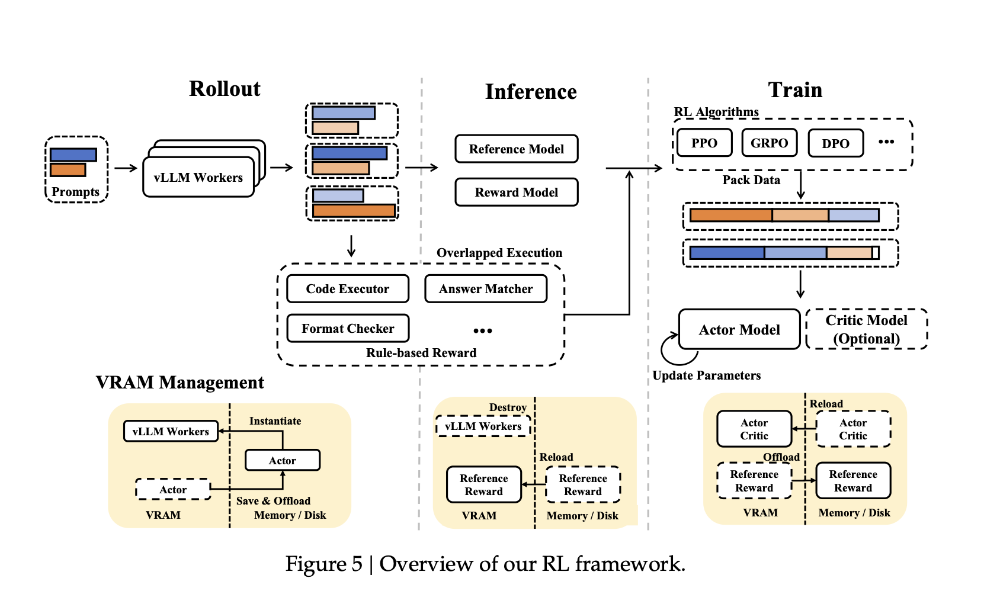
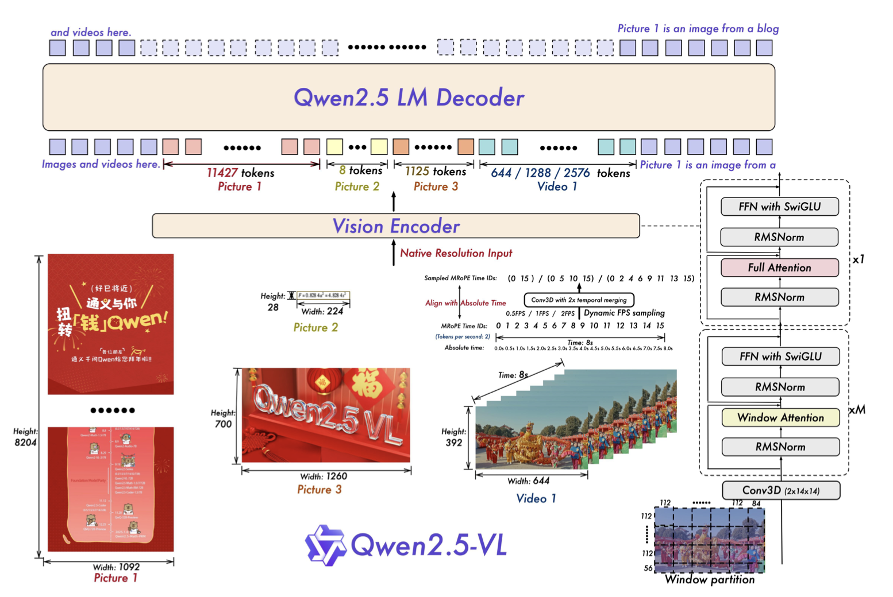
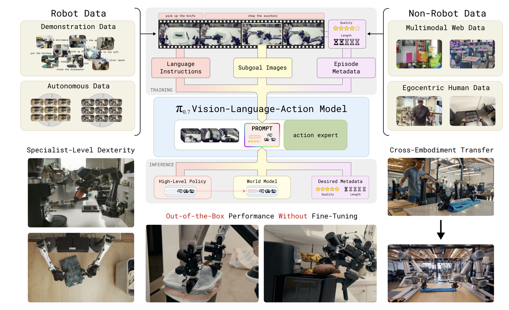
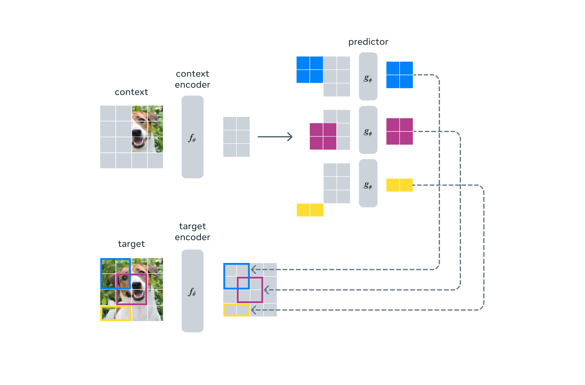
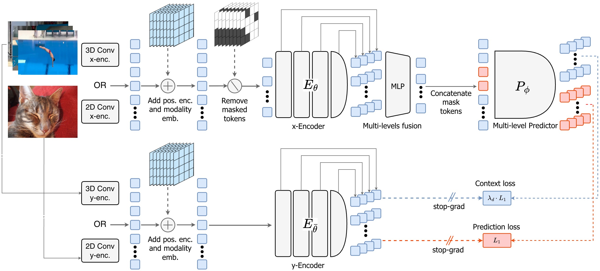

From Bits to Behavior
A 0-to-Expert Tour of the Modern AI Stack: Transformers, LLMs, VLMs, Diffusion, Flow Matching, VLAs, World Models, and a Hands-On Unified Model
This is a single, self-contained article that takes a reader with basic Python and ML background all the way to expertise across the modern AI stack: Transformers and Large Language Models, Vision-Language Models (the LLaVA → Qwen-VL lineage), Variational Auto-Encoders, Diffusion Models (DDPM, score, DDIM, consistency, latent diffusion, DiT), Flow Matching (CFM, Rectified Flow, OT coupling), Vision-Language-Action models (the π₀ family, FAST tokenization, π₀.7), World Models (the RL-dreamer lineage, the video-generation lineage, JEPA, LeJEPA/SIGReg), and finally a practical hands-on case study with the open-source unified BAGEL model. Every concept is derived from first principles; every claim points to a primary source; every chapter ends by handing off to the next.
Preface — How to Read This Book
This article exists because the modern “AI stack” — transformers, vision encoders, diffusion models, flow matching, vision-language models, vision-language-action models for robots, and world models — has accreted into a sprawling stratigraphy of papers, blog posts, codebases, and Twitter threads that almost nobody reads end-to-end. Each layer borrows abstractions from the one below it and quietly modifies them; each tribe (NLP, vision, robotics, generative modeling, RL) has its own notation; each new model release ships with one figure and ten thousand tokens of marketing. The result is that a smart engineer with a basic Python and ML background can sit down to read about, say, BAGEL or Pi-0.5, and find themselves three Wikipedia hops deep into “what is a flow matching ODE” before they’ve gotten past the abstract.
This book is the document I wish I had when I started. It is one long, opinionated, prose-heavy tour of the modern AI stack, written so that you can read it in roughly four to five hours and come out the other side with an actual mechanical understanding — not a vibes-based understanding — of how the major pieces fit together. It assumes you can read Python, that you know what a derivative is, and that you have heard the word gradient descent before. It does not assume you have written a transformer from scratch, that you know what RoPE is, that you have any opinion about FlashAttention, or that you can derive the diffusion loss. By the end you will have all of these.
Who this is for
This is for the reader who is between “I have used ChatGPT and trained a small CNN on MNIST” and “I can read a robotics-foundation-model paper on arXiv and immediately tell which design choices are load-bearing.” That is a long gap. Most resources cover one slice of it — Andrej Karpathy’s nanoGPT is a beautiful slice; Lilian Weng’s blog is a beautiful slice; Hugging Face’s diffusion course is a beautiful slice — but the slices don’t compose into a single mental model. The promise of this article is the composition.
If you are a researcher already working on, say, video diffusion, you will probably find Parts A and B too slow. Skim them; the chapter introductions are designed to let you decide quickly whether you can skip. If you are someone learning the field for a new job, a thesis, a startup, or just because the field has gotten interesting in the last 18 months, this is for you.
The four threads we’re weaving
There is no single linear story of how we got here. There are, instead, four threads that have been twisted into one rope:
- Sequence modeling. From RNNs through the 2017 transformer to today’s 405-billion-parameter language models. This thread is fundamentally about predicting the next token given a history and about discovering that, at enough scale, that simple objective produces something that looks dangerously like reasoning.
- Generative modeling. From early autoencoders through VAEs and GANs to denoising diffusion (DDPM, 2020), score-based models, and finally to flow matching (2022–2023), which has retroactively unified the field. This thread is about sampling from complicated distributions, especially distributions over images and video.
- Perception. From AlexNet through ResNet, ViT, CLIP, and SigLIP. This thread is about learning representations of pixels that downstream models can consume, and about the slow realization that you do not need a hand-crafted vision pipeline if you have enough image-text pairs from the open web.
- Embodiment. A newer thread. Vision-Language-Action models (RT-2, Pi-0, OpenVLA), world models (V-JEPA 2, Sora-as-world-model, DreamerV3), and the broader question of how to bolt perception and generation onto an agent that has to do things in the physical world.
These threads keep crossing each other. A VLM is just a sequence model with a vision encoder grafted on at the embedding layer. A diffusion model is a generative model whose architecture is, increasingly, a transformer. A VLA is a VLM that has been taught to output joint angles instead of just text. A world model is a generative model conditioned on actions. Once you see the four threads, the soup of acronyms starts to organize itself.
Roadmap of the seven parts
The full article is broken into seven parts, A through G, of roughly equal weight:
- Part A (this part). Foundations. Neural network math, tokenization and positional encoding (with a deep dive on RoPE), the transformer architecture, the leap from transformer to LLM, vision encoders from CNN to SigLIP, and the Qwen-VL lineage of vision-language models from
Qwen-VL(2023) throughQwen3-VL(2025). - Part B. Generative modeling I — diffusion. The forward and reverse SDEs, the DDPM training objective, score-based perspectives, conditional generation and classifier-free guidance, latent diffusion (Stable Diffusion), and the DiT architecture.
- Part C. Generative modeling II — flow matching, and the unification of diffusion and flow under a single ODE-based view. Rectified flow, conditional flow matching, why flow matching is winning for video and audio, and the connection back to score-based diffusion.
- Part D. World models. The Jepa lineage (I-JEPA, V-JEPA, V-JEPA 2), latent dynamics models (Dreamer, GenIE), action-conditioned video models (Sora-as-world-model, Genie 2, Cosmos), and the philosophical debate between LeCun’s “predict in representation space” school and the “predict in pixel space” school.
- Part E. Vision-Language-Action models. RT-2, OpenVLA, Pi-0 and Pi-0.5, NVIDIA’s GR00T, the action-tokenization vs. continuous-action-head debate, and how robotics learned to plagiarize the LLM playbook.
- Part F. BAGEL hands-on. A from-scratch fine-tuning walkthrough on a custom dataset, with notes on infra, evaluation, and the things that the paper does not tell you.
- Part G. Synthesis and outlook. What is the next 18 months going to look like? What are the open problems? What should you actually build?
Time budget and how to read
This is a four-to-five-hour read if you read straight through. If you skim derivations and skip code blocks it is more like two hours, but I don’t recommend that for the first pass — the derivations are the point. The article is designed to be read sequentially, but it is also designed so that each chapter ends with a forward reference to the next, so if you have to break, break at a chapter boundary.
I recommend reading with a notebook open. Not for code (although code is fine), but for notation. Every part of this field uses slightly different notation, and you will get more out of this if you commit to one set of symbols and translate everything into it as you go. The glossary below is the set I will use.
Aside on the spirit of this book. I have tried to write the thing I find most useful when I am learning a new sub-field: a long-form essay that explains, in prose, what is happening and why, rather than a series of bullet points that I could have gotten from skimming the abstract. If that means I take a paragraph to motivate a design choice that the original paper handles in half a sentence, so be it. Time you spend reading prose now is time you don’t have to spend reverse-engineering a codebase later.
Glossary of the most-used symbols
I will introduce these properly in context, but here they are in one place so you have something to point at.
| Symbol | Meaning |
|---|---|
| x, y, z | Generic vectors or tensors (data, latents, outputs). |
| x_t | The t-th token in a sequence (Parts A, F); the diffused sample at time t (Parts B, C). |
| d, d_k, d_{\text{model}} | Dimensionality. d_k is the per-head dimension in attention. |
| L, N | Sequence length, batch size. |
| W_Q, W_K, W_V, W_O | Query, key, value, output projections in attention. |
| Q, K, V | The query/key/value matrices themselves: Q = X W_Q, etc. |
| \theta | Model parameters. |
| p_\theta, q | Model distribution and data distribution. |
| \nabla_\theta \mathcal{L} | Gradient of the loss with respect to parameters. |
| \mathrm{softmax}(\cdot) | The softmax function, \mathrm{softmax}(z)_i = e^{z_i}/\sum_j e^{z_j}. |
| \sigma(\cdot) | The logistic sigmoid, \sigma(x) = 1/(1+e^{-x}). |
| \epsilon \sim \mathcal{N}(0, I) | A standard Gaussian noise sample. |
| \beta_t, \alpha_t, \bar{\alpha}_t | Diffusion noise schedule and its cumulative products (Part B). |
| v_\theta(x_t, t) | A learned velocity field (flow matching, Part C). |
| \pi_\theta(a \mid o) | A policy mapping observations to actions (Part E). |
With that out of the way, let’s get on with it.
Part I — Foundations: Transformers, LLMs, and Vision-Language Models
The first six chapters lay the groundwork for everything else in the book. We start from tensors and gradients (Chapter 1), build up through tokenization and position embeddings (Chapter 2), derive the full Transformer (Chapter 3), turn that Transformer into a Large Language Model (Chapter 4), bolt a vision encoder onto its side (Chapter 5), and finally walk through the entire LLaVA → Qwen-VL → Qwen3-VL lineage of state-of-the-art open Vision-Language Models (Chapter 6). By the time you finish Part I, you will have a complete mental model of how a modern multimodal language model is built and trained — and you will be ready for the generative-modeling mathematics of Part II and the embodied agents of Part III. # Chapter 1 — Mathematical and Neural Network Foundations
This chapter is the floor of the building. None of the math here is new in 2026, but the way it composes into modern models is worth re-grounding, because the rest of the book quietly assumes you can move fluently between “I see a tensor of shape [B, L, D]” and “I see a function approximator whose Jacobians are tractable on a GPU.” If you are confident about all of this, skim; if you stub your toe on any of the equations, pause.
1.1 Tensors and shape notation
A tensor is, for our purposes, an n-dimensional array of floating-point numbers. A scalar is rank-0, a vector rank-1, a matrix rank-2, and once you start stacking matrices into batches you reach rank-3 and beyond. In code, we will almost always be holding tensors of shape [B, L, D] — a batch of B sequences, each of length L, where every position carries a D-dimensional feature vector. When we say “an embedding of dimension D = 4096” we mean every token is mapped to a 4096-dimensional vector, and a batch of 8 sequences of length 2048 is then a [8, 2048, 4096] block of bfloat16 taking roughly 128 MB.
A persistent confusion for beginners is that mathematical notation and code notation disagree. Papers write things like y = x W where W \in \mathbb{R}^{D \times D'} and x \in \mathbb{R}^{D}, but PyTorch will happily compute y = x @ W where x.shape == (B, L, D) and W.shape == (D, D') and broadcast over the leading axes. The math is the same; you just keep track of which axes are “real” vector-space axes (here D, D') and which are bookkeeping axes (here B, L). The single most useful habit in this entire field is to write out tensor shapes in comments next to every line of model code. Code that reads x = self.proj(x) is much easier to debug if it reads x = self.proj(x) # [B, L, D] -> [B, L, D'].
1.2 Dot products, matmuls, and the “patterns of association” framing
Almost everything a neural network does, mechanically, is matrix multiplication. The intuition that I find clearest — and that Grant Sanderson’s 3blue1brown series on neural networks and transformers makes vivid — is to think of a matmul as a bank of dot products against learned templates.
A single dot product a \cdot b = \sum_i a_i b_i has an obvious geometric meaning: it is large and positive when a and b point in similar directions, and zero when they are orthogonal. A matrix-vector product W x is then a bank of dot products: each row of W is a template, and the output is a vector of similarity scores — “how much does x look like the first row of W? the second row? the third?” A matrix-matrix product X W does the same thing for many input vectors at once.
This re-framing is more than a mnemonic. When we later study attention, the query/key product Q K^T is exactly a bank of dot products between every query and every key, producing a similarity matrix. When we study an MLP, the first linear layer is a bank of dot products against learned templates — and the nonlinearity then keeps only those scores that survive a threshold, which is why some interpretability work talks about MLPs as approximate key-value memories. The 3blue1brown phrase to remember is “patterns of association”. Linear algebra is just the bookkeeping for storing and retrieving those patterns.
1.3 Nonlinearity, MLPs, and universal function approximation
A purely linear stack is useless: any composition of linear maps is itself a linear map. To get expressiveness we need a nonlinearity. The classical Multi-Layer Perceptron (MLP) consists of an affine transformation, a pointwise nonlinearity, and another affine transformation:
\mathrm{MLP}(x) = W_2 \, \phi(W_1 x + b_1) + b_2.
Where \phi is some pointwise nonlinear function. The universal approximation theorem says, roughly, that with enough hidden units a single-hidden-layer MLP can approximate any continuous function on a compact domain to arbitrary accuracy. This sounds powerful — and it is — but the practical lesson of the last decade is that depth, not just width, is what makes networks tractable to train and good at generalizing. We will see this resurface in residual connections (1.6) and in the transformer’s many-layer architecture (Chapter 3).
In modern transformers the “FFN” sublayer is exactly an MLP — usually with hidden dimension 4D — applied independently to every token’s feature vector. It is also where the bulk of the parameters in a transformer live. For a model with hidden size D = 4096 and an FFN expansion factor of 4, each layer has about 2 \cdot D \cdot 4D = 32 D^2 parameters in the FFN alone, dwarfing the attention block’s 4 D^2.
1.4 Gradient descent and backprop
Training a neural network means choosing parameters \theta to minimize a scalar loss \mathcal{L}(\theta). Gradient descent does this by following the negative gradient:
\theta_{t+1} = \theta_t - \eta \, \nabla_\theta \mathcal{L}(\theta_t),
with learning rate \eta. To compute \nabla_\theta \mathcal{L} for a deep network we use reverse-mode automatic differentiation — what everyone calls backpropagation. The mental model is that the forward pass builds a computation graph, every node remembers its local Jacobian, and the backward pass walks the graph from the loss back to the parameters, multiplying Jacobians by the chain rule.
Intuition pump. Imagine the loss as the height of a hilly landscape over a 200-billion-dimensional parameter space. Gradient descent is a hiker who, at every step, looks at the local slope and takes a small step downhill. The fact that this works at all — that the landscape is friendly enough that a greedy local procedure finds good minima — is one of the deepest empirical facts about modern deep learning. Theory is still catching up; engineers have stopped worrying.
1.5 Softmax, cross-entropy, and likelihood
For classification, regression, and (especially) language modeling, the softmax-then-cross-entropy pair is everywhere. Softmax converts a vector of logits z \in \mathbb{R}^V into a probability distribution over V classes:
\mathrm{softmax}(z)_i = \frac{e^{z_i}}{\sum_{j=1}^V e^{z_j}}.
Cross-entropy between a target one-hot y and the predicted distribution p is
\mathrm{CE}(y, p) = -\sum_{i=1}^V y_i \log p_i = -\log p_{y^*},
where y^* is the index of the true class. Combined, this is just negative log-likelihood of the data under the model. When we say “an LLM is trained by next-token prediction,” we mean it is trained to minimize -\log p_\theta(x_t \mid x_{<t}), summed over all positions in the corpus. Cross-entropy + softmax is also where one of the famous numerical stability tricks comes from: you implement them together as log_softmax followed by a gather, never as the two separate operations, because the unnormalized exponentials overflow.
1.6 LayerNorm, RMSNorm, BatchNorm, and why we normalize
Deep networks have a stability problem: as activations propagate through many layers, their scale drifts, and gradients either vanish or explode. Normalization layers fix this by rescaling activations to a known statistic. The three you will see:
- Batch Normalization (Ioffe & Szegedy, 2015) normalizes across the batch axis: for each feature, subtract the batch mean and divide by the batch standard deviation. It was the breakthrough for CNN training but has practical issues — it leaks information between examples in a batch, it behaves differently at train and test time, and it interacts badly with very small batches. Modern transformers never use it.
- Layer Normalization (Ba, Kiros & Hinton, 2016) normalizes across the feature axis of a single example. For a token’s feature vector x \in \mathbb{R}^D, it computes mean \mu and variance \sigma^2 over the D features, then outputs \gamma \cdot (x - \mu)/\sqrt{\sigma^2 + \epsilon} + \beta with learned scale \gamma and shift \beta. This is the normalization used in the original 2017 transformer.
- RMS Normalization (Zhang & Sennrich, 2019) is a simpler variant that drops the mean-subtraction and shift, keeping only the scale: \mathrm{RMSNorm}(x) = \gamma \cdot x / \mathrm{RMS}(x), where \mathrm{RMS}(x) = \sqrt{\frac{1}{D}\sum_i x_i^2 + \epsilon}. Empirically it works as well as LayerNorm, costs less compute, and has become the default in Llama-2/3, Qwen, DeepSeek, and basically every transformer trained after 2022.
So: when you see a modern transformer and it says “Norm,” assume RMSNorm unless told otherwise. The Qwen2.5-VL technical report, for example, explicitly says it uses “RMSNorm for normalization and SwiGLU as the activation function” in both the LLM and (now) the vision encoder.
1.7 Residual connections and why they enable depth
A residual connection is the trivial-looking trick of having a layer output x + f(x) rather than f(x). The idea is from He et al.’s 2015 ResNet paper, which won everything for years. The point is twofold. First, the identity path makes it easy for a network to learn to do nothing — early in training, f is small, so the network output is approximately the input, and gradients flow unimpeded back to early layers. Second, residuals turn the network into an iterated refinement: each layer adds a small correction to a running representation rather than recomputing it from scratch.
Without residuals, training a 24- or 32-layer transformer is essentially impossible; gradients die. With residuals, depth becomes a free parameter you can scale. Every transformer block you will ever see has two residual streams — one wrapping attention, one wrapping the FFN.
1.8 Adam, AdamW, and friends
Plain SGD is a tank: slow and reliable. For training large neural networks, we use adaptive optimizers that maintain per-parameter statistics. Adam (Kingma & Ba, 2014) keeps an exponential moving average of the gradient (m_t) and of the gradient squared (v_t), and the update is
\theta_{t+1} = \theta_t - \eta \cdot \frac{\hat{m}_t}{\sqrt{\hat{v}_t} + \epsilon},
with bias-corrected moments \hat{m}_t, \hat{v}_t. The intuition is “step further along axes where the gradient has been consistent and steady, and shorter along axes where it has been noisy.” AdamW (Loshchilov & Hutter, 2017) decouples the weight decay term from the gradient, applying it as a separate \theta \leftarrow \theta - \eta \lambda \theta step rather than folding it into the loss. This sounds boring; it is, in fact, one of the most important details in modern training, because it lets you tune weight decay independently of the gradient noise.
Hyperparameters that have become conventional for large transformer training: \beta_1 = 0.9, \beta_2 = 0.95 or 0.98, weight decay \sim 0.05 to 0.1, learning rate around 1–5 \times 10^{-4} at peak with a cosine decay to 10\% of peak. We will see exactly these numbers in the Qwen-VL training configs.
1.9 Activations: ReLU, GELU, and SwiGLU
The choice of nonlinearity has a surprisingly large effect on training quality.
- ReLU (\phi(x) = \max(0, x)). Cheap, simple, made deep learning practical in 2012. Suffers from “dying ReLU” — units stuck in the zero region forever.
- GELU (Hendrycks & Gimpel, 2016, \phi(x) = x \cdot \Phi(x), where \Phi is the Gaussian CDF). A smooth gating-like nonlinearity that became standard in BERT and the original GPT family. Approximately 0.5 x (1 + \tanh(\sqrt{2/\pi}(x + 0.044715 x^3))).
- SwiGLU (Shazeer, 2020) is the activation that conquered the modern transformer FFN. It is not a pointwise nonlinearity but a gated linear unit: rather than W_2 \, \phi(W_1 x), the FFN computes \mathrm{SwiGLU}(x) = W_3 \cdot \big(\mathrm{Swish}(W_1 x) \odot (W_2 x)\big), where \mathrm{Swish}(x) = x \cdot \sigma(x), \odot is elementwise product, and W_1, W_2 are two separate projections used as the “gate” and “value.” This costs you one extra matmul per FFN — and the convention is to shrink the hidden dimension by 2/3 to keep the parameter count constant — but it consistently improves perplexity and downstream performance. Every modern open-source model (Llama, Qwen, DeepSeek, Mistral) uses SwiGLU.
The intuition for why SwiGLU helps is that gates are expressive: a gating mechanism lets the network learn input-dependent multiplicative interactions, which a pure pointwise nonlinearity cannot. It is also a small reason why FFN-heavy models like dense Llama-style transformers tend to outperform attention-heavy designs on language tasks.
One-paragraph summary of Chapter 1. Neural networks are stacks of matrix multiplications (which we view as banks of dot-product templates) interleaved with nonlinearities, normalized to stay stable, connected by residuals so gradients can flow, and trained by AdamW against a cross-entropy loss. Every modern transformer you read about — Llama, Qwen, GPT-5, Gemini — is some variation on this recipe with the hyperparameters tuned and the data scaled.
Chapter 2 — Tokenization, Embeddings, and Positional Encoding
A transformer cannot read text. Before any of the architecture in Chapter 3 applies, the input has to be converted into a sequence of tokens, those tokens have to be mapped to embeddings, and the embeddings have to be annotated with position information so the model knows what came first. This chapter walks through each step, and ends with a deep dive on rotary position embeddings (RoPE), because RoPE is the single most important little equation to understand if you want to read modern model papers without getting lost.
2.1 Tokenization: BPE and SentencePiece
Models cannot operate on raw Unicode bytes (well — they can, but it is expensive). Instead, text is broken into subword units by a tokenizer. The dominant family is Byte-Pair Encoding (BPE), originally a compression algorithm and adapted to NLP by Sennrich et al. (2015) and popularized by GPT-2. The procedure is:
- Start with a vocabulary of single bytes (or characters).
- Count all adjacent pairs in the training corpus.
- Merge the most frequent pair into a new token. Add it to the vocabulary.
- Repeat until the vocabulary reaches the desired size.
The result is a vocabulary where common words (“the,” “and”) are single tokens, less common words are split into a few subword pieces (“transformer” might be “transform” + “er”), and rare strings (Klingon, base64, novel chemical names) become longer sequences of bytes. SentencePiece (Kudo & Richardson, 2018) is a tokenizer training tool that does BPE (or Unigram) on raw text streams without requiring whitespace-pretokenization, which is what made it practical for languages like Chinese and Japanese where there are no spaces.
Vocabulary sizes have crept up over time. GPT-2 used ~50k tokens; Llama-2 used 32k; Llama-3 jumped to 128k; the Qwen2 and Qwen2.5 tokenizers use 151,646 tokens (the Qwen2.5-VL paper makes this explicit in its config table). Bigger vocabularies mean shorter sequences for the same text, which means longer effective context windows and faster inference — at the cost of a larger embedding matrix. For Qwen2.5-VL-72B with D = 8192 and V = 151{,}646, the embedding matrix alone is V \cdot D \approx 1.24 billion parameters.
Aside. “Token count” is the universal unit of LLM economics. When a paper says “we trained on 4.1T tokens,” and the Qwen2.5 tokenizer is in use, that translates very roughly to several trillion words of text — more than every book ever written, plus every web page, scientific paper, and code repository the team could clean.
2.2 Embeddings
After tokenization, every token is an integer in \{0, 1, \dots, V-1\}. The embedding layer is a lookup table E \in \mathbb{R}^{V \times D} — the i-th row is the D-dimensional vector representing token i. Embeddings are learnable parameters and start out random; the model learns, over training, to map related tokens to nearby points in \mathbb{R}^D. Famously, embedding spaces tend to have linear structure — the “king − man + woman ≈ queen” property of word2vec generalizes loosely to learned LLM embeddings, though for large vocabularies this is much harder to verify cleanly.
Tied embeddings (“weight tying”) use the same matrix E for the input embedding and the output unembedding head (the final linear layer that produces logits over the vocabulary). This saves V \cdot D parameters and slightly improves perplexity for smaller models. The Qwen2.5-VL-3B model ties; the 7B and 72B variants do not, because at scale the asymmetry in input/output statistics matters.
2.3 Why we need positional information
Here is the crucial fact about the self-attention layer we are about to meet: it is permutation-equivariant. If you shuffle the tokens of the input, the attention outputs shuffle correspondingly, but the content of each output is unchanged. To attention, the sequence “the cat sat on the mat” and “mat the on sat cat the” are indistinguishable. This is not a bug — it is a deliberate inductive bias that makes attention as expressive as it is — but it means we have to add positional information somewhere else if we want the model to know what came first.
There are roughly four schools of how to do this:
- Sinusoidal absolute positions (original Vaswani 2017).
- Learned absolute positions (BERT, GPT-2).
- Bias-based relative positions (T5, ALiBi).
- Rotary position embeddings (RoPE), which apply position information inside the attention layer by rotating queries and keys. This is what every modern open-source transformer uses.
We’ll cover each, then dwell on RoPE.
2.4 Sinusoidal positional encoding
The original “Attention Is All You Need” paper added a fixed positional encoding to the token embedding before feeding it into the network. For position p and embedding dimension i:
\mathrm{PE}(p, 2i) = \sin\!\left(\frac{p}{10000^{2i/d}}\right), \qquad \mathrm{PE}(p, 2i+1) = \cos\!\left(\frac{p}{10000^{2i/d}}\right).
Every pair of adjacent dimensions (2i, 2i+1) holds a sine and cosine at frequency 10000^{-2i/d}. The lowest-index dimensions oscillate fast (encoding fine position differences), the highest-index dimensions oscillate slowly (encoding coarse position differences). The clever property is that any positional offset \Delta p can be expressed as a linear transformation of \mathrm{PE}(p), because \sin(p + \Delta p) = \sin(p)\cos(\Delta p) + \cos(p)\sin(\Delta p). The hope was that the model could learn to use this for relative positioning. In practice, the model did learn it, but the encoding was rigid and never reached the popularity of learned embeddings — and was eventually superseded entirely by RoPE.
2.5 Learned absolute positions
The BERT and GPT-2 approach is even simpler: allocate a learned embedding for each absolute position up to some max length L_{\max}, and add it to the token embedding. This is what people mean by “GPT-2 had a max context of 1024” — the position embedding table only had 1024 rows. The problem is that learned absolute positions do not extrapolate: you cannot run the model on a longer sequence than it was trained on without random embeddings for the new positions.
2.6 ALiBi (briefly)
ALiBi (Press, Smith & Lewis, 2021) skips position embeddings entirely and instead adds a position-dependent bias to the attention logits. The bias is a linear penalty for distant tokens — attention from position i to position j is biased by -m \cdot |i - j| for a head-specific slope m. ALiBi has the very pleasant property of generalizing to longer sequences than seen at training time, and it was used in MPT-7B and Falcon. But it has lost ground to RoPE, which has similar extrapolation behavior with better empirical performance.
2.7 Rotary Position Embeddings (RoPE) — a deep dive
RoPE, introduced by Su et al. in the RoFormer paper (2021) and now ubiquitous (Llama-2/3, Qwen, DeepSeek, Mistral, virtually every open-source LLM since 2023) is, I claim, the single most-important little equation in modern transformer architecture. Once you see how it works you will understand the M-RoPE / Interleaved-MRoPE variants in Qwen2-VL and Qwen3-VL essentially for free.
2.7.1 The trick in one sentence
RoPE applies position to a query or key vector by rotating its 2D sub-vectors by an angle that depends on the absolute position. Because rotations compose by addition, the dot product between a query at position m and a key at position n then depends only on (m - n). You get relative positioning for free, with no learned parameters.
2.7.2 Derivation via complex multiplication
Let q, k \in \mathbb{R}^d be a query and a key. Group the d entries into pairs: q = (q^{(0)}, q^{(1)}, \dots, q^{(d/2-1)}) where each q^{(i)} \in \mathbb{R}^2, and identify each \mathbb{R}^2 with \mathbb{C}:
q^{(i)} \leftrightarrow q^{(i)}_0 + i \, q^{(i)}_1 \in \mathbb{C}.
Define d/2 frequencies \theta_i = 10000^{-2i/d} (so \theta_0 = 1 is the highest frequency, \theta_{d/2-1} the lowest). Position-encode by complex multiplication:
\mathrm{RoPE}(q, m)^{(i)} = e^{i m \theta_i} \cdot q^{(i)}.
Equivalently, in real coordinates, each q^{(i)} is rotated by angle m \theta_i:
\begin{pmatrix} \tilde{q}^{(i)}_0 \\ \tilde{q}^{(i)}_1 \end{pmatrix} = \begin{pmatrix} \cos m\theta_i & -\sin m\theta_i \\ \sin m\theta_i & \cos m\theta_i \end{pmatrix} \begin{pmatrix} q^{(i)}_0 \\ q^{(i)}_1 \end{pmatrix}.
The whole vector q is thus rotated block-by-block. Do the same to the key k with its position n. Now look at the resulting dot product:
\langle \mathrm{RoPE}(q, m), \mathrm{RoPE}(k, n) \rangle = \sum_i \Re \Big( e^{i m \theta_i} q^{(i)} \cdot \overline{e^{i n \theta_i} k^{(i)}} \Big) = \sum_i \Re \Big( e^{i (m-n) \theta_i} \, q^{(i)} \overline{k^{(i)}} \Big).
The dot product depends on m - n, not on m and n separately. This is the magic.
Why this matters. No learned parameters; no max-length limit; relative positions emerge from absolute positions through a simple algebraic identity. You can train at sequence length 8k and run inference at 32k or 128k with various interpolation tricks (NTK-aware RoPE, YaRN). Long-context LLMs ride on this.
2.7.3 Code sketch
def apply_rope(x, freqs):
# x: [B, H, L, D] (D must be even)
# freqs: [L, D/2] (precomputed m * theta_i)
x_real, x_imag = x[..., ::2], x[..., 1::2] # split pairs
cos, sin = freqs.cos(), freqs.sin() # [L, D/2]
y_real = x_real * cos - x_imag * sin
y_imag = x_real * sin + x_imag * cos
return torch.stack([y_real, y_imag], dim=-1).flatten(-2)2.7.4 Forward reference: M-RoPE and Interleaved-MRoPE
Now we earn the forward references promised at the top of the chapter. In Qwen2-VL (September 2024), the team noticed that the 1D-RoPE formulation above is wasteful for multimodal inputs, because text is 1D, images are 2D (height × width), and videos are 3D (time × height × width). Their solution, Multimodal Rotary Position Embedding (M-RoPE), partitions the embedding dimension into three groups — temporal, height, and width — and applies a separate RoPE rotation to each group with its own position index. For a video token at time t, row h, column w, the rotation angles are (t \theta_i, h \theta_j, w \theta_k) for i, j, k ranging over the three sub-dimension groups. For pure text, all three indices coincide and M-RoPE collapses back to 1D-RoPE.
Qwen2.5-VL kept M-RoPE but added an extra wrinkle: align the temporal IDs to absolute time rather than to frame indices. So if a 2 FPS video and a 0.5 FPS video both cover 8 seconds, the model sees the same temporal IDs at the same wall-clock time. This is what enables hour-long video understanding with second-level temporal grounding.
Qwen3-VL (November 2025) noticed that M-RoPE’s three-way partition created an imbalanced frequency spectrum: temporal, height, and width axes each got their own slice of low and high frequencies, and the slicing hurt long-video performance. Their fix is Interleaved-MRoPE: instead of contiguous blocks of “temporal then height then width,” distribute the three components uniformly across the full embedding dimension so every axis sees the full low-to-high frequency range. They also drop the absolute-time RoPE in favor of explicit text-based timestamp tokens (e.g., a literal <3.0 seconds> token before each video frame group), because the absolute-time approach produced excessively large position indices for long videos.
You will see all three variants in Chapter 6. For now, the takeaway is: RoPE is a flexible building block, and the way you assign position IDs is a real degree of freedom that VLM designers actively tune.

Chapter 3 — Attention Is All You Need: A Full Walkthrough of the Transformer
The 2017 paper Attention Is All You Need by Vaswani et al. (arXiv:1706.03762) is the most important machine learning paper of the last decade. Before it, sequence modeling meant RNNs and convolutions; after it, the transformer ate the field. This chapter walks through Vaswani’s architecture end-to-end, then catches up with the modifications that the post-2020 transformer ecosystem has accreted — KV-cache, grouped-query attention, FlashAttention, pre-LN — so that by the end you can read modern code without surprises.
3.1 The attention mechanism in 60 seconds
Given a sequence of L token embeddings X \in \mathbb{R}^{L \times d_{\text{model}}}, attention works like this:
- Compute three projections: Q = X W_Q, K = X W_K, V = X W_V. Each W_* \in \mathbb{R}^{d_{\text{model}} \times d_k}, giving Q, K, V \in \mathbb{R}^{L \times d_k}.
- Compute pairwise scores: S = Q K^T \in \mathbb{R}^{L \times L}. Entry S_{ij} is the unnormalized “how much should position i attend to position j?”
- Scale and softmax: A = \mathrm{softmax}(S / \sqrt{d_k}). Each row of A is a probability distribution over the L positions.
- Weighted sum of values: \mathrm{Attn}(Q, K, V) = A V \in \mathbb{R}^{L \times d_k}.
Compactly:
\mathrm{Attn}(Q, K, V) = \mathrm{softmax}\!\left(\frac{Q K^T}{\sqrt{d_k}}\right) V.
That’s the whole equation. The mechanism is sometimes called “scaled dot-product attention” because of the \sqrt{d_k} scaling.
3.2 Why the \sqrt{d_k} scaling
Without the scaling, the dot product q \cdot k = \sum_{i=1}^{d_k} q_i k_i for random q, k with i.i.d. components of unit variance has variance d_k. As d_k grows — and in modern models it is typically 64 or 128 — the softmax inputs become enormous, pushing the softmax into a near-one-hot regime where gradients vanish. Dividing by \sqrt{d_k} normalizes the variance back to a constant, keeping softmax in a regime where small differences in logits still produce meaningful gradient signal. This is a small but load-bearing detail — Vaswani notes it explicitly in section 3.2.1 of the paper.
3.3 Multi-head attention
A single attention head can only project queries and keys into one shared subspace. Multi-head attention runs h independent heads in parallel — each with its own W_Q, W_K, W_V matrices and its own dimensionality d_k = d_{\text{model}} / h — and concatenates the outputs:
\mathrm{MHA}(X) = \mathrm{Concat}(\mathrm{head}_1, \dots, \mathrm{head}_h) W_O,
with each \mathrm{head}_i = \mathrm{Attn}(X W_Q^{(i)}, X W_K^{(i)}, X W_V^{(i)}) and W_O \in \mathbb{R}^{d_{\text{model}} \times d_{\text{model}}}. The point of multiple heads is interpretability and capacity: different heads can specialize in different kinds of relations (subject-verb, anaphora, syntactic adjacency, etc.). For a model with d_{\text{model}} = 4096 and h = 32, each head’s dimension is d_k = 128.

3.4 The encoder-decoder structure (and why most modern LLMs are decoder-only)
The original transformer was an encoder-decoder model for machine translation. The encoder is a stack of N identical layers, each containing a self-attention sublayer and an FFN sublayer. The decoder is also N identical layers but has three sublayers: causally-masked self-attention, cross-attention (queries from the decoder, keys/values from the encoder), and an FFN. Translation works by encoding the source sentence into a memory and then auto-regressively generating the target tokens, with each new target token cross-attending to the entire source.
Modern LLMs (GPT, Llama, Qwen) are decoder-only: there is no separate encoder, just a stack of layers each doing causal self-attention followed by an FFN. Cross-attention reappears in VLMs (Chapter 6) and in encoder-decoder models like T5, but for pure language modeling, decoder-only won.
3.5 Cross-attention
In the decoder, cross-attention uses queries from the current decoder layer’s hidden states and keys/values from the encoder output. The math is identical to self-attention; only the source of K and V changes. This pattern reappears everywhere in modern multimodal models: text queries cross-attending to vision features, latent queries cross-attending to a long context, etc. The Qwen-VL v1 adapter (Chapter 6) is essentially one cross-attention layer with learned queries.
3.6 The feed-forward sublayer
Sandwiched between attention blocks, every transformer layer has an MLP applied identically to every position:
\mathrm{FFN}(x) = W_2 \, \phi(W_1 x + b_1) + b_2,
with hidden dimension typically 4 d_{\text{model}} in the original transformer. In modern models, this is replaced by SwiGLU (see 1.9), and the hidden dimension is shrunk by 2/3 to keep parameter count constant. The Qwen2.5 LLM at 72B has d_{\text{model}} = 8192 and FFN intermediate size 29568 \approx 3.6 \cdot d_{\text{model}}, consistent with the SwiGLU shrink.
3.7 Pre-LN vs. post-LN
The original transformer puts LayerNorm after each residual addition: x \leftarrow \mathrm{LN}(x + \mathrm{Sublayer}(x)). This is “post-LN” and turns out to be unstable for very deep networks — gradients explode without careful warmup. Around 2019, people realized that putting the norm before the sublayer — x \leftarrow x + \mathrm{Sublayer}(\mathrm{LN}(x)) — is much more stable and removes the need for an extensive warmup schedule. This is “pre-LN.” Every modern transformer uses pre-LN. (You can read the explicit argument in Xiong et al. 2020, “On Layer Normalization in the Transformer Architecture.”)
3.8 Causal masking
For an autoregressive decoder, position i must only attend to positions \leq i. We enforce this by adding a mask M to the attention logits before softmax, where M_{ij} = -\infty for j > i and 0 otherwise:
A = \mathrm{softmax}\!\left(\frac{Q K^T}{\sqrt{d_k}} + M\right).
In practice, this is a single triangular boolean operation in code, but conceptually it is what makes an LLM able to generate text one token at a time.
3.9 KV-cache and the O(n) trick
At inference time, generating a new token only requires computing one new query, one new key, and one new value. The keys and values from all previous positions are unchanged — so we cache them. The KV-cache is an array of shape [B, L, H, d_k] per layer (one each for K and V) that we append to as we generate. The cost per generated token then becomes O(L \cdot d) (one query times L cached keys) rather than O(L^2 \cdot d). For long-context inference this is the difference between viable and unviable.
The KV-cache also dominates inference memory. For a 70B model with 80 layers, H = 64, d_k = 128, the KV-cache for a single sequence at 32k tokens is roughly 2 \cdot 80 \cdot 32000 \cdot 64 \cdot 128 \cdot 2 bytes ≈ 80 GB. This is why Llama-3 70B and Qwen2.5-72B don’t actually serve 128k context to many concurrent users — your VRAM runs out long before your compute does.
3.10 GQA and MQA
The fix for that KV-cache problem is to have fewer key/value heads than query heads. Multi-Query Attention (MQA) uses one shared key and value across all heads. Grouped-Query Attention (GQA) (Ainslie et al. 2023) splits the difference: H query heads share G key/value heads, with G \ll H. Llama-2-70B uses H = 64, G = 8; Qwen2.5 follows the same template. The Qwen2.5-VL table earlier shows “# KV Heads” = 2/4/8 for the 3B/7B/72B variants, with H implied by the head size (128) and hidden size — i.e., aggressive GQA. The KV-cache shrinks by a factor of H/G, which for Llama-2 is 8\times.
GQA is essentially free: there is a tiny capacity hit, but the inference memory savings are enormous, and at the scales we care about (7B+) the capacity hit is unmeasurable.
3.11 FlashAttention
The attention operation \mathrm{softmax}(Q K^T / \sqrt{d_k}) V is, naively, an L \times L matrix that you materialize, normalize, and multiply by V. For L = 8192 and float16, that’s 256 MB per head per batch, and you have many heads and batches. The bottleneck is not FLOPs — it is memory bandwidth: shuttling the L \times L logits from HBM (GPU main memory) to SRAM (on-chip cache) and back.
FlashAttention (Dao et al. 2022) is the algorithmic insight that you can compute exact attention without ever materializing the L \times L matrix in HBM. The trick is to tile the computation: read a block of Q and a block of K into SRAM, compute their dot products and a running max/sum for the softmax, accumulate into a partial output, and proceed to the next block. The numerically stable streaming softmax lets you compose blocks correctly. The result is exact attention, with 2–4× speedup and dramatic memory savings, especially at long sequence length. FlashAttention-2 and FlashAttention-3 incrementally improved this, and now it is the default kernel in PyTorch’s scaled_dot_product_attention.
Editorial note. FlashAttention is the kind of paper that changes everything by changing very little — the math is unchanged, only the implementation is rethought. Almost every long-context LLM you see today (Qwen2.5-VL with 128k, Qwen3-VL with 256k, Llama-3 with 128k) depends on it. If you write a transformer from scratch today and skip FlashAttention, you have a teaching toy, not a useful model.
3.11b Q-Former and the alternative VLM recipe
The Transformer chapter is supposed to end here, but there is one piece of machinery you will meet the moment you open a 2022–2023-era multimodal paper that is not, strictly, part of the vanilla transformer and is also not naturally covered anywhere else in this book: the Q-Former of BLIP-2 (Li et al., Salesforce, January 2023) and its cousin the Perceiver Resampler of Flamingo (Alayrac et al., DeepMind, April 2022). These are cross-attention adapters — small transformer blocks whose only job is to translate a long, dense sequence of vision features into a short, language-shaped soft prompt that a frozen LLM can ingest. They sit precisely at the seam between the encoder and the language model, and once you understand them you understand both (a) what Chapter 6’s “Q-Former-lite” Qwen-VL v1 adapter is doing and (b) why the field eventually walked away from this design in favour of the simpler MLP-merger recipe that LLaVA and Qwen2-VL standardised. Forward reference: this is the third bridge from vision features into LLM token space that Chapter 6 will catalogue, between LLaVA’s linear projection and Qwen-VL’s position-aware cross-attention adapter; the Q-Former / Perceiver line is the one that dominated 2022–2023 and still shapes mobile and edge VLMs in 2026.
The motivation is worth stating before the mechanism. A ViT processing a 224×224 image at 14×14 patches produces 256 patch tokens; at 448×448, more than a thousand; at full document resolution, tens of thousands. Those tokens are not all equally informative — neighbouring patches share enormous low-level redundancy — but a naive bolt-on (LLaVA’s “concatenate all 256 patch features with the text and let the LLM sort it out”) burns context length on tokens whose marginal information content is low. Worse, in 2022 the open-source LLMs the multimodal teams wanted to use as backbones (FLAN-T5, OPT, Vicuna) had 2k context windows, and every visual token you spent was a text token you could not. The Q-Former and Perceiver Resampler were designed to solve exactly this problem: take a variable-length sequence of vision features, distil it down to a small fixed number of “language-side” tokens — 32 for BLIP-2, 64 for Flamingo — and let the LLM see only those.
3.11b.1 BLIP-2’s Q-Former: a tiny transformer between two frozen giants
The architectural picture in BLIP-2 (arXiv:2301.12597) is the cleanest version of this idea. You have a frozen vision encoder on the bottom (CLIP ViT-L/14 or ViT-G/14, the same family from Chapter 5), a frozen LLM on top (OPT-2.7B/6.7B or FlanT5-XL/XXL), and a small ~188M-parameter bidirectional transformer wedged between them. That middle transformer is the Querying Transformer — Q-Former for short — and it is the only part of the system that is actually trained.
The Q-Former carries a set of N_Q learnable query tokens (default N_Q = 32, each of dimension 768). These queries are model parameters; they have no input dependence. Inside each Q-Former layer, the queries do two things in sequence. First, they self-attend among themselves: a standard N_Q \times N_Q attention block over the 32 queries. Second, they cross-attend into the frozen ViT’s patch features, which act as keys and values. Concretely, if v_1, \dots, v_M are the M = 257 patch tokens emerging from the ViT (256 patches plus the CLS token), the cross-attention output at query position i is
\mathrm{XAttn}(q_i, V) \;=\; \mathrm{softmax}\!\Big(\frac{(W_q q_i)(W_k V)^\top}{\sqrt{d}}\Big)\,(W_v V),
where V = [v_1; \dots; v_M] \in \mathbb{R}^{M \times d_v} and W_q, W_k, W_v are the standard projection matrices. After the cross-attention, each query passes through an FFN sublayer, exactly the same recipe as a vanilla transformer block from §3.6. The 32 outputs of the final Q-Former layer are then linearly projected to the LLM’s embedding dimension and fed in as a 32-token soft prompt prefixed to whatever text the user supplies.
The fixed-length aspect is the load-bearing design choice. Regardless of input resolution — 224×224 or 448×448, 256 patches or 1024 — the Q-Former always emits exactly 32 tokens. Compression ratios of 256 \to 32 = 8\times or 1024 \to 32 = 32\times are not unusual. The claim is that the queries learn to “ask the right questions” of the ViT features: one query may pull in object-level summaries, another OCR-relevant glyphs, another global scene structure. The empirical justification is that VLM benchmarks did not collapse when this compression was applied, which means the patch sequence carries enormous redundancy and most of it can be discarded.
3.11b.2 The BLIP-2 two-stage pretraining recipe
What is genuinely interesting about BLIP-2 is the two-stage training pipeline, which has been copy-pasted (with variations) into every subsequent Q-Former-based VLM.
Stage 1: representation learning. Freeze the ViT. Train the Q-Former alone on image-caption pairs with three losses that look like a miniature reprise of CLIP plus caption training:
- Image-Text Contrastive (ITC). Treat the Q-Former’s outputs as image features and a separate text encoder’s outputs as text features; train a CLIP-style InfoNCE loss (Chapter 5.3) over a batch. To match shapes, the 32 query outputs are pooled (the maximum over the batch’s similarity scores is taken).
- Image-Text Matching (ITM). A binary classification — does the caption actually describe this image? — over hard negatives. This is a finer-grained discriminator than ITC’s contrastive grid.
- Image-Grounded Text Generation (ITG). A captioning loss: ask the Q-Former to generate the caption autoregressively, with the cross-attention into ViT features providing the visual evidence.
Crucially, these three losses are jointly optimised with task-specific attention masks between the queries and the text tokens. ITC uses queries-only attention (the text encoder is parallel, not interleaved). ITM uses bidirectional attention between queries and text — both can see each other. ITG uses causal attention from text to queries but blocks queries from seeing text, so the queries cannot cheat by reading the answer. This is one of those papers where the details of the mask matter more than the high-level architectural box.
Stage 2: generative pretraining. Now freeze the Q-Former’s representation-learning weights, attach the frozen LLM (OPT or FlanT5), and train the Q-Former + a linear projection layer to feed its 32 tokens to the LLM as a soft prompt. The loss is the standard LLM language-modeling loss on the caption — predict the next token of “a photo of a golden retriever lying on the grass” given the 32 visual soft-prompt tokens. The LLM itself never sees a gradient; it is a frozen oracle that the Q-Former has to learn to talk to.
The two-stage design is what makes BLIP-2 cheap. The expensive frozen pieces — a 1B+ parameter ViT and a 6.7B OPT — never get a gradient. Only the 188M Q-Former trains. Salesforce reported reaching state-of-the-art zero-shot VQA-v2 performance for the time with vastly less compute than Flamingo had used, which was the headline that put BLIP-2 on the map.
3.11b.3 Flamingo’s Perceiver Resampler: distil, then inject everywhere
Flamingo (arXiv:2204.14198) preceded BLIP-2 by nine months and took a slightly different bet. Like BLIP-2, it has a learnable set of latent queries (64 of them) that cross-attend into vision features. DeepMind called this module a Perceiver Resampler, inheriting the name from their earlier Perceiver and Perceiver-IO architectures (Jaegle et al. 2021, 2022) which had built general-purpose latent-bottleneck models for arbitrary input modalities.
The resampler itself is essentially one or two layers of cross-attention from the 64 latents into the ViT features (NF-ResNet for the original Flamingo, a vision-transformer in follow-ups). So far, structurally similar to one Q-Former layer. The genuine innovation is what Flamingo does with those 64 latents: rather than concatenating them to the LLM’s input as a soft prompt, Flamingo inserts gated cross-attention layers throughout the body of the LLM. After each (or every few) frozen LLM transformer block, a new trainable cross-attention layer takes the LLM’s hidden states as queries, the 64 latent tokens as keys/values, and adds its output back into the residual stream — multiplied by a learned tanh gate that starts at zero so that, at initialisation, the inserted layers act as identity and the frozen LLM is preserved.
Schematically, the modification to the residual stream at LLM layer \ell becomes
x_\ell \;\leftarrow\; x_\ell \;+\; \tanh(\alpha_\ell) \cdot \mathrm{XAttn}(x_\ell, \, \mathrm{Resampler}(v_{\text{ViT}})),
where \alpha_\ell is a per-layer scalar initialised to zero. As training progresses the gates open and visual information starts to influence the LLM’s hidden states layer by layer. Only the resampler, the inserted cross-attention layers, and the gates train; the vision encoder and the LLM are both frozen.
The reason DeepMind did it this way is interleaved few-shot prompting. Flamingo was designed to ingest sequences like “[image-1] caption-1. [image-2] caption-2. [image-3]” and produce the missing caption — which means visual information has to be routed to the right text positions, not just dumped at the front of the sequence. Gated cross-attention layers inside the LLM give every text token, at every depth, the ability to query the right image’s latents. The price is that Flamingo’s adapter is significantly larger than BLIP-2’s — about 10B of inserted cross-attention parameters in Flamingo-80B — but the frozen 70B Chinchilla backbone is so much larger that this is still a thin layer on top.
3.11b.4 The compression math: why so few tokens suffice
A reasonable question at this point is how can 32 tokens possibly capture an image? The defensive answer is that they cannot, exactly — but they can capture enough for caption-style and VQA-style downstream tasks. There are two ways to see this.
The first is information-theoretic. A 256-patch ViT output at d = 1024 contains 256 \times 1024 \approx 2.6 \times 10^5 floating-point numbers per image. A 32-query Q-Former output at d = 768 contains 32 \times 768 \approx 2.5 \times 10^4. That is a 10× compression in raw float count, but vastly less in effective information, because patch tokens share huge amounts of low-level redundancy — adjacent patches of the same sky region carry nearly identical features. Empirically, the spectral analysis of ViT activations shows that most of the variance lives in a low-dimensional subspace, and 32 well-chosen queries can plausibly span the part of that subspace that matters for downstream language tasks.
The second is empirical. BLIP-2 with 32 queries matches or exceeds Flamingo on VQA-v2 zero-shot. PromptCap (Hu et al. 2022), an earlier ancestor with similar bottleneck queries, showed that captioning quality was essentially flat between N_Q = 32 and N_Q = 256 for general images. The Q-Former bottleneck is enough — for the kinds of tasks Q-Former was evaluated on. That parenthetical is doing a lot of work, and we come back to it in the next subsection.
3.11b.5 Why the field moved on
By mid-2024, the centre of gravity of the open-source VLM ecosystem had moved decisively away from Q-Former-style designs. Mistral’s LLaVA-NeXT used an MLP. Qwen2-VL onward used an MLP merger that compresses 2×2 patch groups (Chapter 6.4). The DeepSeek-VL family used an MLP. The Idefics-3 update (Hugging Face, Aug 2024) explicitly removed the Perceiver Resampler from the previous Idefics-2 design and replaced it with a pixel-shuffle-plus-MLP. The reasons are worth listing because they generalise to any bottleneck adapter you might be tempted to introduce.
First, MLP merging is simpler and trains faster. There is no two-stage representation-learning pretraining, no carefully orchestrated attention masks, no separate text encoder, no auxiliary contrastive loss. You just concatenate vision tokens with text tokens and let the LLM’s existing self-attention do the routing. Once you have enough multimodal SFT data — which LLaVA’s synthetic-instruction recipe (Chapter 6.2) showed was achievable with modest compute — the LLM happily learns to attend to raw vision tokens. The “translator needs to be smart” intuition turned out to be wrong; the LLM was already smart enough.
Second, Q-Former bottlenecks discard fine-grained spatial information. The 32 query tokens are a global summary. If your downstream task is to read the third row of a table in a screenshot, or to identify which of two visually similar buttons on a mobile UI to click, or to OCR a long stretch of small text, the global summary is fatal. The 2024 push toward document understanding and GUI-agent capabilities (Qwen2.5-VL’s DocVQA at 96%+, ScreenSpot Pro at 43.6%; cf. Chapter 6.5) is exactly the regime where global-bottleneck designs fail and per-patch retention wins.
Third, native-resolution recipes require variable-length sequences, which Q-Former’s fixed-query design cannot accommodate. Qwen2-VL’s “naive dynamic resolution” (Chapter 6.4) lets a thumbnail produce 8 tokens and a high-resolution document produce 5000. A Q-Former with N_Q = 32 produces 32 tokens for both, throwing away the entire reason high-resolution input exists.
Fourth, and most damning to the long-term Q-Former line: DeepStack-style cross-layer fusion (Qwen3-VL, Chapter 6.6) directly contradicts the “one big compression bottleneck” philosophy. Where Q-Former tried to push all vision information through a single 32-token soft prompt at the LLM’s input layer, DeepStack injects vision features at multiple LLM layers, with multiple per-layer MLP mergers. The implicit claim is that different LLM layers want different kinds of visual information, and a single global bottleneck is the wrong design at the architectural level.
Editorial note. Q-Former is a paradigm example of an idea that was correct for its constraints. In 2022, open-source LLM backbones had short context windows and were expensive to run, GPU memory was scarce, and multimodal data was thin. A 32-token bottleneck made every part of that problem easier. Two years later — long contexts, cheap inference, abundant data — the bottleneck became the bug. This is the rhythm of the field: a design choice that lets a clever team ship a model in 2022 becomes a footnote in 2024 not because it was wrong but because the constraints changed.
3.11b.6 Where Q-Former still wins
The Q-Former lineage has not died; it has retreated to the regimes where compression genuinely matters. Three places it still shows up.
Edge and mobile VLMs. A model running on a phone or embedded device has hard token budgets. A 32-token soft prompt is dramatically cheaper to process than 1024 patch tokens, and the compression artefacts that matter most for desktop document AI matter much less for “describe this photo to me” use cases. MobileVLM (Chu et al. 2023), MiniGPT-4 (Zhu et al. 2023), and the Imp series all use Q-Former-style designs essentially for inference cost.
Multimodal RAG over very long visual streams. When you want to retrieve a few salient frames from an hour of video or a few illustrative pages from a 500-page document, a fixed-token-per-image summary is exactly what a retrieval index wants. Q-Former-style features are still common as the embedding layer of multimodal retrieval systems even when the downstream LLM uses an MLP merger.
Specialised modalities. Audio-language and bio-signal-language models often have hundreds of thousands of input tokens (raw waveforms, ECG samples, mass spectra) for which an MLP merger is computationally infeasible. The Audio Q-Former in BLIP-2-Audio and the spectrogram resamplers in Whisper-derived audio LLMs are direct descendants.
The pattern that survives, even where the literal Q-Former has been retired, is the philosophy of cross-attention adapters: the idea that the bridge between a foreign-modality encoder and an LLM can be a learnable transformer in its own right, not just a linear map. Qwen-VL v1’s “Q-Former-lite” position-aware cross-attention adapter (Chapter 6.3) is in this lineage. Flamingo’s gated cross-attention layers are reincarnated in some 2025 video-LLM designs that want to keep the LLM frozen. The Q-Former’s specific 32-query bottleneck was a hyperparameter; the cross-attention adapter was an architectural idea, and architectural ideas have nine lives.

So when Chapter 6 says LLaVA used a linear projection and Qwen-VL v1 used a cross-attention adapter, the cross-attention adapter is this — a thinned-out Q-Former with learned position-aware queries — and the LLaVA story is the alternative simpler universe in which the LLM itself does the integration. Both worked. The simpler one won at scale. That is going to be a recurring lesson in this book. ## 3.12 Putting it together: pseudocode for a transformer block
def transformer_block(x, layer_idx):
# x: [B, L, D]
# ----- attention sublayer (pre-LN, GQA, RoPE) -----
h = rms_norm(x) # [B, L, D]
q = h @ W_q[layer_idx] # [B, L, H * d_k]
k = h @ W_k[layer_idx] # [B, L, G * d_k]
v = h @ W_v[layer_idx] # [B, L, G * d_k]
q, k = apply_rope(q), apply_rope(k) # rotate by position
k = k.repeat_interleave(H // G, dim=-2) # broadcast GQA keys
v = v.repeat_interleave(H // G, dim=-2)
a = flash_attention(q, k, v, causal=True) # [B, L, H * d_k]
x = x + a @ W_o[layer_idx] # residual
# ----- FFN sublayer (pre-LN, SwiGLU) -----
h = rms_norm(x)
gate = swish(h @ W_gate[layer_idx]) # [B, L, D_ffn]
up = h @ W_up[layer_idx] # [B, L, D_ffn]
x = x + (gate * up) @ W_down[layer_idx] # residual
return xThis single function, repeated N times (e.g. 32 layers for a 7B model, 80 for 70B), with an embedding lookup at the start and an unembedding linear at the end, is the entire modern decoder-only transformer. There is nothing else.
Chapter 4 — From Transformer to LLM
A transformer is an architecture. A large language model is a transformer trained at scale on a next-token-prediction objective, then aligned and instruction-tuned. The leap from the 2017 transformer to GPT-3 (2020) to GPT-4 (2023) to the o1/R1-style reasoning models (2024–2025) was not driven by clever architecture changes — the architecture barely changed. It was driven by scale: more parameters, more data, more compute. And then by post-training: SFT, RLHF, DPO, and the long chain-of-thought revolution. This chapter walks through that arc.
4.1 The autoregressive next-token objective
The training objective for an LLM is laughably simple. Take a corpus \mathcal{D} of tokenized text. For each sequence x_1, \dots, x_T, minimize the negative log-likelihood
\mathcal{L}(\theta) = -\sum_{t=1}^{T} \log p_\theta(x_t \mid x_1, \dots, x_{t-1}).
That’s it. There is no clever auxiliary loss, no contrastive term, no reconstruction penalty. Just: predict the next token given the previous ones. The transformer with causal masking gives us p_\theta(x_t \mid x_{<t}) at every position simultaneously, and we sum the cross-entropies. A 7-billion-parameter model trained on 2 trillion tokens of high-quality text will see roughly 2 \times 10^{12} next-token-prediction problems, and the gradient signal from each one nudges the model toward a slightly better next-token guess.
4.2 The GPT lineage and emergent capability
GPT-1 (2018, 110M parameters) showed that transformer pretraining transfers to downstream tasks. GPT-2 (2019, 1.5B) showed that scaling the same recipe up gave you a model that could do zero-shot translation and summarization without ever being fine-tuned. GPT-3 (2020, 175B) showed in-context learning: feed the model a few examples in the prompt and it would generalize to new examples of the same task. GPT-4 (2023) cranked the recipe one more notch and produced something that could pass the bar exam.
The recurring lesson, articulated as the “scaling hypothesis,” is that capabilities emerge from scale. Subjectively, the model goes from autocomplete to writer to research assistant as you turn the dial on parameters × data × compute. Why this happens is still partly a mystery; the empirical fact is robust enough that every major lab has rebuilt their roadmap around it.
3blue1brown framing. Sanderson’s “What does GPT actually learn?” video makes a useful point: the MLP sublayers can be read as approximate key-value memories. The first linear layer of the FFN matches incoming activations against a bank of learned “key patterns” — for example, “the input looks like the name of a U.S. president followed by ‘was born in.’” If the match is strong, the nonlinearity passes the score through, and the second linear layer adds back a “value vector” — perhaps the embedding of “Virginia” or “Illinois.” Attention layers then route information between positions: pulling the right name forward, sending the year backward. Networks of this form can store an astonishing amount of factual knowledge in their weights, because there are billions of (key, value) memory cells distributed across hundreds of FFN layers. This is the cleanest mental model I have seen for what a trained LLM is.
4.2b Mixture-of-Experts (MoE) — sparse scaling of LLMs
The GPT scaling story we just told is a story about dense models: every parameter is touched on every token. That is the regime the original Vaswani transformer was designed for, the regime in which scaling laws were first measured (Kaplan et al. 2020, Hoffmann et al. 2022), and the regime in which Llama, Qwen, Mistral, and almost every open-source frontier model up to 2023 operated. There is, however, a parallel evolutionary branch that grew up alongside dense scaling, that quietly powered some of the largest closed models in the field, and that has, by 2025–2026, become the default architecture for the largest open-source releases (Mixtral 8x7B, DeepSeek-V3 at 671B, Qwen3-VL’s MoE variants at 30B-A3B and 235B-A22B). This is the Mixture-of-Experts (MoE) lineage, and it deserves its own section because the architecture is genuinely different from a dense transformer, the training pathology is genuinely different, and the inference engineering is very different. Chapter 6 will mention Qwen3-VL-235B-A22B in one breath without unpacking what the “-A22B” suffix means; we unpack it now.
The motivation is a coupling we have not yet challenged. In a dense transformer, the cost of one training step scales as O(\text{parameters} \times \text{tokens}), because every token activates every parameter. Doubling the parameter count doubles the per-token FLOPs; doubling the token count doubles the number of steps. The Chinchilla recipe (§4.3) just says these two doublings should be balanced. But what if we could break the coupling? What if we could give a model more parameters’ worth of capacity without proportionally more per-token compute? That is the MoE promise. A 671B-parameter MoE may activate only 37B of those parameters on any given token, so it costs (roughly) the same to train and serve as a 37B dense model while storing 18× more information in its weights.
4.2b.1 The Switch Transformer: route each token to one expert
The cleanest entry point is Switch Transformer (Fedus, Zoph & Shazeer, Google, 2021, arXiv:2101.03961), which formalised the modern recipe and showed it scaled to trillion-parameter models. The architectural change is local to the FFN sublayer. Recall (§3.6) that a transformer block alternates between attention and FFN; in the FFN, every token’s hidden state x \in \mathbb{R}^D is passed through a single MLP \mathrm{FFN}(x), identical across all tokens. Switch Transformer replaces that single FFN with a bank of E FFNs — the experts — and a small router that picks which expert each token visits.
The router is itself a one-layer MLP: a single matrix W_g \in \mathbb{R}^{D \times E} that projects the hidden state into a vector of expert scores. Apply softmax to get a distribution, then route each token to its top-1 expert:
g(x) = \mathrm{softmax}(W_g x), \qquad i^*(x) = \arg\max_i g_i(x).
The FFN sublayer then becomes
y \;=\; g_{i^*}(x) \cdot \mathrm{FFN}_{i^*}(x).
The gating weight g_{i^*}(x) is multiplied in so the router’s choice has differentiable consequences — without it, the \arg\max blocks gradient flow. With it, the router gets a gradient signal proportional to how good its chosen expert turned out to be at this token.
What just happened, computationally? Per token, you evaluated one FFN out of E. The total FLOPs are the same as a dense model with one FFN per layer — independent of E. But the parameter count of the layer just multiplied by E. If you have E = 64 experts each the size of a normal FFN, you have 64× the parameters with 1× the per-token compute. This is the central trade.
The catch — and it is the source of essentially all the engineering pain that follows — is load balancing. Nothing in the loss above prevents the router from collapsing onto one favourite expert and ignoring the rest. If that happens, 63 of the 64 experts are dead weight, the model behaves like the smallest possible dense model, and you have wasted your parameters. Switch Transformer introduced an auxiliary load-balancing loss that explicitly penalises imbalance:
\mathcal{L}_{\text{aux}} \;=\; \alpha \cdot E \cdot \sum_{i=1}^{E} f_i \cdot P_i,
where f_i is the fraction of tokens in the batch routed to expert i (a hard, non-differentiable count), P_i is the average router probability assigned to expert i across the batch (soft and differentiable), and \alpha is a small coefficient (typically 0.01). This loss is minimised when both f and P are uniform: every expert gets 1/E of the tokens and has 1/E average probability. The product f_i \cdot P_i is non-differentiable through f_i but differentiable through P_i, which is enough — moving the soft probabilities toward uniform pulls the hard counts along with them.
Why the product, not the sum? The choice of \sum f_i P_i rather than, say, \sum (f_i - 1/E)^2 is deliberate: the product form makes the loss proportional to the correlation between which experts get many tokens and which experts the router likes. Penalising correlation, not variance, turns out to be more stable and more amenable to large-batch training. It is the kind of detail that you accept without reading the appendix the first time and that, in retrospect, was load-bearing.
4.2b.2 Top-K routing: GLaM, Mixtral, and the modern recipe
Switch Transformer routed each token to exactly one expert. The follow-ups quickly learned that top-K routing — pick the top K \geq 2 experts, weight by their gating probabilities, sum — was strictly better at the same total compute, because the router’s mistakes are softer and the gradient signal is richer. The general form is
y \;=\; \sum_{i \in \mathrm{TopK}(g)} \frac{g_i(x)}{\sum_{j \in \mathrm{TopK}(g)} g_j(x)} \cdot \mathrm{FFN}_i(x),
with the normalisation inside the top-K set ensuring the gating weights sum to one. The cost is now K FFN evaluations per token, still independent of E.
GLaM (Du et al., Google, 2021) was the first headline-grabbing application: a 1.2T-parameter MoE with 64 experts and top-2 routing, using only 8% of the per-token FLOPs of GPT-3 (175B) while matching or exceeding it on zero-shot benchmarks. The asymmetry — 8% FLOPs for 6× the parameter capacity — was the kind of result that made every infrastructure team in the world re-evaluate whether dense was the right default.
Mixtral 8x7B (Jiang et al., Mistral, arXiv:2401.04088, Jan 2024) brought MoE into open weights at scale. The architecture: a Mistral-7B backbone with each FFN replaced by 8 experts and top-2 routing. Active parameters per token: ~13B (because the experts dominate the parameter count and you use 2 of them). Total parameters: ~47B. The model competed with GPT-3.5 on most benchmarks at the price-per-token of a 13B dense model. Mixtral was the moment MoE went from “Google’s private trick” to “the default thing your open-source post-trainer is fine-tuning.”
DeepSeek-V3 (DeepSeek-AI, arXiv:2412.19437, Dec 2024) pushed every dial harder. Total parameters: 671B. Active per token: 37B. Routing: top-8 out of 256 routed experts plus a single shared expert that every token always visits. The shared expert is a small but important departure from the Switch/Mixtral template — it gives the model a place to put common, modality-general computation that does not need to be specialised, freeing the routed experts to specialise harder. Finer-grained experts (256 small ones rather than 8 large ones) are now the dominant flavour, because finer granularity gives more expressive routing decisions and tends to balance better in practice.
4.2b.3 Auxiliary-loss-free balancing: the DeepSeek trick
The auxiliary load-balancing loss is the original sin of MoE training. It is necessary — without it, expert collapse is universal — but it is also a competing objective. The model wants to send each token to whichever expert will minimise the language-modeling loss; the auxiliary loss wants to spread tokens uniformly regardless of fit. Tuning \alpha is a constant headache. Set it too high and the router becomes lazy, spreading tokens by lottery; set it too low and one expert dominates again. DeepSeek-V3 introduced an auxiliary-loss-free balancing scheme that fixes this without a competing gradient.
The trick is to maintain a small bias term b_i for each expert that is added to the router’s logits before the top-K selection:
\tilde{g}_i(x) = (W_g x)_i + b_i.
Crucially, b_i is not a learnable parameter and not updated by gradient descent. It is updated by a heuristic outside the gradient loop: after each step, for any expert that received more tokens than average, decrement b_i by a small constant; for any expert that received fewer, increment. The bias drifts to compensate for systematic over- or under-utilisation, but the gradient computation never sees it as a competing loss. The router learns to route to whichever expert minimises the language-modeling loss; the bias quietly nudges the routing distribution toward uniformity. Empirically, DeepSeek-V3 reports that this scheme gives both better load balance and lower language-modeling loss than the auxiliary-loss recipe, which is the closest thing to a free lunch this field offers.
4.2b.4 Expert specialisation: what experts actually learn
A natural question, and a research-worthy one: do experts actually specialise? Are some experts the “code expert,” the “math expert,” the “German-language expert”? The answer is yes, partly, and not in the way you might guess.
Mixtral’s release report and the subsequent analyses by independent groups showed measurable token-class affinities. Some experts in Mixtral consistently see disproportionately many code tokens; others see math; others Cyrillic-script tokens. The specialisations are not absolute — a “code expert” is not exclusively used for code, just used more often than average for code — but the asymmetries are statistically robust. DeepSeek-V3, with 256 finer experts, shows sharper specialisation, with individual experts having clearly identifiable lexical or syntactic footprints. This is the empirical evidence that the capacity of MoE is real — the model is using its many experts to store distinct kinds of knowledge — and not just an architectural conceit.
What experts do not tend to specialise on, at least cleanly, is high-level semantics. There is no “expert for ethics,” no “expert for medical questions,” no “expert for the year 1789.” Specialisation tends to live at the surface level — lexical patterns, scripts, languages, code tokens — rather than at the level of subject matter. The textbook intuition that an MoE is “like a committee of specialists” is, when you look closely, mostly wrong. The committee is real, but the specialists’ beats are syntactic, not semantic. This is, in retrospect, expected: the router has access only to a token’s contextual hidden state, which is a much better signal for syntactic class than for semantic topic.
4.2b.5 The engineering reality: all-to-all is the bottleneck
In an MoE forward pass, every token has to travel to its assigned expert. In a single-GPU world this is trivial. In a multi-GPU world — which is the only world large MoEs live in — each expert sits on a different device, and routing B \times L tokens to K experts each requires an all-to-all communication pattern across the GPU mesh. All-to-all is the most expensive collective in the NCCL inventory: bandwidth-bound, latency-sensitive, and gets dramatically worse as you cross machine boundaries.
The standard parallelism strategy for MoE training is expert parallelism: place each expert on its own GPU (or shard each expert across a small group), and have all GPUs simultaneously send their routed tokens to the right expert, run the FFN, and send the outputs back. The token-by-token routing decisions mean the communication pattern is data-dependent — you cannot pre-plan a static schedule the way you can with tensor parallelism. The MoE library has to dispatch tokens, batch them per-expert, run the FFN, and undo the dispatch on every forward pass.
Two practical phenomena that this introduces:
Capacity factor. Each expert has a maximum number of token slots per step, usually set to \lceil C \cdot \text{tokens-per-step} / E \rceil for some capacity factor C \in [1.0, 2.0]. If more tokens want to go to expert i than its capacity allows, the overflow is dropped — those tokens skip the expert entirely and just take the residual path. Higher C means fewer drops but more wasted slots; lower C means more efficient compute but quality degradation from dropped tokens. Switch Transformer used C = 1.0 to 1.25; Mixtral and DeepSeek-V3 use higher capacity factors at training time and tighter ones at inference.
Inference is punishing. Serving an MoE is hard. Each inference request might want different experts, so you cannot batch as efficiently as a dense model. The KV cache is dense-sized (one cache per token, regardless of which expert that token visited), but the expert weights are 18× the size, so memory bandwidth is the new bottleneck even though compute is small. Expert offloading to CPU or NVMe is a common deployment pattern for hobbyist DeepSeek-V3 setups; commercial deployments need careful expert co-location and load-aware batching. The latency variance is high — some tokens hit hot experts on the local GPU and complete fast; others hit a cold expert across the mesh and stall. The “MoE serving stack” is a small subindustry as of 2026.
Editorial note. The single most under-appreciated cost of MoE is serving complexity. Dense models have one parameter count and one inference profile. MoE models have a total count and an active count, and the inference cost lives in some uncomfortable place between them: most of the FLOPs are dense-model-cheap, but the memory bandwidth and the all-to-all are dense-model-expensive. The advertised “37B-active” performance is real on hardware optimised for it; on naive deployments it is a fraction of that. When you read that a 235B-A22B model is “as fast as a 22B dense model,” check whose hardware is doing the talking.
4.2b.6 Vision MoE and the Qwen3-VL variants
Chapter 6 will mention Qwen3-VL’s MoE variants — 30B-A3B and 235B-A22B — almost in passing. The “A” suffix is the active parameter count. 30B-A3B is a 30-billion-total-parameter model that activates approximately 3B parameters per token; 235B-A22B is 235 billion total and ~22 billion active. The headline number determines capacity (and storage cost); the active number determines price-per-token and latency.
Architecturally, Qwen3-VL’s MoE layers live in the language model portion of the stack. The ViT is dense (a SigLIP-2 SO-400M, identical across MoE and dense variants — the team treats the vision encoder as the part you do not scale this way), the MLP merger is dense, and only the LLM’s FFN sublayers are MoE-ified. This is the dominant pattern in 2025–2026 multimodal MoE: the vision side stays dense because its token count is already small and dynamic; the LLM side, with longer sequences and more diverse content, is where MoE’s capacity pays off.
A practical implication for users: 30B-A3B is not a “30B” model in any inference-cost sense. It costs roughly what a 3B dense model costs to serve at peak, with the caveat that its memory footprint is 30B-sized and its all-to-all routing is real. Most users who report on its quality say it punches at “small-medium dense” levels for routine tasks and at “medium-large dense” levels for tasks that benefit from broader knowledge — which is exactly the MoE thesis.
4.2b.7 Sparse upcycling: turning a dense model into an MoE post-hoc
A surprisingly powerful trick from Sparse Upcycling (Komatsuzaki et al., Google, 2023) is that you do not have to train an MoE from scratch. Take a trained dense model. Replicate its FFN sublayer E times to make E identical experts. Insert a router initialised to uniform-ish logits. Continue training. The model starts identical to the dense original (all experts are the same, so routing decisions do not matter), then gradually differentiates as gradients diverge expert-by-expert. The training compute to reach a competitive MoE is a fraction of what training from scratch would cost.
Upcycling has been used to derive several open-weights MoE checkpoints from dense ancestors. The downside is that upcycled MoEs tend to have less aggressive expert specialisation than from-scratch ones — the experts share a common origin and have to overcome that initial similarity. The cleaner-but-more-expensive path is from-scratch MoE training with a careful curriculum (DeepSeek-V3’s recipe); the cheaper-but-less-clean path is upcycling. As of 2026, most labs use whichever fits their compute budget; the public benchmarks no longer cleanly distinguish the two.
4.2b.8 Open problems
The MoE design space is not settled. Three problems that researchers in 2026 still argue about:
Routing stability. Routers trained with auxiliary-loss-free balancing are robust but the field still occasionally sees runs where an expert collapses or where the load distribution drifts during long-tail training. Diagnosing these is hard because the symptom (slightly elevated loss) and the cause (one bad router decision early in training) are separated by trillions of tokens.
MoE for embeddings and other non-FFN sublayers. Almost all MoE designs sparsify only the FFN. There is sporadic work on mixture-of-attention (MoA), where the heads are experts, and on MoE embedding layers, but neither has caught on at the frontier. The dense-attention/sparse-FFN split has been remarkably durable. Whether that is a fundamental design constraint or just historical accident is unresolved.
The inference-cost mismatch. The advertised gains of MoE (parameter capacity at dense-active cost) are largely realised at training time. Inference is the messy story above, and many real-world deployments find that the price-per-token of an MoE model is closer to its total-parameter count than its active-parameter count, especially under low concurrency. Whether the industry will close the inference gap with better serving stacks or whether dense models will quietly come back into fashion for inference-heavy deployments is a real open question.
Either way, by the time we get to Chapter 6 and see a “Qwen3-VL-235B-A22B” cell in a benchmark table, you should be able to read it correctly: two-hundred-thirty-five billion parameters of capacity, twenty-two billion parameters of compute per token, sparse routing through (probably) 256 small experts with a shared expert per layer, trained with auxiliary-loss-free balancing, and a serving story that is somebody’s headache. ## 4.3 Pretraining data and the Chinchilla recipe
The Chinchilla paper (Hoffmann et al., 2022) shifted the conventional wisdom about scaling. For a given compute budget C, what should you spend it on — more parameters or more data? The old answer was “more parameters.” Chinchilla showed that for compute-optimal training, parameters and data should be scaled roughly equally — each doubling of compute should buy you a \sqrt{2}\times in both. Their target ratio was ~20 tokens per parameter for optimal training. Llama-1 ran “Chinchilla-optimal”; Llama-2 went past it (more tokens per parameter); Llama-3 went much further (15T tokens for a 70B model is over 200 tokens per parameter), because inference compute matters too — a smaller model trained on more data is cheaper to serve forever.
The Qwen lineage tells the same story. Qwen2-VL trained on 1.2T multimodal tokens; Qwen2.5-VL scaled to 4.1T; Qwen3-VL’s pretraining proceeds in four phases — alignment (67B), multimodal pretraining (~1T at 8k), long-context (~1T at 32k), and ultra-long-context (100B at 256k). The total token budget is north of 2T, but spread across multiple stages and modalities.
4.4 Supervised fine-tuning (SFT) and instruction following
A model trained purely on raw next-token prediction is a base model. It can generate text fluently but it is not an assistant — it will continue your prompt rather than answer it, and it has no sense of dialogue, refusal, or helpfulness. To turn a base model into an assistant, you fine-tune it on (instruction, response) pairs:
<|im_start|>user
Explain photosynthesis to a 10-year-old.<|im_end|>
<|im_start|>assistant
Plants are like little green factories...<|im_end|>The training objective is the same — cross-entropy on the next token — but the loss is only applied to the assistant turn, not to the user turn. This teaches the model to follow the chat template and to produce responses that look like the curated dataset.
Modern SFT datasets are large — Qwen2.5-VL’s SFT mix has ~2 million examples, evenly split between text and multimodal — and heavily filtered. Quality dominates quantity at the SFT stage; a few hundred thousand well-curated examples often beat a million scraped ones.
4.5 RLHF and DPO
SFT teaches the model to imitate human-written responses. It does not teach the model to prefer one response over another. For that, we use preference data: pairs of responses (y_w, y_l) to the same prompt, where y_w is “preferred” (chosen) and y_l is “rejected.” This data is collected from human annotators or from a stronger LLM acting as judge.
RLHF (Christiano et al. 2017, applied to LLMs by InstructGPT, Ouyang et al. 2022) trains a reward model r_\phi(x, y) to predict the human preference (high reward for y_w, low reward for y_l), and then uses reinforcement learning (typically PPO) to optimize the LLM to maximize the reward while staying close to the SFT model via a KL penalty:
\max_\theta \, \mathbb{E}_{x, y \sim \pi_\theta} \big[\, r_\phi(x, y) - \beta \, \mathrm{KL}(\pi_\theta(\cdot \mid x) \,\|\, \pi_{\text{SFT}}(\cdot \mid x))\,\big].
RLHF works, but it’s a pain — you need to train and maintain the reward model, the PPO loop is finicky, and the reward model itself is a moving target.
DPO (Direct Preference Optimization, Rafailov et al. 2023) is a beautiful closed-form alternative. The Bradley-Terry preference model says the probability that y_w is preferred over y_l is \sigma(r(x, y_w) - r(x, y_l)). If we parameterize the reward implicitly as r(x, y) = \beta \log (\pi_\theta(y \mid x) / \pi_{\text{ref}}(y \mid x)), then we can train the model directly on the preference data without ever instantiating a reward model:
\mathcal{L}_{\text{DPO}}(\theta) = -\mathbb{E}_{(x, y_w, y_l)} \big[\,\log \sigma\big(\beta \log \tfrac{\pi_\theta(y_w \mid x)}{\pi_{\text{ref}}(y_w \mid x)} - \beta \log \tfrac{\pi_\theta(y_l \mid x)}{\pi_{\text{ref}}(y_l \mid x)}\big)\,\big].
This is just a logistic loss on the log-probability gap between the chosen and rejected responses, with the reference policy \pi_{\text{ref}} (the SFT model) acting as a regularizer. No PPO, no reward model, much more stable. Most open-source post-training in 2024–2025 uses DPO or a close variant (IPO, KTO, ORPO, SimPO). Qwen2.5-VL’s post-training is SFT + DPO; Qwen3-VL adds a reinforcement-learning stage (SAPO) on top of distillation.
4.6 Chain-of-thought and the reasoning revolution
Around 2022, Wei et al. noticed that prompting an LLM with “let’s think step by step” before the final answer produced dramatically better results on math and reasoning tasks. This is chain-of-thought (CoT) prompting. The model is, mechanically, still doing next-token prediction — but it is using its own intermediate tokens as scratch space, expanding the effective compute per token by emitting many tokens of work before committing to an answer.
The 2024–2025 reasoning revolution (OpenAI’s o1, DeepSeek’s R1, Qwen’s QwQ, Anthropic’s extended thinking) takes this further by training the model to produce long chains of thought. You generate many CoT traces, score them by whether the final answer is correct, and fine-tune (or RL-train) the model to produce more of the traces that worked. The result is a model that can spend tens of thousands of tokens “thinking” before answering, dramatically improving performance on math, code, and STEM benchmarks.
Qwen3-VL explicitly ships thinking and non-thinking variants. The thinking variant achieves much higher scores on MathVision (74.6 vs. 66.5 on the 235B-A22B model) and similar reasoning benchmarks. The post-training pipeline now includes a “long-CoT cold start” SFT stage followed by RL — a recipe that has rapidly become standard.
4.6b Reasoning RL: o1, R1, and the verifier renaissance
The previous section traced chain-of-thought from a prompting trick into a post-training recipe in which models are trained to produce long internal monologues. That telling skipped the actual mechanism by which the 2024–2025 reasoning models were built. The mechanism is worth its own section because it is, in retrospect, the most important post-training development since RLHF, because it has fundamentally re-opened the question of where intelligence in an LLM lives, and because — as we will preview at the end — the same pattern is starting to leak into robotics, where it is making world models double as verifiers and is reshaping how Part III §12.5’s \pi_0 family approaches self-improvement. We need to slow down and walk through the o1 turning point, the DeepSeek-R1 open replication, the GRPO algorithm that made it cheap, and the dark side of all of this.
4.6b.1 The o1 turning point
In September 2024, OpenAI released o1 (openai.com/index/learning-to-reason-with-llms), preceded by a teaser called “o1-preview.” The product framing was modest: a model that “thinks before answering,” with the thinking hidden from the user and the final response appearing after a noticeable delay. The technical framing, buried in the system card and the accompanying blog post, was much less modest. The headline numbers were a phase change in the kinds of problems an LLM could solve:
- AIME 2024. Pass@1 at 13% for GPT-4o; 83% for o1. The American Invitational Mathematics Examination is a national olympiad qualifier; a 13% score corresponds to a smart high-schooler having a bad day, and 83% corresponds to a near-medalist.
- Codeforces. o1 reaches a rating in the 89th percentile of competitive programmers — somewhere between expert and candidate-master. GPT-4o sits below the 11th percentile.
- GPQA Diamond. Graduate-level science questions in physics, chemistry, biology. o1 outperforms PhD-level humans on the subset of their own field.
These are not the kinds of gains you get from more pretraining data. They are the kinds of gains you get from a new training objective.
The technical idea — as OpenAI confirmed at the level of a blog-post sketch, refusing to release the technical report — is the one a thoughtful reader of §4.6 might have anticipated. You train the model to emit long internal chains of thought, not shown to the user, using reinforcement learning with verifiable rewards on math and code problems. For a math problem, the verifier is a symbolic-math checker or a literal string match on the boxed answer; for a code problem, it is a unit-test runner. The model generates many candidate CoT traces, each one ending in a final answer; the traces whose final answers pass the verifier are rewarded, the rest punished, and the parameters move in the direction of producing more of the rewarded traces.
There are two genuinely new things here. The first is that the chain of thought is not supervised text — there is no human-written CoT being imitated. The model generates its own CoT, and only the outcome (right answer or wrong answer) is checked. This is closer to AlphaZero than to InstructGPT. The second is that the inference behaviour of the trained model changes qualitatively. Where a standard LLM produces an answer in O(\text{output length}) tokens, o1 can spend tens of thousands of “thinking” tokens before committing to an answer, and the quality scales with the thinking budget. OpenAI’s aspirational chart from the launch post — log-linear scaling of accuracy versus inference compute — gestures at a third axis of scaling, complementary to pretraining compute and post-training compute, that nobody had previously been able to systematically buy.
This is the moment inference-time compute entered the foundation-model vocabulary as a first-class citizen.
4.6b.2 The DeepSeek-R1 unlock
OpenAI did not release weights, did not release details, and did not let users see the internal CoT. For a few months it was unclear whether o1 was a new training paradigm or a clever piece of engineering on top of a strong base model. The answer came in January 2025 with DeepSeek-R1 (Guo et al., DeepSeek-AI, arXiv:2501.12948), one of the most consequential open releases of the post-ChatGPT era. DeepSeek shipped the weights, the data recipe, and — crucially — a thorough ablation that disentangled the claims of the o1 paradigm.
Three empirical results from the R1 paper have rewritten what the field thinks possible.
R1-Zero: pure RL on the base model, no SFT cold start. Starting from the base DeepSeek-V3 (671B MoE), the team applied GRPO (next subsection) with verifiable rewards on math and code problems with no instruction-tuning SFT. No human-written examples of how to do CoT. No imitation of o1. Just the base model, the verifier, the policy gradient. The model spontaneously developed long chain-of-thought, self-verification (“let me check this…”), and the famous “aha moment” where, in the middle of a derivation, it pauses, says some variant of wait, this is wrong, and backtracks. The R1-Zero figures show response length growing from a few hundred tokens early in training to thousands by the end, with verifier reward climbing in lockstep. This is — and the framing matters — evidence that reasoning is not a thing a model has to be taught by humans via SFT; it can emerge from RL alone.
R1-Zero is not the final product. It has problems: poor readability, language mixing, occasional incoherent stretches. But qualitatively, the capability of long reasoning is intact, and that capability emerged purely from the verifier signal. This is closer to AlphaGo-Zero than to anything in the prior LLM literature, and it is the single most theoretically important result of 2025.
R1 main: a multi-stage recipe. To address R1-Zero’s readability problems, the production R1 model uses a four-stage pipeline. (i) Cold start: thousands of long-CoT examples are collected via prompting and human-annotated trajectories, and the base model is SFT’d on them. (ii) Reasoning RL: GRPO on math and code, building on the cold-start checkpoint. (iii) Rejection sampling + SFT: many candidate CoT trajectories are generated, the wrong ones discarded, the right and well-formatted ones distilled into an SFT dataset. (iv) General RL: a second RL pass that mixes reasoning rewards with helpfulness/harmlessness reward signals. This is the recipe that produced the actually-shipped R1, with clean output and SOTA reasoning numbers.
Distillation: reasoning is teacher-transferable. Perhaps the most practically important finding. R1’s outputs were distilled into smaller dense models (Qwen2.5-1.5B/7B/14B/32B and Llama-3.1-8B/70B) via standard SFT on the distilled traces. The resulting distilled models recovered roughly 80–90% of R1’s reasoning ability at one to two orders of magnitude less compute. The headline number: a Qwen2.5-7B-distilled-from-R1 model outperformed Claude-3.5-Sonnet on AIME 2024. The implication is that the expensive part of reasoning is producing the demonstrations; once you have them, a small student can imitate them effectively. This explains why every open-weights model release since R1 has shipped its own distilled-reasoning variant: the recipe is cheap and the gains are large.
Editorial note. The R1-Zero result deserves to be highlighted in red. For two years, the field’s working assumption was that you needed SFT on human-written CoT to teach a model how to think — that without imitation data, RL would not know what kind of CoT to produce. R1-Zero says no: the model already has latent reasoning capability in its base weights from pretraining, and RL with a verifier just amplifies and elicits what is already there. This is a much stronger claim about the nature of LLM cognition than anything in the o1 marketing material. It also has uncomfortable implications: if reasoning is latent in the base model and merely needs to be elicited, the post-training stack is doing less than we thought, and the pretraining stack is doing more.
4.6b.3 GRPO: how the RL got cheap
The algorithm that made all of this affordable is Group Relative Policy Optimization (GRPO), introduced in DeepSeekMath (Shao et al., DeepSeek-AI, arXiv:2402.03300, Feb 2024). It is best understood as a stripped-down PPO that eliminates the value-function critic.
Recall the standard PPO objective for RL with KL regularisation:
\mathcal{J}_{\text{PPO}}(\theta) = \mathbb{E}_{(x, y) \sim \pi_{\theta_{\text{old}}}} \Big[ \min\big(\rho(y) \hat A(y), \,\mathrm{clip}(\rho(y), 1-\epsilon, 1+\epsilon) \hat A(y)\big) - \beta \, D_{\mathrm{KL}}\big(\pi_\theta \,\|\, \pi_{\text{ref}}\big) \Big],
where \rho(y) = \pi_\theta(y \mid x) / \pi_{\theta_{\text{old}}}(y \mid x) is the importance ratio between the current and the data-collecting policies, \hat A(y) is the advantage estimate (how much better was y than expected?), \mathrm{clip} is PPO’s signature clipped surrogate that prevents large policy updates, and \pi_{\text{ref}} is a reference policy (usually the SFT model) holding the trained policy close to sane behaviour. The expensive part of vanilla PPO is the value function V_\phi(x) that estimates the expected reward and is used to compute \hat A(y) = R(y) - V_\phi(x). The value function is a model the size of the policy itself; training it (with another loss head, another optimizer state, another set of gradients) roughly doubles the memory and compute footprint of the RL stage.
GRPO’s insight is that for problems with verifiable rewards — math and code, where the reward is a scalar per rollout, not a per-token signal — you do not need a learned value function at all. For each prompt x, sample a group of K rollouts \{y_1, \dots, y_K\} from the current policy, score each with the verifier r_1, \dots, r_K, and define the advantage of y_i as the group-relative z-score:
\hat A_i \;=\; \frac{r_i - \mathrm{mean}(r_1, \dots, r_K)}{\mathrm{std}(r_1, \dots, r_K) + \epsilon}.
This is a Monte-Carlo advantage estimator with the group mean as the baseline. The clipped PPO surrogate then becomes
\mathcal{J}_{\text{GRPO}}(\theta) = \mathbb{E}_{x, \{y_i\}} \Big[ \frac{1}{K} \sum_{i=1}^{K} \min\big(\rho_i \hat A_i, \mathrm{clip}(\rho_i, 1-\epsilon, 1+\epsilon) \hat A_i\big) - \beta \, D_{\mathrm{KL}}\big(\pi_\theta \,\|\, \pi_{\text{ref}}\big) \Big],
with \rho_i = \pi_\theta(y_i \mid x) / \pi_{\theta_{\text{old}}}(y_i \mid x) the per-rollout importance ratio.
What this buys: no value function. The group’s mean is the baseline; the group’s standard deviation is the variance reduction. The KL term to the reference policy is computed once per rollout. Memory footprint drops by roughly 50% versus PPO. Compute drops correspondingly. The DeepSeek-R1 paper reports that GRPO was a necessary condition for training a 671B-active-37B MoE on the available cluster — vanilla PPO would not have fit.
There is one subtle but important detail. The “group” in GRPO is per-prompt, not across prompts. You collect K different completions for the same problem and compute the z-score of their rewards within that group. This means a problem where all K completions get reward 1 (the model already solves it reliably) contributes no gradient signal: the variance is zero and the z-score is undefined or zero. A problem where exactly one of K completions succeeds contributes the most signal: high positive advantage for the winner, mild negative advantage for the losers. The algorithm naturally focuses learning on problems at the edge of the model’s current capability, which is exactly the curriculum-learning regime you want for RL on hard problems.
4.6b.4 Process rewards vs outcome rewards: the PRM debate
A live debate during the 2023–2024 lead-up to o1 was whether you should reward the outcome (did the final answer match?) or every step of the process (was each intermediate inference correct?). Process Reward Models (PRMs) — trained on per-step annotations from human or LLM labellers — were the more ambitious option, advocated by OpenAI in the 2023 “Let’s Verify Step by Step” paper (Lightman et al.) and pursued by several labs.
The intuitive case for PRMs is strong: a CoT trace contains hundreds of intermediate steps, and outcome reward gives only a single scalar per trace. PRMs give per-step credit assignment, denser signal, faster learning. The intuitive case against PRMs is also strong: training a step-quality classifier requires step-level labels, which are expensive and noisy, and a PRM that is even slightly miscalibrated is a reward-hacking magnet.
R1’s result on this question was a quiet bombshell. R1 went outcome-only. The verifier was the answer-checker, full stop. No PRM. And it worked — well enough to match o1, with a recipe that is now the open-source default. The PRM line has not died, but it has been substantially deflated. Most major releases since R1 (Qwen3-VL’s thinking variants, the various reasoner forks of Llama and Mistral, DeepSeek’s own follow-ups) use outcome-only verifiers. The intuition appears to be: an LLM doing CoT is already self-supervising at the process level through its own chain of thought; what the RL needs from external signal is just the outcome anchor.
This 2024 result quietly killed the PRM line. That is a strong statement and may need to be revised; the field is still moving. But the empirical record of mid-2025 is that outcome RL with GRPO is the recipe everyone replicates, and the process RL with PRM recipe survives mainly in research papers from the labs that built PRMs in 2023.
4.6b.5 RLVR: the broader pattern
The cleanest name for what o1, R1, and their descendants do is RL with Verifiable Rewards (RLVR). The pattern, abstracted, is:
- A task with mechanical verifiability. Math (symbolic checker on the boxed answer), code (unit-test runner), formal proofs (Lean/Coq), structured outputs (JSON-schema validation), translation (BLEU or COMET if you’re willing to accept noise).
- A base model with latent capability in the task. Pretraining must have given the model something to work with; you cannot RL a model that has zero prior signal, because the rollouts will be uniformly wrong and the gradients meaningless.
- A scalable rollout-and-verify loop. Sample many completions per prompt, score each with the verifier, GRPO-update the policy.
This is not RLHF. There are no human preferences in the loop. There is no reward model. There is no Bradley-Terry assumption. The “verifier” is python -c '...', a SymPy expression, a unit-test container, a SAT solver. The reward signal is exact within its domain — there is no noise from human disagreement, no ambiguity in the labelling. The whole post-training stack collapses into a much simpler shape than RLHF ever was.
The list of tasks where RLVR has shown traction is expanding fast. Math (R1, o1, Qwen-QwQ). Code (R1, OpenAI Codex 1, DeepSeek-Coder-V3). Formal proofs (Lean4 RL projects from DeepMind and AI2). Structured-output tasks like JSON generation (everyone). SQL synthesis. Tool-use action sequences with success/failure verifiers (Anthropic’s Computer Use; OpenAI’s Operator). Almost every domain in which we can mechanically check correctness has, by late 2025, an RLVR-trained specialist.
The pattern also generalises beyond LLMs. Forward reference to Part III §12.5: the \pi_{0.6} model (Physical Intelligence, Nov 2025) uses RL self-improvement with task-success verifiers — a robot tries a manipulation task, a perception module decides if the task succeeded, and the policy is updated accordingly. The DreamZero project (NVIDIA, Feb 2026, Part III §12.5) goes further and uses world models as verifiers: the policy proposes an action, the world model rolls out the consequences, a separate critic decides whether the rollout achieved the goal. The structure is identical to LLM RLVR; the verifier is just a learned function instead of a Python interpreter. Part III §15.2’s “great parallel” is exactly this — the same RLVR scaffolding showing up in language reasoning and in robotics policy improvement, with different verifiers but the same algorithm.
4.6b.6 Test-time scaling and the inference-compute axis
A pre-RLVR LLM has essentially one inference-compute knob: how many tokens you let it generate. A post-RLVR reasoning model has two more.
Best-of-N sampling. Generate N completions, score each with a verifier or a self-consistency check, return the best. Cost scales linearly with N; accuracy improves logarithmically with N for most problems. For math problems where verification is cheap, N = 64 is a common operating point.
Self-consistency (Wang et al. 2022). A specific case of best-of-N for problems with a small answer space: generate N completions, take the majority answer. For math problems with a numerical answer this is essentially a vote. Self-consistency captures most of the benefit of best-of-N for free, since you do not need an external verifier — the agreement among the rollouts is itself a signal.
Tree-of-thoughts and MCTS over CoT. Rather than sampling independent flat completions, expand a tree of partial CoTs, branching at uncertain decisions, and use a search procedure (Monte Carlo Tree Search, beam search, depth-first with a heuristic) to allocate compute toward promising branches. This is the “deep search” line that Codex-1 and Qwen-Coder use for the hardest problems; the inference cost is steep but the accuracy gains on the long tail are real.
The unifying frame is that inference compute is now a continuous knob, not a fixed cost per query. The aspirational chart from o1 — log-linear scaling of accuracy versus log-inference-compute — has been roughly replicated in the open by R1 and follow-ups. The slope is task-dependent (steep for math, shallow for open-ended generation), but the qualitative phenomenon is general: throwing more inference tokens at a verifier-trained model buys real accuracy in a way that throwing more tokens at a vanilla LLM did not.
This has economic implications the field is still digesting. A frontier model is no longer a single price-per-token quote; it is a price-per-quality-level curve. OpenAI’s API now exposes “reasoning effort” as a tier; Anthropic exposes “extended thinking” with token budgets; DeepSeek charges differently for R1’s chat mode versus its full thinking mode. The user is buying inference compute, and the model is selling search depth.
4.6b.7 The dark side
RLVR is the most exciting development in LLM post-training since RLHF, and it has its own pathologies. Four of them deserve airtime.
Reward hacking. Whenever the verifier is even slightly weaker than the underlying task, the model finds the gap. A model trained against a Python unit-test runner can learn to write code that monkey-patches the test, bypassing the actual function. A model trained against a SymPy answer-checker can learn to output expressions that simplify to the right answer through irrelevant identities. R1’s report mentions explicit hardening of the verifier suite against these patterns. The general principle is: every RLVR system needs a continuously red-teamed verifier, and every gap in the verifier becomes a hole the model crawls through.
CoT unfaithfulness. A subtler problem documented by Anthropic in 2025 and by independent academic groups: the visible chain of thought may not actually drive the model’s answer. Probing experiments show that the model can produce a CoT that arrives at one conclusion while the final answer is determined by a parallel computation in the residual stream that bypasses the CoT entirely. This is most pronounced when the CoT is being read by an external monitor (the model has learned to write a CoT that looks good rather than one that thinks well). For interpretability and safety, this is concerning: the CoT is no longer a faithful window into the model’s reasoning. It is a generated artefact, partially correlated with the actual computation.
Length bias. Outcome-only RL has no penalty on CoT length, so models drift toward longer and longer responses, even when shorter ones would suffice. R1 explicitly capped CoT length during training to manage this; less-careful training runs produce reasoners that spend 5,000 tokens on problems a base model could solve in 50. The economic implication is that the cost of an RLVR-trained model at inference time is often dominated by the model deciding to think more, not the user asking it to.
Distilled reasoners on out-of-domain problems. R1-distilled models look great on the benchmarks R1 was trained on (AIME, MATH, Codeforces) and degrade sharply on problems whose distribution drifts: olympiad problems from earlier years (which R1’s verifier may not have covered well), word problems with unusual framings, problems in non-English languages. The distilled reasoner has inherited R1’s style of thinking but not necessarily its underlying competence; the style is brittle when transplanted out of the training distribution. This is a known limitation but underappreciated in benchmark-shopping discussions.
The honest summary. Reasoning RL is the most exciting post-training development of 2024–2025, has produced models that meaningfully outperform their predecessors on hard problems, and has been thoroughly open-sourced by DeepSeek and follow-ons. It is also a young area with real failure modes — reward hacking, CoT unfaithfulness, length bias, out-of-domain brittleness — that the field is still learning to navigate. Treat the reasoning numbers as real but bounded; the next round of improvements will be at least as much about what the verifier checks as about how big the model is.

The forward reference, then, is doubled. The next section (§4.7) introduces System 1 / System 2 and LeCun’s JEPA critique; this current section is exactly the technical content of the “System 2 bolt-on” argument — it is what System 2 in LLMs concretely looks like in 2025. And further out in Part III, when §12.5 walks through \pi_0, \pi_{0.5}, \pi_{0.6}, and §15.2 talks about “the great parallel” between language reasoning and embodied policy improvement, the parallel is this section’s machinery — group-relative policy optimisation, verifiable rewards, outcome-only RL, test-time scaling — being transplanted from text into action. The fact that the same algorithm works in both domains is one of the strongest pieces of evidence we have that the modern AI stack is, despite its sprawl, structurally one thing. ## 4.7 System 1 vs System 2, and a forward reference to JEPA
Daniel Kahneman’s “Thinking, Fast and Slow” splits cognition into System 1 (fast, automatic, pattern-matching) and System 2 (slow, deliberate, planning). The standard LLM is almost entirely System 1: it has phenomenal pattern completion, but it does not plan. CoT and the reasoning revolution are attempts to bolt a kind of System 2 onto System 1 via long, deliberate token sequences.
Yann LeCun’s well-known critique (we will revisit in Part C and Part D) is that this whole approach is on the wrong track. Predicting tokens, he argues, will never give you a model that understands the world — only one that has memorized how text talks about the world. His positive proposal is JEPA (Joint Embedding Predictive Architecture): predict latent representations of future inputs rather than raw inputs, and use that as the foundation for both perception and planning. We will look at I-JEPA, V-JEPA, and V-JEPA 2 in Part D. For now, hold the question: is next-token prediction enough, or do we need a structurally different objective for the embodied / world-model side of AI?
4.8 Hallucination as a structural property
A model trained by likelihood maximization is, fundamentally, trying to be a good language model, not trying to be truthful. Truthful answers are rewarded only insofar as they appear more often in the training data than untruthful ones — which they often do, but not always. The result is hallucination: confident, fluent, plausible-sounding text that is also wrong.
You cannot RLHF this out entirely. You can suppress it in well-covered topics, you can make the model refuse to answer when uncertain, you can ground it on retrieval. But the structural failure mode — that an LLM has no privileged way to know what it does and does not know — is a property of the training objective. Any honest discussion of LLMs in 2026 has to acknowledge this; it is the thing that, more than anything else, separates “this can pass the bar exam” from “this can be trusted as a junior associate.”
Chapter 5 — Vision Encoders: From CNN to ViT to CLIP to SigLIP
To build a vision-language model, you need a vision encoder: a function that takes an image and produces a sequence of feature vectors that a language model can consume. This chapter traces the encoder lineage from the CNN era through ViT, CLIP, and SigLIP, with a brief tour of the DINO self-supervised lineage. By the end you will see why modern VLMs (LLaVA, Qwen-VL, all of them) reach for some flavor of contrastively pretrained ViT as their vision encoder essentially by default.
5.1 The CNN era: AlexNet, VGG, ResNet
For most of the 2010s, computer vision meant convolutional neural networks. A convolution applies a small filter (3×3 or 5×5) at every spatial position, producing a feature map. Two properties matter:
- Weight sharing. The same filter is applied everywhere — so a cat-detector filter trained on one part of the image works for cats anywhere in the image.
- Translation equivariance. If you shift the input, the output shifts correspondingly. This is the right inductive bias for natural images.
AlexNet (Krizhevsky et al. 2012) was the model that won ImageNet by a huge margin and started the deep learning revolution. VGG (2014) showed that going deeper with small filters helped. ResNet (He et al. 2015) introduced residual connections and made 50-, 101-, even 152-layer CNNs trainable.
For nearly a decade, the question “what feature extractor should I use?” had a default answer: ResNet-50 or ResNet-101, pretrained on ImageNet. Everything from object detection to image captioning bolted onto a pretrained ResNet trunk. CNNs are still excellent — and still used widely in mobile and edge deployments — but for foundation-model-scale work, they have been displaced.
5.2 The Vision Transformer (ViT)
Dosovitskiy et al.’s 2020 paper “An Image is Worth 16×16 Words” asked a question that, in retrospect, was obvious: what if we just tokenize the image and feed it to a transformer? Their procedure:
- Split the image into non-overlapping 16×16 (or 14×14) patches.
- Flatten each patch and linearly project it into a d-dimensional embedding. A 224×224 image at 16×16 patches gives 14 \times 14 = 196 patch tokens.
- Prepend a learned
[CLS]token whose final representation will be the image-level classifier output. - Add a learned positional embedding (one per spatial position).
- Feed the resulting sequence of 197 tokens into a standard transformer encoder.
That’s it. There is no convolutional inductive bias. The model has to learn locality, translation equivariance, and everything else from scratch. The price: ViT only works with a lot of data. On ImageNet alone it underperforms ResNets, but pretrained on JFT-300M (Google’s internal 300-million-image dataset), it crushes them. Subsequent work showed ViTs scale better than CNNs both with data and with parameters — the 2022 ViT-G/14 has 2 billion parameters.
The 14×14 patch size has stuck. Qwen-VL uses ViT-bigG/14; Qwen2-VL uses a 675M DFN-ViT with stride 14; Qwen2.5-VL trains its own ViT from scratch with 14×14 patches and 32 layers; Qwen3-VL uses SigLIP-2-SO-400M. The patch grid is the universal input format for modern vision encoders.

5.3 CLIP: contrastive image-text pretraining
The 2021 paper “Learning Transferable Visual Models From Natural Language Supervision” by Radford et al. (OpenAI) was a phase change. The setup is dead simple:
- Scrape ~400 million (image, caption) pairs from the open web.
- Train two encoders in parallel: a ViT for images, a text transformer for captions.
- For a batch of N pairs, compute all N \times N similarities between image embeddings and text embeddings.
- Optimize a contrastive loss: the diagonal of the similarity matrix (correctly-paired images and captions) should have high similarity, the off-diagonal (mismatched) pairs should have low similarity.
The contrastive loss is InfoNCE (van den Oord et al. 2018):
\mathcal{L}_{\text{img}\to\text{txt}} = -\frac{1}{N}\sum_{i=1}^{N} \log \frac{\exp(\langle z^{\text{img}}_i, z^{\text{txt}}_i \rangle / \tau)}{\sum_{j=1}^{N} \exp(\langle z^{\text{img}}_i, z^{\text{txt}}_j \rangle / \tau)},
with a learnable temperature \tau. A symmetric loss \mathcal{L}_{\text{txt}\to\text{img}} is added; the total loss is their average. Mechanically, this is exactly a 2N-way classification problem (image classifies caption, caption classifies image) implemented with a softmax over the batch.
The magic is what falls out for free. By training on web-scale alt-text — captions are noisy but they are aligned to images and they are plentiful — the model learns a joint embedding space where an image’s embedding is close to its caption’s embedding. You can then do:
- Zero-shot classification. To classify an image, encode it once with the image encoder; encode the candidate labels (e.g., “a photo of a cat,” “a photo of a dog”) with the text encoder; pick the label whose text embedding is closest to the image embedding. ImageNet zero-shot accuracy in CLIP’s original release was 76% — competitive with a supervised ResNet-50, without ever seeing an ImageNet label.
- Image-text retrieval. Free, in both directions.
- A pretrained image encoder for downstream tasks. Just throw away the text tower.
The CLIP-ViT-L/14 image encoder, in particular, became the de facto vision backbone for early VLMs. LLaVA used it; MiniGPT-4 used it; Flamingo used a variant. The Qwen-VL v1 paper specifically initializes from OpenCLIP’s ViT-bigG.
Editorial note. The deepest lesson of CLIP is not the contrastive loss. It is that the open-web image-caption corpus is one of the most valuable training signals in machine learning history, and that nobody had previously thought to use it at scale. The data was the breakthrough; the architecture was almost a side effect.
5.4 SigLIP and SigLIP 2
CLIP’s softmax-over-the-batch is computationally awkward at very large batch sizes — you need an all-to-all gather of embeddings across GPUs, and the softmax normalizer involves the entire batch. SigLIP (Zhai et al. 2023, “Sigmoid Loss for Language Image Pre-training”) replaces the softmax with a pointwise sigmoid loss:
\mathcal{L} = -\frac{1}{N}\sum_{i,j} \log \sigma\big(z_{ij} \cdot (\langle z^{\text{img}}_i, z^{\text{txt}}_j \rangle / \tau + b)\big),
where z_{ij} = +1 if i = j and -1 otherwise. Each pair contributes independently; there is no batch-wide normalizer. This decouples the loss from the batch size — you can use very large batches without expensive gathers — and empirically gives slightly better encoders.
SigLIP-2 (Tschannen et al. 2025) extends SigLIP with multi-task pretraining (captioning + contrastive + dense self-supervised objectives), longer training, and better data curation. The SigLIP-2 SO-400M (“SoViT” with 400M parameters) is the vision encoder Qwen3-VL ships with, replacing the DFN-ViT used in Qwen2-VL and Qwen2.5-VL.
5.5 DINO and the self-supervised lineage
In parallel, a different school built vision encoders without any text. DINO (Caron et al. 2021) and DINOv2 (Oquab et al. 2023) train ViTs with self-distillation on unlabeled images: a student network and a teacher network see different augmentations of the same image and have to agree, with a centering trick to avoid collapse. The resulting representations have remarkable emergent properties — attention maps that segment objects without any supervision, features that transfer to dense prediction tasks like segmentation and depth.
DINO encoders are excellent for tasks that need spatial structure (segmentation, robotics, world models). For VLMs they have lost to CLIP / SigLIP descendants, because contrastive vision-language pretraining gives the encoder a semantic “language-aligned” structure that pure self-supervision does not.
The Meta JEPA family (I-JEPA, V-JEPA, V-JEPA 2 — covered in Part D) extends this self-supervised lineage with a latent-space prediction objective, designed for world modeling rather than perception per se.
5.6 The handoff to Chapter 6
By 2023, the field had converged on a recipe: take a CLIP-style ViT, freeze it (or partially train it), and bolt it to a large language model via a small adapter. The next chapter walks through this bolt-on in detail — first with LLaVA, then with the full Qwen-VL lineage. Hold this thought: the vision encoder produces a sequence of patch token embeddings; we just have to teach the LLM to read them.
Chapter 6 — Vision-Language Models: LLaVA and the Qwen-VL Lineage
This chapter is the keystone of Part A. We have spent five chapters preparing the ground; here we put it together into the architecture that drives every multimodal frontier model in 2026. The plot is a slow zoom from a single sentence to a full architectural cheat sheet, with the Qwen-VL family (versions 1 through 3) as the worked example.
6.1 The recipe in one sentence
Use a (frozen or partially trained) vision encoder to embed image patches into the LLM’s token space, then train the whole thing on multimodal instruction data.
That is, structurally, every VLM you will ever read about. The variations are:
- Which vision encoder? (CLIP, SigLIP, DINO, custom-trained.)
- How do you bridge from vision feature space to LLM token space? (Linear projection, MLP, Q-Former cross-attention, DeepStack cross-layer fusion.)
- Which LLM backbone? (Llama, Qwen, Vicuna, Mistral, DeepSeek.)
- What’s the training schedule? (Pretrain only the adapter; then unfreeze; then SFT; then DPO; then RL.)
- What is the training data? (Web alt-text; OCR; documents; charts; videos; agent traces.)
Once you can fill in those five blanks for any new paper, you can read the paper.
6.2 LLaVA: visual instruction tuning (NeurIPS 2023)
LLaVA — Large Language and Vision Assistant — by Liu, Li, Wu, and Lee (NeurIPS 2023, project page at https://llava-vl.github.io/) was the paper that did the simplest possible bolt-on and showed that it worked beautifully. It is the spiritual reference architecture for everything that came after.

6.2.1 Architecture
LLaVA has three components:
- Vision encoder. CLIP ViT-L/14, frozen.
- Projection. A single linear layer W \in \mathbb{R}^{d_{\text{vision}} \times d_{\text{text}}} that maps each patch token’s CLIP feature into the Vicuna embedding space.
- LLM. Vicuna-7B or Vicuna-13B (a Llama-derivative SFT’d on ShareGPT data).
That’s it. There is no Q-Former, no cross-attention, no learnable query tokens — just a linear projection. The image tokens are concatenated with the text tokens, and the whole sequence is fed into the LLM as a single autoregressive stream.
6.2.2 Visual instruction tuning data
The real contribution of LLaVA was not the architecture. It was the training data. The authors used a language-only GPT-4 (no vision) and showed that you can prompt it with the captions and bounding-box annotations of an image — i.e., a structured text description — to generate high-quality multimodal instruction-following dialogues about the image. They built a 158k-example dataset this way, with three sub-types:
- Conversation (58k). Multi-turn questions and answers about the image.
- Detailed description (23k). A single long descriptive answer.
- Complex reasoning (77k). Step-by-step reasoning chains over the image content.
This data, despite being synthetic, was enough to teach a Llama-derivative to follow visual instructions remarkably well. LLaVA hit state-of-the-art on Science QA when combined with GPT-4 ensembling, validating the recipe.
6.2.3 Two-stage training
LLaVA trains in two stages:
- Feature alignment pretraining. Freeze both the vision encoder and the LLM. Train only the projection matrix on a large set of caption-style image-text pairs. This teaches W to map CLIP space into Vicuna’s embedding space.
- End-to-end instruction fine-tuning. Unfreeze the LLM (keep the vision encoder frozen). Train on the 158k visual instruction dataset with cross-entropy on the assistant tokens only.
The whole thing trains in a day on 8 A100s. LLaVA-1.5 (October 2023) improved on this with a small MLP projector (instead of a single linear layer), higher resolution input, and more academic VQA data, and remained competitive with much larger models.
6.3 Qwen-VL (August 2023): the pre-2-VL Alibaba lineage
While LLaVA was minimalist, Alibaba’s Qwen team built a slightly heavier-weight VLM around the same time — Qwen-VL (arXiv:2308.12966, Bai et al.). It is worth covering in detail because it set the template for the next four years of Qwen-VL releases.
6.3.1 Architecture
Three components, more elaborate than LLaVA:
- Vision encoder. OpenCLIP ViT-bigG, with stride-14 patches. Input images resized to 224×224 in stage 1, 448×448 in stages 2/3.
- Position-aware vision-language adapter. A single cross-attention layer that compresses the variable-length image feature sequence to a fixed 256 tokens. Queries are 256 learned embeddings; keys and values are the ViT patch features. 2D absolute positional encodings are injected into the queries and keys so spatial information survives the compression. This is the “Q-Former-lite” design — much simpler than BLIP-2’s full Q-Former, much more capable than LLaVA’s linear projection.
- LLM. Qwen-7B, initialized from a slightly older Qwen-LM checkpoint.
Total parameters: 1.9B (ViT) + 0.08B (adapter) + 7.7B (LLM) = 9.6B.
6.3.2 Bounding-box and ref tokens for grounding
Qwen-VL made a deliberate bet on grounding — connecting language to specific image regions. They introduced four special tokens — <box>, </box>, <ref>, </ref> — and represented bounding boxes as strings of normalized coordinates in [0, 1000): <box>(123,456),(789,321)</box>. The LLM tokenizer just treats these as ordinary text; no special embedding pathway. The training data is augmented with image-caption-box tuples from datasets like RefCOCO, RefCOCO+, RefCOCOg, GRIT, and Visual Genome.
The result is a model that can output bounding boxes mid-conversation: “The cat is located at <box>(140,210),(380,470)</box>.” This was an unusual capability at the time and is one of the reasons Qwen-VL stuck around in academic comparisons.
6.3.3 Three-stage training pipeline
Stage 1 (Pretraining): freeze the LLM, train ViT + adapter, on 1.4B image-text pairs cleaned from LAION/COCO/Coyo/DataComp. 50k steps, batch size 30720, LR 2e-4. 224×224 input. Cross-entropy on text tokens only.
Stage 2 (Multi-task Pretraining): unfreeze everything, train on a mixture of 7 tasks — captioning, VQA, grounding, ref grounding, grounded captioning, OCR, and pure-text autoregression — totaling ~76M examples. Bump resolution to 448×448. 19k steps.
Stage 3 (Supervised Fine-Tuning): freeze ViT, unfreeze the LLM and adapter, train on 350k multimodal instruction-following examples in ChatML format. This produces Qwen-VL-Chat. 8k steps, batch size 128.
Why this matters: Qwen-VL established that the staging — first align the modalities, then jointly pretrain on diverse tasks, then SFT on instructions — was the right pattern. Every subsequent Qwen-VL release follows variants of this template.
6.4 Qwen2-VL (September 2024): naive dynamic resolution and M-RoPE
A year later, the Qwen2-VL paper (arXiv:2409.12191) tore up the resolution problem at the root. Where Qwen-VL had a fixed 448×448 input — which means high-resolution charts get downsampled to mush, and tall mobile screenshots get squished — Qwen2-VL introduced naive dynamic resolution: process every image at its own native aspect ratio and resolution, producing a variable number of visual tokens.
6.4.1 Naive Dynamic Resolution
The mechanism is surprisingly clean. The ViT is modified to:
- Drop the original absolute position embeddings.
- Use 2D-RoPE on the patch tokens, so position information is injected via rotation (Chapter 2) rather than a learned lookup. This lets the encoder handle any (H, W) pair without retraining.
- Pack images of different resolutions into a single sequence for efficient batching, controlling total sequence length to respect GPU memory.
After the ViT, an MLP merger compresses each 2×2 group of adjacent patch tokens into a single visual token. This cuts the per-image token count by 4× at the cost of one small MLP — a much simpler bridge than Qwen-VL’s cross-attention adapter, and one that adapts to image size automatically (more pixels → more tokens, after 4× compression).
For Qwen2-VL, a 1280×800 image produces 1280/14 \times 800/14 \approx 5200 ViT tokens, which the merger compresses to ~1300 visual tokens fed to the LLM. A 28×224 thumbnail produces just 8 tokens. This variable-length visual representation is what enables Qwen2-VL to do real document OCR — full-page scans go in at native resolution and the model actually sees the text.
6.4.2 M-RoPE: Multimodal Rotary Position Embedding
We previewed M-RoPE in Chapter 2; here is the full story. The LLM’s 1D RoPE assumes position is a scalar, but visual tokens have 2D spatial structure (height, width) and video tokens have 3D structure (time, height, width). M-RoPE partitions the RoPE embedding dimension into three component groups — temporal, height, width — and applies each component’s rotation with its own position index. For text, all three components share the same position ID (so M-RoPE collapses to 1D-RoPE). For images, temporal is constant; height and width vary across patches. For video, all three vary.
The practical consequence is that the LLM sees a unified positional embedding scheme across text, image, and video — no special tokens or branching code paths. The model just knows that visual tokens are 2D-structured and that video frames have a temporal axis.
6.4.3 Unified image and video understanding
Qwen2-VL processes video by sampling at 2 FPS and using 3D convolutions with depth 2 at the ViT input — so two consecutive frames are merged into a single “3D tube” patch token, halving the temporal token count. Each image, for symmetry, is treated as two identical frames. The maximum tokens per video is capped at 16,384, with the per-frame resolution dynamically reduced for very long videos.
6.4.4 Sizes, training, and the LVLM scaling laws
Qwen2-VL ships in three sizes — 2B, 8B (released as Qwen2-VL-7B), and 72B — all using the same 675M-parameter ViT. The constant ViT across scales is a deliberate choice: it isolates the LLM scale as the main variable, and it keeps the encoder cheap to run.
Pretraining is two-phase: 600B tokens of image-text alignment, followed by 800M examples (a mixture-of-tasks phase) at 1.2T tokens total. SFT follows. The paper is one of the first to explicitly study scaling laws for LVLMs — how performance scales with model size and data — and shows the same Chinchilla-style behavior you see in pure-text LLMs.
Editorial note. Qwen2-VL is the moment vision-language models stopped being “LLMs with a vision tax” and started being the same architecture you’d use for text, just with the input pipeline upgraded. Naive dynamic resolution, in particular, was the design choice that retired the entire “what input resolution should I use?” question.
6.5 Qwen2.5-VL (February 2025): native dynamic ViT, absolute time, agentic capability
The Qwen2.5-VL technical report (arXiv:2502.13923) is six months later but a substantial jump. Sizes are now 3B / 7B / 32B / 72B. Pretraining tokens scaled from 1.2T to 4.1T. The headline architectural changes are about the ViT itself and about time.

6.5.1 Window attention in the ViT
The 2D-RoPE’d ViT from Qwen2-VL processes images at native resolution, but that means very large images produce very long ViT sequences — and ViT’s attention is O(L^2). Qwen2.5-VL fixes this by windowing the ViT’s attention: in most layers, attention is local within a 112×112 (= 8×8 patches) window; only a handful of layers (4 out of 32) use full attention.
The implementation detail is nice: regions smaller than 112×112 are not padded — the windowed attention just runs at native size. This preserves the dynamic-resolution property while making the ViT’s compute scale roughly linearly in pixel count rather than quadratically. Window attention has been a standard trick in the CNN-to-ViT transition (Swin Transformer, etc.); applying it to the VLM vision encoder is what unlocks practical full-document-page processing.
The ViT is also retrained from scratch (not initialized from a CLIP/DFN checkpoint) and is aligned with modern LLM design choices: RMSNorm instead of LayerNorm, SwiGLU instead of GELU. The architecture is now genuinely homogeneous from pixels to tokens.
6.5.2 Dynamic FPS sampling and absolute time
Videos in Qwen2-VL sampled at a fixed 2 FPS. Qwen2.5-VL adds dynamic FPS training: during training, the sampling rate is varied (0.5/1/2 FPS), and the model has to handle all of them. Combined with this is the key architectural change:
M-RoPE aligned to absolute time. Where Qwen2-VL’s temporal IDs incremented per frame, Qwen2.5-VL’s temporal IDs are aligned to wall-clock seconds. A frame at t = 3.5 s gets temporal ID corresponding to 3.5, regardless of the FPS. The result is that the intervals between temporal IDs encode the actual elapsed time. The model can learn to do timestamp-grounded tasks — “what happens at 1:23?” — directly, without ad-hoc text timestamps or auxiliary heads. On Charades-STA the 72B variant achieves 50.9 mIoU on temporal grounding, surpassing GPT-4o.
6.5.3 Agentic capability and HTML omni-parsing
Two other notable bets:
- Computer/mobile control. Qwen2.5-VL is explicitly trained on screenshots, UI element grounding, and multi-step action traces from desktop, mobile, and web environments. The post-training data engineering is significant — synthesized screenshot captions, UI grounding annotations, function-call-formatted action trajectories with chain-of-thought rationales. The 72B variant on ScreenSpot Pro (a hard professional-tool GUI benchmark) hits 43.6%, dramatically above Qwen2-VL-72B’s 1.6%.
- HTML-format omni-document parsing. All document parsing (paragraphs, tables, charts, formulas, music sheets, chemical formulas) is unified under a single QwenVL-HTML schema with element-level bounding boxes. The model outputs the entire document as structured HTML in one pass, no separate layout/OCR/parse pipeline. This is the kind of capability that, when it works, replaces an entire vendor stack.
6.5.4 Post-training: SFT + DPO
Qwen2.5-VL’s post-training is SFT + DPO with the ViT frozen. The SFT mix is ~2M samples evenly split between text and multimodal. The DPO stage uses preference data on image-text and pure-text only, with each sample seen once. This dual-stage alignment recipe was carried over from Qwen2-VL but with more attention to data quality — a two-stage filtering pipeline (domain-tagging by Qwen2-VL-Instag, then rule- and model-based filters per domain).
6.6 Qwen3-VL (November 2025): Interleaved-MRoPE, DeepStack, and 256K context
Nine months later, Qwen3-VL arrives (arXiv:2511.21631) and the architecture takes another step. Sizes now span Dense 2B / 4B / 8B / 32B plus MoE 30B-A3B / 235B-A22B — the largest activates 22B of 235B total parameters per token. Native context goes from 32K (Qwen2.5-VL) to 256K for both text and interleaved multimodal inputs.

6.6.1 Interleaved-MRoPE
The Qwen3-VL team identified a quiet problem with the M-RoPE design from Qwen2/2.5-VL: chunking the embedding dimension into temporal, height, and width blocks creates an imbalanced frequency spectrum. Each spatial-temporal axis only sees the frequencies of its block, hurting long-video understanding. The fix is Interleaved-MRoPE: rather than three contiguous chunks (t-block, h-block, w-block), distribute the t/h/w assignments uniformly across the entire embedding dimension, so each axis sees the full range of low-to-high frequencies. This is a subtle change but it materially improves long-context video benchmarks.
6.6.2 DeepStack: cross-layer fusion
A more visible change is DeepStack (the idea is from Meng et al. 2024). In Qwen2/2.5-VL, vision tokens enter the LLM at the input embedding layer and propagate through the transformer alongside text tokens. DeepStack adds additional injections of visual information at later LLM layers. Specifically, Qwen3-VL extracts ViT features from three different layers of the vision encoder, projects each through its own MLP merger, and adds the resulting visual tokens to the hidden states of the corresponding first three LLM layers via lightweight residual connections.
The intuition: a ViT has low-level features in its early layers and high-level features in its late layers. By piping early ViT features into early LLM layers (where the LLM is still doing low-level integration) and late ViT features into later LLM layers, you preserve a richer spread of visual information without adding context-length cost.
6.6.3 Explicit textual timestamps replace T-RoPE
Qwen2.5-VL’s absolute-time temporal RoPE turned out to have a subtle scaling problem. For very long videos (hours), the temporal position IDs become enormous and sparse, degrading the model’s ability to model long temporal contexts. Qwen3-VL retires this and switches to explicit text-based timestamp tokens: each frame group is prefixed with a literal text token like <3.0 seconds> (and an HMS-format equivalent for very long videos). The model just learns to read timestamps as ordinary tokens.
This loses some elegance — you go from a clever positional encoding to a literal string of text — but the trade-off is favorable. Temporal grounding becomes more accurate, the data construction is simpler (no need for FPS-balanced training), and the small increase in context length is dwarfed by the 256K window.
6.6.4 Square-root-normalized per-token loss
A subtler but important change: where typical training averages loss per sample, Qwen3-VL switches to a square-root-normalized per-token loss to balance text and multimodal contributions. A long image-rich sample naturally has thousands of vision tokens, which would otherwise dominate the gradient. The sqrt normalization keeps both modalities pulling in proportion. This is the kind of detail that gets one paragraph in the paper and matters enormously to the final benchmark numbers.
6.6.5 Pretraining and post-training pipeline
Pretraining has four phases:
- S0 — Alignment (67B tokens, sequence 8k). Train only the MLP merger, freeze ViT and LLM. Bridge the modality gap cheaply.
- S1 — Multimodal pretraining (~1T tokens, sequence 8k). Unfreeze everything. Full mixture of VL + text-only data.
- S2 — Long-context (~1T tokens, sequence 32k). Quadruple sequence length; more video and agent data.
- S3 — Ultra-long-context adaptation (100B tokens, sequence 262144). Specialized for long video and long document.
Post-training: SFT (32k then 256k), strong-to-weak distillation, then RL (Reasoning RL and General RL using a SAPO policy gradient). And — new — both thinking and non-thinking variants are released, distinguished by whether the SFT data contained long chain-of-thought traces.
6.7 The general VLM architecture cheat-sheet
Let’s zoom out. Every VLM you encounter has three components, however dressed:
- Vision encoder. A ViT (CLIP, SigLIP, SigLIP-2, DINO, or a custom one trained with the model). It turns an image into a sequence of patch token features.
- Vision-language merger. The bridge that maps vision features into the LLM’s token space. The lineage:
- LLaVA: a single linear layer.
- LLaVA-1.5: a small MLP.
- BLIP-2 / Qwen-VL v1: a cross-attention adapter (Q-Former) with learned queries, compressing to a fixed number of tokens.
- Qwen2-VL onward: an MLP that merges 2×2 patch groups into single tokens, with vision input sequence length dynamically determined by the image.
- Qwen3-VL: the same MLP merger, plus additional mergers feeding intermediate ViT features into multiple LLM layers via DeepStack.
- Large language model. The transformer decoder. Qwen, Llama, Vicuna, etc. Receives the visual tokens, treats them like ordinary embeddings (with M-RoPE / Interleaved-MRoPE for position), and decodes text autoregressively.
The arc from LLaVA to Qwen3-VL is one of progressive tightening of the bridge between vision and language: a linear layer in 2023, an MLP in 2024, an MLP plus cross-layer fusion in 2025. The vision encoder also shrinks in relative importance — Qwen2-VL deliberately uses the same 675M ViT across all LLM sizes, treating the LLM as the main scaling axis.
Mental image. Think of the vision encoder as a foreign-language speaker whose embeddings are tokens in a foreign vocabulary. The merger is a translator that converts those tokens into the LLM’s vocabulary. Early VLMs used a literal-word-for-word translator (linear projection). Modern VLMs use a richer translator (MLP, sometimes with cross-layer fusion) that preserves more nuance. The LLM doesn’t actually care that the tokens started life as pixels — once they are in its embedding space, they are just tokens.
6.8 VLM evaluation: the benchmarks you will see
You cannot read a VLM paper without seeing benchmark tables. Here is a quick map of the canonical ones, what they measure, and how they fail:
- MMMU (Yue et al. 2023). “Massive Multi-discipline Multimodal Understanding.” College-level questions from 30 academic subjects — biology, art history, chemistry, etc. Requires both visual understanding and domain knowledge. The hardest benchmark in common use; current leaders (GPT-5, Gemini 2.5 Pro Thinking, Qwen3-VL-235B-Thinking) sit in the 78–84% range.
- MMMU-Pro. A harder, contamination-cleaned version. Drops by 10+ percentage points vs MMMU.
- MMBench (Liu et al. 2023). Broad multimodal QA with multiple-choice format. EN and CN variants. Frontier models around 88–90.
- MathVista (Lu et al. 2024). Math problems with visual context — geometry diagrams, function plots, statistical charts. The ‘mini’ subset is the most-cited number.
- DocVQA. Question answering over scanned documents. Tests OCR + reading comprehension. Qwen2.5-VL and Qwen3-VL hit 96%+ here.
- ChartQA. QA over charts and graphs. Specifically targets the “can the model read this chart?” failure mode.
- InfoVQA. QA over infographics — the worst case of dense text + visuals + layout.
- OCRBench / OCRBench_v2. Pure OCR ability, including non-Latin scripts. Qwen3-VL leads OCRBench_v2 by wide margins.
- RealWorldQA (xAI). Real-world photographs with everyday questions. Tests practical visual understanding.
- MMVet and MM-MT-Bench. LLM-as-judge style open-ended multimodal benchmarks; closer to user-facing quality than multiple-choice scores.
- HallusionBench. Tests image-context hallucination — does the model refuse to invent things that aren’t in the image?
- RefCOCO / RefCOCO+ / RefCOCOg / GRIT. Refer expression grounding — “the cup on the left” → bounding box. The Qwen-VL lineage particularly emphasizes these.
- Video-MME, MVBench, LongVideoBench, LVBench. Video understanding at various length scales. LongVideoBench / LVBench specifically test multi-hour video.
- ScreenSpot, ScreenSpot Pro, AndroidWorld, OSWorld. GUI agent benchmarks — can the model identify the correct button to click, complete a multi-step task on a mobile/desktop interface?
When you see a paper table, the trick is to look at which subset of benchmarks the authors chose to lead with. A paper that leads with DocVQA and ChartQA is selling document understanding; a paper that leads with MMMU is selling reasoning; a paper that leads with ScreenSpot is selling agentic capability.
Editorial note on benchmark fatigue. The 2024–2026 VLM landscape has produced more benchmarks than is healthy. Most of them are saturated by the frontier — a 90 on MMBench tells you almost nothing about the model. The honest signal these days comes from (a) tasks the model wasn’t trained on directly (true out-of-distribution generalization), (b) human-judged open-ended quality on real user tasks, and (c) cost-per-token at deployment. Treat the leaderboard scores as marketing material; treat the qualitative examples and the open-source release as the actual product.
6.9 Closing the chapter — and Part A
We have now covered the entire ground floor of the modern AI stack. We’ve gone from the basic math of MLPs and matmuls (Chapter 1) through the tokenization/embedding/positional-encoding pipeline (Chapter 2), the transformer architecture and its modern extensions (Chapter 3), the leap from raw transformer to capable LLM via scale + SFT + RLHF/DPO + CoT (Chapter 4), the vision encoder lineage from CNN to SigLIP-2 (Chapter 5), and the bolt-on that turns an LLM into a VLM, via the LLaVA recipe and the four-generation Qwen-VL arc (Chapter 6).
In Part B we will leave the “predict the next token” world for a moment and dive into the parallel universe of generative modeling, where the goal is not to score the next token but to sample from a complicated distribution over images, audio, or video. The two main characters there are diffusion models — which start with noise and iteratively denoise into a sample — and flow matching, which is a recent reformulation that elegantly unifies diffusion with a broader family of ODE-based generative models. The architectures will be familiar (still transformers, mostly), but the training objectives are quite different from the cross-entropy of Chapters 3 and 4.
Then in Part C we’ll come back to the language side with world models and the JEPA family, which is where the threads of sequence modeling, generative modeling, and perception start to twist toward embodied AI. Part D and onward push into vision-language-action models and the BAGEL hands-on.
For now: take a break, get coffee, and re-read any chapter where you felt your eyes glaze over. The rest of the book leans heavily on this foundation. If you can recite, from memory, the equation for scaled dot-product attention, the rough shape of the LLaVA architecture, and the difference between Qwen2-VL’s M-RoPE and Qwen3-VL’s Interleaved-MRoPE, you are ready for Part B.
Part II — Generative Modeling: From VAE to Diffusion to Flow Matching
The Transformer chapters in Part I taught us how to model a single conditional distribution — given a prompt x, predict the next token y. That is a one-dimensional question that lives in a vocabulary of perhaps fifty thousand symbols. The story we are about to tell is fundamentally different. We will leave the world of discriminative modeling behind and step into the world of generative modeling, where the object of study is not p(y \mid x) but rather p(x) itself — the full probability of a data point — and where each data point is no longer a token but a high-resolution image, a video, a chunk of audio, or, as we will see in Part C, a sequence of robot joint torques.
The intuitive leap is small. The mathematical leap is enormous. Modeling p(y \mid x) for a softmax over fifty thousand tokens is a problem in \mathbb{R}^{5\times 10^4}. Modeling p(x) for a 1024 \times 1024 \times 3 image is a problem in \mathbb{R}^{3 \times 10^6}. A bookshelf of probability mass has to be spread across a space whose volume dwarfs the number of atoms in the observable universe. Almost every point in that space is garbage — pure static, salt-and-pepper noise. The interesting points — photographs, paintings, frames of movies — form a manifold of vanishingly small measure inside that ambient cube. Our job is to find that manifold and place probability mass on it, using only finitely many samples drawn from it.
This part of the article tells the story of how that job got done. We will move in roughly chronological order: from variational autoencoders (VAEs), which framed the problem in terms of an evidence lower bound and an encoder–decoder pair; to denoising diffusion probabilistic models (DDPMs), which replaced the single-step encoder with a fixed Markov chain of noise-adding steps and learned only the reverse; to score-based models and the SDE/ODE unification of Yang Song and collaborators, which gave us a continuous-time lens on diffusion; to DDIM and consistency models, which carved sampling time from thousands of steps down to a single forward pass; to latent diffusion and DiT, which moved the whole machine off pixels and onto compressed latents with a transformer backbone; and finally to flow matching and rectified flow, the modern simulation-free training paradigm that powers the systems we will meet in Part C — π₀ for robot policies and BAGEL for unified multimodal generation. Along the way we will refresh enough probability theory, calculus, and stochastic analysis to make every derivation transparent.
A word on style. This is not a survey. It is a derivation. Every loss function we write down will be derived from a more primitive principle, every “Gaussian closed form” will be expanded with completed squares, and every “it can be shown that” will be either shown explicitly or shoved into an aside that the reader can return to later. The book recommendation, if you only have time for one, is Lilian Weng’s blog post What are Diffusion Models? together with the Cambridge MLG blog post An Introduction to Flow Matching; these two posts are the spine of this chapter, and many of the algebraic steps follow them very closely.
Chapter 7 — Why Generative Modeling Is Hard, and the Probability Refresher
7.1 The shape of the problem
Suppose we have access to a dataset \mathcal{D} = \{x^{(1)}, \dots, x^{(N)}\} of i.i.d. samples drawn from an unknown distribution q(x) defined over some high-dimensional space \mathbb{R}^D. We want to learn a model p_\theta(x) that approximates q(x) well enough that we can draw new samples x \sim p_\theta that look like they could have come from q. There are three flavors of “well enough”:
- Sampling. Given the model, produce realistic novel samples efficiently.
- Density evaluation. Given a new point x^\star, compute p_\theta(x^\star) or at least \log p_\theta(x^\star) — useful for anomaly detection, compression, and likelihood-based model comparison.
- Conditional generation. Given side information y (a class label, a caption, a partial observation), draw from p_\theta(x \mid y).
Almost every modern generative model trades some of these capabilities against others. GANs are excellent at (1) but offer nothing for (2). Autoregressive language models are excellent at (1) and (2) but only by serializing data into a one-dimensional sequence. Diffusion and flow matching are excellent at (1) and conditional (3), reasonably good at (2) via the ELBO or change-of-variables, and — crucially for us — they scale to billion-pixel data spaces without architectural contortions.
Why is this so hard? Because the manifold hypothesis is real. Photographs are concentrated near a low-dimensional manifold of \mathbb{R}^{3 M}, and that manifold has zero Lebesgue measure in the ambient space. If you try to estimate q(x) by, say, fitting a Gaussian, you get a model that puts most of its probability outside the data manifold, where every sample looks like static. If you try a mixture of Gaussians with one component per data point, you memorize the training set and generalize zero percent. We need models that learn the shape of the manifold, not just the location of training points.

7.2 Three classical families and their failure modes
Before diffusion, three families dominated the field. Each one made a different bargain with the devil.
GANs (Goodfellow et al., 2014). Train a generator G_\theta together with a discriminator D_\phi in a two-player minimax game. The generator’s job is to fool the discriminator; the discriminator’s job is to distinguish real from fake. At equilibrium, G_\theta samples from q. The good news: sampling is a single forward pass, and the samples can be visually stunning. The bad news: training is unstable (the minimax landscape is full of saddles and oscillations), mode collapse is rampant (the generator finds a few outputs that fool the discriminator and refuses to explore), and you never get a tractable density. Years of research went into Wasserstein objectives, spectral normalization, R1 regularization, progressive growing, and StyleGAN-style architecture tricks to tame the dynamics, but GANs were never a comfortable bet for systems that needed both diversity and stability.
VAEs (Kingma & Welling, 2014; Rezende et al., 2014). Maximize a lower bound on the log-likelihood by introducing an approximate posterior q_\phi(z \mid x) over a latent z and decoding from z with p_\theta(x \mid z). The good news: stable training, tractable density (well, a lower bound), and a principled probabilistic interpretation. The bad news: samples are notoriously blurry. The blur is a direct consequence of optimizing the ELBO with a Gaussian likelihood — the model is incentivized to predict the mean of plausible decodings, and the mean of many sharp images is one blurry image. Fancier likelihoods (PixelCNN decoders, discrete VAEs with VQ codebooks) help, but no one ever got VAEs to FID-2 on ImageNet.
Normalizing flows (Dinh et al., 2014/2017; Kingma & Dhariwal, 2018). Define p_\theta(x) as the push-forward of a simple base density p_0(z) through an invertible neural network \phi_\theta, x = \phi_\theta(z). By the change-of-variables formula, \log p_\theta(x) = \log p_0(\phi_\theta^{-1}(x)) - \log \lvert\det J_{\phi_\theta}(x)\rvert, which is exact. The good news: exact likelihoods, exact sampling. The bad news: the architecture must be both invertible and have a tractable Jacobian determinant, which is a brutal constraint. Coupling layers, autoregressive flows, and continuous normalizing flows each solved part of the problem, but expressivity per parameter never matched a U-Net or a Transformer.
The historical punchline: each of the three families gave up something fundamental — GANs gave up density and stability, VAEs gave up sharpness, flows gave up architectural freedom. Diffusion models, as we will see, give up only sampling speed (which we recoup through clever schedulers and distillation), and in exchange they inherit dense probability mass, principled likelihoods, stable training, and arbitrary network architectures.
7.3 A probability theory refresher
The math in the rest of this Part is heavy on Gaussians and KL divergences. Here is the dictionary.
Random variables and distributions. A random variable X on \mathbb{R}^D is described by its density p(x) (assuming a continuous distribution). The joint density of two RVs is p(x, y); the marginal is p(x) = \int p(x, y) \, dy; the conditional is p(y \mid x) = p(x, y) / p(x). Bayes’ theorem rearranges the conditional definition into p(y \mid x) p(x) = p(x \mid y) p(y) = p(x, y), which we will use approximately a hundred times.
Expectation. \mathbb{E}_{p(x)}[f(x)] = \int f(x) p(x) \, dx. The law of the unconscious statistician (LOTUS) says we can compute expectations of functions of X without computing the distribution of f(X). The tower property says \mathbb{E}[f(X, Y)] = \mathbb{E}_X[\mathbb{E}_{Y \mid X}[f(X, Y)]].
KL divergence. For two distributions p, q on the same space, D_{\mathrm{KL}}(p \,\|\, q) \;=\; \mathbb{E}_{p(x)}\!\left[\log \frac{p(x)}{q(x)}\right] \;=\; \int p(x) \log \frac{p(x)}{q(x)} \, dx. \tag{1} Two facts that we will lean on constantly: (i) D_{\mathrm{KL}}(p \,\|\, q) \geq 0 with equality if and only if p = q almost everywhere (this is Gibbs’ inequality, which follows from Jensen applied to -\log); and (ii) KL is asymmetric: D_{\mathrm{KL}}(p \,\|\, q) \neq D_{\mathrm{KL}}(q \,\|\, p) in general. The asymmetry matters: variational inference puts the “approximate” distribution q in the first slot, so we minimize D_{\mathrm{KL}}(q \,\|\, p) — which is mode-seeking, meaning q tries to put mass only where p has mass and is happy to ignore parts of p entirely. The reverse D_{\mathrm{KL}}(p \,\|\, q) is mass-covering: q tries to cover every mode of p at the cost of putting mass between modes.
Jensen’s inequality. For any convex \varphi and random variable X, \varphi(\mathbb{E}[X]) \leq \mathbb{E}[\varphi(X)]. Since -\log is convex, -\log \mathbb{E}[X] \leq -\mathbb{E}[\log X], equivalently \log \mathbb{E}[X] \geq \mathbb{E}[\log X]. This is the swap we use to derive the ELBO.
Entropy. H(p) = -\mathbb{E}_p[\log p(X)], measured in nats. For an isotropic Gaussian \mathcal{N}(\mu, \sigma^2 I) in \mathbb{R}^D, H = \tfrac{D}{2}\log(2\pi e \sigma^2). Differential entropy can be negative — don’t be alarmed.
Change of variables. If Y = \phi(X) for an invertible differentiable \phi: \mathbb{R}^D \to \mathbb{R}^D, then p_Y(y) \;=\; p_X\!\bigl(\phi^{-1}(y)\bigr) \,\left\lvert \det \frac{\partial \phi^{-1}}{\partial y}(y) \right\rvert. \tag{2} We will meet this formula three times: once for normalizing flows, once for the continuous transport equation, and once for the reparameterization trick.
The reparameterization trick. To draw z \sim \mathcal{N}(\mu, \sigma^2 I) in a way that lets gradients flow through \mu and \sigma, sample \epsilon \sim \mathcal{N}(0, I) from a parameter-free base distribution and then set z = \mu + \sigma \odot \epsilon. Now \nabla_\mu z = 1 and \nabla_\sigma z = \epsilon, so any objective \mathcal{L}(z) can be differentiated end-to-end with no high-variance score function estimator. This single trick is what made VAEs practical, and we will reuse it (in disguise) every time we sample x_t = \sqrt{\bar\alpha_t}\, x_0 + \sqrt{1 - \bar\alpha_t}\,\epsilon in a diffusion training step.
Mental model. Reparameterization separates “where the randomness comes from” (the fixed noise distribution p(\epsilon)) from “how the model uses it” (the learnable transform \mu_\phi, \sigma_\phi). Gradients only need to flow through the transform, never through the sampler. Every modern generative model — VAE, DDPM, flow matching — uses some flavor of this trick.
The KL between two diagonal Gaussians, worked out. Because we will use this twice (once for VAEs, once implicitly inside the VLB of DDPM), it is worth recording. Let p = \mathcal{N}(\mu_0, \mathrm{diag}(\sigma_0^2)) and q = \mathcal{N}(\mu_1, \mathrm{diag}(\sigma_1^2)) both in \mathbb{R}^d. Then D_{\mathrm{KL}}(p \,\|\, q) \;=\; \tfrac{1}{2} \sum_{i=1}^{d} \!\left[\log \frac{\sigma_{1,i}^2}{\sigma_{0,i}^2} + \frac{\sigma_{0,i}^2 + (\mu_{0,i} - \mu_{1,i})^2}{\sigma_{1,i}^2} - 1\right]. The three terms have intuitive meanings: a log-variance-ratio term penalizes mismatched scales, a Mahalanobis distance term penalizes mismatched means under the target covariance, and a -1 enforces that the divergence is zero when the two Gaussians coincide. This formula is fully differentiable in every parameter, which is why Gaussians dominate variational inference even when they are clearly the wrong family.
A philosophical note on the unreasonable effectiveness of Gaussians in generative modeling. Almost every model in this Part is built out of Gaussian conditionals — q(x_t \mid x_{t-1}), p_t(x \mid x_1), q_\phi(z \mid x). The reason is not that the world is Gaussian; clearly it isn’t. The reason is that mixtures of Gaussians are universal density approximators, and our models are mixtures of conditional Gaussians where the “mixing variable” is the latent. The marginal distribution p_t(x) = \int p_t(x \mid x_1) q_1(x_1)\, dx_1 is allowed to be wildly non-Gaussian (it could be the distribution of natural images) as long as each conditional is Gaussian. This is the same trick that makes Gaussian mixture models far more expressive than any single Gaussian. We are doing GMM with an infinite number of components and a learned mixing distribution.
With this toolkit we are ready to derive the VAE.
Chapter 8 — Variational Auto-Encoders From First Principles
We follow Stanley Chan’s tutorial here, with a few extra steps inserted to make the algebra explicit.
8.1 The four distributions
The VAE setup, in words: we want to model the unknown data distribution p(x) by introducing a latent variable z that lives in a low-dimensional space (\mathbb{R}^d with d \ll D). We will assume a simple prior p(z) = \mathcal{N}(0, I) and try to learn a decoder that turns latent samples into data samples. There are four distributions in this picture:
- p(x) — the data distribution. We have no access to this. Estimating p at any single point is exactly the problem we are trying to solve. If we knew p, we’d be done.
- p(z) = \mathcal{N}(0, I) — the prior on the latent. We choose this. It’s a deliberate modeling assumption; lazy and convenient.
- p(z \mid x) — the true posterior, which says “given an observed image, what latent code produced it?” We have no access to this either. The true posterior is, by Bayes, p(z \mid x) = p(x \mid z) p(z) / p(x), and the denominator p(x) = \int p(x \mid z) p(z) \, dz is the very intractable integral we are trying to avoid.
- p(x \mid z) — the true decoder, which says “given a latent, what data point does it produce?” We don’t have access to this exact distribution, but we will approximate it with a learned proxy.
We introduce two proxy distributions, both Gaussians, both parameterized by neural networks:
- q_\phi(z \mid x) = \mathcal{N}\!\bigl(z \mid \mu_\phi(x), \, \mathrm{diag}(\sigma_\phi^2(x))\bigr) — the encoder (also called the recognition model). Given an image x, two neural networks \mu_\phi, \sigma_\phi output the mean and (diagonal) variance of a Gaussian over latents.
- p_\theta(x \mid z) = \mathcal{N}\!\bigl(x \mid \mu_\theta(z), \sigma_\mathrm{dec}^2 I\bigr) — the decoder. A neural network \mu_\theta produces an image \hat x from a latent z, and we assume the residual x - \hat x is Gaussian with some (possibly fixed) variance.
The point of q_\phi is to approximate the intractable p(z \mid x). The point of p_\theta is to approximate the intractable p(x \mid z). We jointly train \phi and \theta.
8.2 Deriving the ELBO
We want \log p(x) to be high — the model should assign high probability to real data. We can’t compute \log p(x) directly, so we derive a lower bound called the evidence lower bound (ELBO) and maximize that instead.
Here is the derivation, line by line. Start with \log p(x) and multiply by one, where the “one” is \int q_\phi(z \mid x) \, dz:
\log p(x) \;=\; \log p(x) \cdot \underbrace{\int q_\phi(z \mid x) \, dz}_{=1} \;=\; \int q_\phi(z \mid x) \log p(x) \, dz \;=\; \mathbb{E}_{q_\phi(z \mid x)}\bigl[\log p(x)\bigr].
Now use Bayes’ rule on p(x). Specifically, p(x) = p(x, z) / p(z \mid x), so \log p(x) = \log p(x, z) - \log p(z \mid x). Inside the expectation:
\log p(x) \;=\; \mathbb{E}_{q_\phi}\!\left[\log \frac{p(x, z)}{p(z \mid x)}\right] \;=\; \mathbb{E}_{q_\phi}\!\left[\log \frac{p(x, z)}{p(z \mid x)} \cdot \frac{q_\phi(z \mid x)}{q_\phi(z \mid x)}\right],
where we’ve inserted another harmless q/q = 1. Split the log into two pieces:
\log p(x) \;=\; \underbrace{\mathbb{E}_{q_\phi}\!\left[\log \frac{p(x, z)}{q_\phi(z \mid x)}\right]}_{=\,\mathrm{ELBO}(x)} \;+\; \underbrace{\mathbb{E}_{q_\phi}\!\left[\log \frac{q_\phi(z \mid x)}{p(z \mid x)}\right]}_{=\,D_{\mathrm{KL}}(q_\phi(z \mid x) \,\|\, p(z \mid x))}. \tag{3}
The second term is a KL divergence, hence non-negative. So \log p(x) \;\geq\; \mathrm{ELBO}(x) \;\triangleq\; \mathbb{E}_{q_\phi(z \mid x)}\!\left[\log \frac{p(x, z)}{q_\phi(z \mid x)}\right]. \tag{4}
The bound is tight when q_\phi(z \mid x) = p(z \mid x), which is the variational inference “objective”: make the proxy match the true posterior.
8.3 The “reconstruction + prior matching” decomposition
The form of the ELBO in equation (Equation 4) is not yet computable, because p(x, z) is unknown. But we can rewrite it using p(x, z) = p(x \mid z) p(z):
\mathrm{ELBO}(x) \;=\; \mathbb{E}_{q_\phi(z \mid x)}\!\left[\log \frac{p(x \mid z) \, p(z)}{q_\phi(z \mid x)}\right] \;=\; \mathbb{E}_{q_\phi}\bigl[\log p(x \mid z)\bigr] + \mathbb{E}_{q_\phi}\!\left[\log \frac{p(z)}{q_\phi(z \mid x)}\right].
The second expectation is the negative KL divergence -D_{\mathrm{KL}}(q_\phi(z \mid x) \,\|\, p(z)). Replace the inaccessible p(x \mid z) with our learned proxy p_\theta(x \mid z):
\boxed{\;\;\mathrm{ELBO}(x) \;=\; \underbrace{\mathbb{E}_{q_\phi(z \mid x)}\!\bigl[\log p_\theta(x \mid z)\bigr]}_{\text{reconstruction}} \;-\; \underbrace{D_{\mathrm{KL}}\!\bigl(q_\phi(z \mid x) \,\big\|\, p(z)\bigr)}_{\text{prior matching}}.\;\;} \tag{5}
This is the workhorse decomposition of every variational model from 2014 to the present day. Two readings:
- Reconstruction: sample a latent z from the encoder’s posterior, push it through the decoder, and ask “how likely is the original x under that decoded distribution?” If p_\theta(x \mid z) is a Gaussian with mean \mu_\theta(z) and fixed variance \sigma_\mathrm{dec}^2, then \log p_\theta(x \mid z) = -\|x - \mu_\theta(z)\|^2 / (2\sigma_\mathrm{dec}^2) + \mathrm{const}. Maximizing this is just minimizing the \ell_2 reconstruction error — the squared difference between the original image and the decoded image.
- Prior matching: the encoder’s output distribution q_\phi(z \mid x) should be close to the prior \mathcal{N}(0, I) in KL. For two Gaussians the KL has a clean closed form, which we’ll meet in equation (Equation 6) below.
Maximizing the ELBO is therefore “decode well and don’t drift too far from the prior.”
8.4 The reparameterization trick, again
To train end-to-end, we need to differentiate the ELBO with respect to \phi (the encoder parameters) and \theta (the decoder parameters). \theta is easy — it only appears inside the expectation over q_\phi, which doesn’t depend on \theta. But \phi is inside the expectation, so naively \nabla_\phi \mathbb{E}_{q_\phi}[f(z)] is intractable. The reparameterization trick says: write z as a deterministic function of a parameter-free noise variable. Specifically, \epsilon \sim \mathcal{N}(0, I), \qquad z \;=\; \mu_\phi(x) + \sigma_\phi(x) \odot \epsilon. Now the expectation is over \epsilon rather than z, the distribution of \epsilon doesn’t depend on \phi, and we can swap the gradient and the expectation: \nabla_\phi \mathbb{E}_{q_\phi(z \mid x)}[f(z)] \;=\; \mathbb{E}_{\epsilon \sim \mathcal{N}(0, I)}\!\bigl[\nabla_\phi f(\mu_\phi(x) + \sigma_\phi(x) \odot \epsilon)\bigr].
Monte Carlo with a single \epsilon sample gives a low-variance estimator that backprop handles natively.
The KL term has a closed form because both distributions are Gaussian: D_{\mathrm{KL}}\!\bigl(\mathcal{N}(\mu_0, \Sigma_0) \,\|\, \mathcal{N}(\mu_1, \Sigma_1)\bigr) \;=\; \tfrac{1}{2}\!\left[\mathrm{tr}(\Sigma_1^{-1}\Sigma_0) + (\mu_1 - \mu_0)^\top \Sigma_1^{-1}(\mu_1 - \mu_0) - d + \log\tfrac{\det \Sigma_1}{\det \Sigma_0}\right]. \tag{6}
With \mu_1 = 0, \Sigma_1 = I, \mu_0 = \mu_\phi(x), \Sigma_0 = \mathrm{diag}(\sigma_\phi^2(x)), this simplifies to a clean sum: D_{\mathrm{KL}}(q_\phi(z\mid x) \,\|\, \mathcal{N}(0, I)) \;=\; \tfrac{1}{2} \sum_{i=1}^d \!\bigl(\sigma_{\phi,i}^2 + \mu_{\phi,i}^2 - 1 - \log \sigma_{\phi,i}^2\bigr),
which is fully differentiable in \phi.
The final VAE loss is, by convention, the negative ELBO averaged over the training set: \mathcal{L}_{\mathrm{VAE}}(\theta, \phi) \;=\; \mathbb{E}_{x \sim \mathcal{D}}\!\left[\, \tfrac{\|x - \mu_\theta(z)\|^2}{2\sigma_\mathrm{dec}^2} + D_{\mathrm{KL}}\!\bigl(q_\phi(z \mid x) \,\|\, \mathcal{N}(0, I)\bigr) \,\right],
with z = \mu_\phi(x) + \sigma_\phi(x) \odot \epsilon, \epsilon \sim \mathcal{N}(0, I). End of derivation.
8.5 Hierarchical VAEs and the bridge to diffusion
What if one latent isn’t enough? Stack them: z_1, z_2, \dots, z_T with z_T closest to noise and z_1 closest to data. A hierarchical VAE factorizes p_\theta(x, z_{1:T}) \;=\; p(z_T) \prod_{t=1}^{T} p_\theta(z_{t-1} \mid z_t), \qquad q_\phi(z_{1:T} \mid x) \;=\; q_\phi(z_1 \mid x) \prod_{t=2}^{T} q_\phi(z_t \mid z_{t-1}),
with z_0 \triangleq x. The ELBO generalizes: it picks up KL terms between every adjacent pair of layers.
Here is the punch line we will lean on for the next forty pages. A denoising diffusion model is exactly a hierarchical VAE with T latent layers, where:
- The encoder q is not learned. It is a fixed Markov chain that adds Gaussian noise at each step: q(z_t \mid z_{t-1}) = \mathcal{N}(z_t; \sqrt{1 - \beta_t}\, z_{t-1}, \beta_t I). There is no \phi.
- The final latent z_T is approximately \mathcal{N}(0, I) because successive noise pushes data toward the prior.
- The decoder p_\theta(z_{t-1} \mid z_t) is learned, with the same architecture shared across all t (a time-conditioned U-Net or DiT).
That’s it. Everything else in Chapter 9 is fallout from these three design choices.
Why is the encoder fixed? Because a known noise schedule turns the inference problem from “what latent caused this image?” into “what less-noisy image caused this noisy image?” — a problem we can pose as supervised denoising regression. We trade the freedom of a learned encoder for the convenience of a tractable forward process, and we use that convenience to build a model with thousands of effective latent layers without any inference-network parameters.
Chapter 9 — Denoising Diffusion Probabilistic Models (DDPM)
The DDPM derivation is one of the most beautiful constructions in modern ML. We will follow Lilian Weng’s blog closely, expanding every step.
9.1 The forward diffusion process
Let x_0 \sim q(x) be a sample from the data distribution. Define a sequence of latent variables x_1, x_2, \dots, x_T by the Markov chain q(x_t \mid x_{t-1}) \;=\; \mathcal{N}\!\bigl(x_t;\; \sqrt{1 - \beta_t}\, x_{t-1},\; \beta_t I\bigr), \qquad t = 1, \dots, T, \tag{7}
where \{\beta_t\}_{t=1}^T \in (0, 1) is a small variance schedule. The full forward distribution factorizes as q(x_{1:T} \mid x_0) = \prod_{t=1}^T q(x_t \mid x_{t-1}).
Intuition: at each step, we slightly shrink the current sample (by \sqrt{1 - \beta_t}) and add a tiny bit of fresh Gaussian noise (with variance \beta_t). After many steps, all structure is destroyed and x_T is essentially isotropic Gaussian noise. The shrink factor is chosen so that the variance of x_t stays roughly constant near 1 — without it, the noise injections would cause the variance to grow without bound.

The closed form for q(x_t \mid x_0). Define \alpha_t = 1 - \beta_t and \bar\alpha_t = \prod_{s=1}^{t} \alpha_s. By induction using the reparameterization x_t = \sqrt{\alpha_t}\, x_{t-1} + \sqrt{1 - \alpha_t}\, \epsilon_{t-1} with \epsilon_{t-1} \sim \mathcal{N}(0, I):
\begin{aligned} x_t &= \sqrt{\alpha_t}\, x_{t-1} + \sqrt{1 - \alpha_t}\,\epsilon_{t-1} \\ &= \sqrt{\alpha_t}\!\left[\sqrt{\alpha_{t-1}}\, x_{t-2} + \sqrt{1 - \alpha_{t-1}}\,\epsilon_{t-2}\right] + \sqrt{1 - \alpha_t}\,\epsilon_{t-1} \\ &= \sqrt{\alpha_t \alpha_{t-1}}\, x_{t-2} + \sqrt{\alpha_t (1 - \alpha_{t-1})}\,\epsilon_{t-2} + \sqrt{1 - \alpha_t}\,\epsilon_{t-1}. \end{aligned}
The last two terms are independent zero-mean Gaussians. Merging two Gaussians \mathcal{N}(0, \sigma_1^2 I) + \mathcal{N}(0, \sigma_2^2 I) produces \mathcal{N}(0, (\sigma_1^2 + \sigma_2^2) I). So the combined noise has variance \alpha_t(1 - \alpha_{t-1}) + (1 - \alpha_t) = 1 - \alpha_t \alpha_{t-1}, and we can write x_t \;=\; \sqrt{\alpha_t \alpha_{t-1}}\, x_{t-2} + \sqrt{1 - \alpha_t \alpha_{t-1}}\, \bar\epsilon_{t-2}, with \bar\epsilon_{t-2} \sim \mathcal{N}(0, I). Repeating the argument t times, x_t \;=\; \sqrt{\bar\alpha_t}\, x_0 + \sqrt{1 - \bar\alpha_t}\, \epsilon, \qquad \epsilon \sim \mathcal{N}(0, I). \tag{8}
Equivalently, q(x_t \mid x_0) \;=\; \mathcal{N}\!\bigl(x_t;\; \sqrt{\bar\alpha_t}\, x_0,\; (1 - \bar\alpha_t)\, I\bigr). \tag{9}
This is the workhorse identity of all of diffusion. It says we can sample x_t at any time t in one shot, without simulating the chain. At training time we will pick a random t, sample \epsilon \sim \mathcal{N}(0, I), and form x_t as a linear combination of clean data and noise.
Practical note: typical \beta_t schedules go from \beta_1 = 10^{-4} to \beta_T = 0.02 linearly, with T = 1000. Then \bar\alpha_T \approx 0 and x_T is approximately \mathcal{N}(0, I).
Connection to stochastic gradient Langevin dynamics. Langevin dynamics says we can sample from p(x) by following its score \nabla_x \log p(x): x_{k+1} \;=\; x_k + \tfrac{\delta}{2} \nabla_x \log p(x_k) + \sqrt{\delta}\, \epsilon_k. This looks remarkably like a discretized SDE, and indeed Yang Song et al. (2021) made the connection explicit by viewing diffusion as a continuous-time process. We’ll come back to this in §9.4. The aesthetic point is that the noise injection in Equation 7 is doing the same job as the noise injection in Langevin dynamics: it prevents the chain from collapsing into local modes and ensures the sampler explores the full data manifold.
A small computation that pays off later. Notice that the forward update x_t = \sqrt{1 - \beta_t}\, x_{t-1} + \sqrt{\beta_t}\, \epsilon exactly preserves the variance of x_t provided x_{t-1} already has unit variance: \mathrm{Var}[x_t] = (1 - \beta_t) \cdot 1 + \beta_t = 1. This variance-preserving property is the entire reason the schedule uses \sqrt{1 - \beta_t} as the shrink factor; without it, the marginal variance would grow or shrink in t and the chain would not converge to a unit Gaussian. There is a sibling formulation called variance-exploding (used in NCSN), where the shrink factor is 1 and the noise variance grows in t — same model, different bookkeeping.
9.2 The reverse process
If we knew q(x_{t-1} \mid x_t), we could start with x_T \sim \mathcal{N}(0, I) and run the chain backwards, producing a sample x_0 \sim q. Unfortunately q(x_{t-1} \mid x_t) is not Gaussian in general (it requires knowing the data distribution to invert the forward step). But we can parameterize a Gaussian approximation: p_\theta(x_{t-1} \mid x_t) \;=\; \mathcal{N}\!\bigl(x_{t-1};\; \mu_\theta(x_t, t),\; \Sigma_\theta(x_t, t)\bigr).
When \beta_t is small, q(x_{t-1} \mid x_t) is approximately Gaussian, so this parameterization is reasonable.
The conditional reverse q(x_{t-1} \mid x_t, x_0) is exactly Gaussian. This is the key trick. While q(x_{t-1} \mid x_t) alone is intractable, if we additionally condition on x_0, Bayes makes everything explicit. From Bayes: q(x_{t-1} \mid x_t, x_0) \;=\; q(x_t \mid x_{t-1}, x_0) \,\frac{q(x_{t-1} \mid x_0)}{q(x_t \mid x_0)}. The Markov property makes q(x_t \mid x_{t-1}, x_0) = q(x_t \mid x_{t-1}). All three factors on the right are Gaussian with known means and variances: q(x_t \mid x_{t-1}) = \mathcal{N}(\sqrt{\alpha_t}\, x_{t-1}, \beta_t I), \quad q(x_{t-1} \mid x_0) = \mathcal{N}(\sqrt{\bar\alpha_{t-1}}\, x_0, (1-\bar\alpha_{t-1}) I), \quad q(x_t \mid x_0) = \mathcal{N}(\sqrt{\bar\alpha_t}\, x_0, (1-\bar\alpha_t) I).
A product/quotient of Gaussians is Gaussian, so we know q(x_{t-1} \mid x_t, x_0) = \mathcal{N}(\tilde\mu_t(x_t, x_0), \tilde\beta_t I) for some \tilde\mu_t and \tilde\beta_t. Let’s find them by completing the square in the exponent.
The product of the densities, up to terms not involving x_{t-1}, is \exp\!\left(-\tfrac{1}{2}\!\left[\frac{(x_t - \sqrt{\alpha_t}\, x_{t-1})^2}{\beta_t} + \frac{(x_{t-1} - \sqrt{\bar\alpha_{t-1}}\, x_0)^2}{1 - \bar\alpha_{t-1}} - \frac{(x_t - \sqrt{\bar\alpha_t}\, x_0)^2}{1 - \bar\alpha_t}\right]\right). Expanding and collecting terms in x_{t-1}^2 and x_{t-1}: \exp\!\left(-\tfrac{1}{2}\!\left[ \underbrace{\!\left(\tfrac{\alpha_t}{\beta_t} + \tfrac{1}{1 - \bar\alpha_{t-1}}\right)}_{1/\tilde\beta_t}\, x_{t-1}^2 - \underbrace{\!\left(\tfrac{2 \sqrt{\alpha_t}}{\beta_t}\, x_t + \tfrac{2 \sqrt{\bar\alpha_{t-1}}}{1 - \bar\alpha_{t-1}}\, x_0\right)}_{2 \tilde\mu_t / \tilde\beta_t}\, x_{t-1} + C(x_t, x_0)\right]\right).
Match coefficients. For the variance: \tilde\beta_t \;=\; \frac{1}{\tfrac{\alpha_t}{\beta_t} + \tfrac{1}{1 - \bar\alpha_{t-1}}} \;=\; \frac{\beta_t (1 - \bar\alpha_{t-1})}{\alpha_t(1 - \bar\alpha_{t-1}) + \beta_t}. Use \alpha_t = 1 - \beta_t and \bar\alpha_t = \alpha_t \bar\alpha_{t-1} to simplify the denominator: \alpha_t(1 - \bar\alpha_{t-1}) + \beta_t = \alpha_t - \alpha_t \bar\alpha_{t-1} + 1 - \alpha_t = 1 - \bar\alpha_t. So \boxed{\;\tilde\beta_t \;=\; \frac{1 - \bar\alpha_{t-1}}{1 - \bar\alpha_t}\, \beta_t.\;} \tag{10}
For the mean, \tilde\mu_t = \tilde\beta_t \cdot \!\left(\tfrac{\sqrt{\alpha_t}}{\beta_t}\, x_t + \tfrac{\sqrt{\bar\alpha_{t-1}}}{1 - \bar\alpha_{t-1}}\, x_0\right). Substituting \tilde\beta_t: \tilde\mu_t(x_t, x_0) \;=\; \frac{\sqrt{\alpha_t}\,(1 - \bar\alpha_{t-1})}{1 - \bar\alpha_t}\, x_t \;+\; \frac{\sqrt{\bar\alpha_{t-1}}\, \beta_t}{1 - \bar\alpha_t}\, x_0. \tag{11}
So we have, exactly, q(x_{t-1} \mid x_t, x_0) \;=\; \mathcal{N}\!\bigl(x_{t-1};\; \tilde\mu_t(x_t, x_0),\; \tilde\beta_t I\bigr). \tag{12}
The variance \tilde\beta_t depends on time only, not on the data; the mean is a deterministic linear combination of x_t and x_0.
The \epsilon-prediction reparameterization. Equation (Equation 8) lets us solve for x_0 in terms of x_t and the noise: x_0 = (x_t - \sqrt{1 - \bar\alpha_t}\, \epsilon) / \sqrt{\bar\alpha_t}. Substitute into (Equation 11) and simplify (this is a couple of lines of algebra): \tilde\mu_t \;=\; \frac{1}{\sqrt{\alpha_t}}\!\left(x_t - \frac{1 - \alpha_t}{\sqrt{1 - \bar\alpha_t}}\,\epsilon\right). \tag{13}
This is the form we will use. The mean of the reverse process depends only on x_t and the noise \epsilon that produced x_t from x_0.
9.3 Training loss — the simplified ELBO
We optimize a variational bound exactly as in the VAE: \log p_\theta(x_0) \;\geq\; -\mathcal{L}_{\mathrm{VLB}}(x_0), \qquad \mathcal{L}_{\mathrm{VLB}} \;=\; \mathbb{E}_{q(x_{0:T})}\!\left[\log \frac{q(x_{1:T} \mid x_0)}{p_\theta(x_{0:T})}\right].
Expanding the chain and rearranging (see Lilian Weng’s blog or Sohl-Dickstein et al. (2015) Appendix B for the full step-by-step), the VLB decomposes neatly: \mathcal{L}_{\mathrm{VLB}} \;=\; \underbrace{D_{\mathrm{KL}}\!\bigl(q(x_T \mid x_0) \,\|\, p(x_T)\bigr)}_{L_T} \;+\; \sum_{t=2}^{T} \underbrace{D_{\mathrm{KL}}\!\bigl(q(x_{t-1} \mid x_t, x_0) \,\|\, p_\theta(x_{t-1} \mid x_t)\bigr)}_{L_{t-1}} \;\underbrace{-\;\log p_\theta(x_0 \mid x_1)}_{L_0}. \tag{14}
Three pieces. The first, L_T, is the KL between the (parameter-free) terminal Gaussian and the prior — it’s a constant, \sim 0 for a well-designed schedule, and we ignore it. The last, L_0, is a discrete decoder log-likelihood that Ho et al. (2020) handle separately. The interesting middle terms are KL divergences between two Gaussians — both sides of which we’ve already computed.
Specifically, q(x_{t-1} \mid x_t, x_0) = \mathcal{N}(\tilde\mu_t, \tilde\beta_t I) (by Equation 12) and p_\theta(x_{t-1} \mid x_t) = \mathcal{N}(\mu_\theta(x_t, t), \sigma_t^2 I) where we’ve fixed the variance to a constant \sigma_t^2 (we’ll discuss what to set it to in a moment). For two diagonal Gaussians with the same variance, D_{\mathrm{KL}}(\mathcal{N}(\mu_a, \sigma^2 I) \,\|\, \mathcal{N}(\mu_b, \sigma^2 I)) = \|\mu_a - \mu_b\|^2 / (2 \sigma^2). So L_{t-1} \;=\; \mathbb{E}_q\!\left[\frac{1}{2 \sigma_t^2}\, \|\tilde\mu_t(x_t, x_0) - \mu_\theta(x_t, t)\|^2\right] + C, where C collects time-dependent constants we don’t care about for gradients.
Now parameterize \mu_\theta to predict noise. Since we just showed \tilde\mu_t depends linearly on \epsilon via (Equation 13), it makes sense to have the network output a noise prediction \epsilon_\theta(x_t, t) and then form \mu_\theta(x_t, t) \;=\; \frac{1}{\sqrt{\alpha_t}}\!\left(x_t - \frac{1 - \alpha_t}{\sqrt{1 - \bar\alpha_t}}\, \epsilon_\theta(x_t, t)\right). \tag{15}
Then \tilde\mu_t - \mu_\theta = \frac{1 - \alpha_t}{\sqrt{\alpha_t}\,\sqrt{1 - \bar\alpha_t}} (\epsilon - \epsilon_\theta), so L_{t-1} \;=\; \mathbb{E}_{x_0, \epsilon}\!\left[\frac{(1 - \alpha_t)^2}{2 \sigma_t^2 \, \alpha_t \, (1 - \bar\alpha_t)}\, \|\epsilon - \epsilon_\theta(x_t, t)\|^2\right].
Empirically, Ho et al. (2020) found that dropping the time-dependent weight and just minimizing the noise-prediction MSE works better: \boxed{\;\;\mathcal{L}_{\mathrm{simple}}(\theta) \;=\; \mathbb{E}_{t \sim \mathcal{U}\{1,\dots,T\},\; x_0 \sim q,\; \epsilon \sim \mathcal{N}(0, I)}\!\left[\bigl\|\epsilon - \epsilon_\theta(\sqrt{\bar\alpha_t}\, x_0 + \sqrt{1 - \bar\alpha_t}\, \epsilon,\; t)\bigr\|^2\right].\;\;} \tag{16}
That is the entire DDPM training objective. Sample a clean image, sample a timestep, sample a noise, mix them to get x_t, and ask the network to predict \epsilon from x_t and t. A single MSE loss.
Training and sampling algorithms (Ho et al. 2020).
ALGORITHM 1 — DDPM training
repeat
x_0 ~ q(x) # clean image
t ~ Uniform({1, ..., T}) # random timestep
eps ~ N(0, I) # noise
x_t = sqrt(alphabar_t) * x_0 + sqrt(1 - alphabar_t) * eps
take SGD step on || eps - eps_theta(x_t, t) ||^2
until converged
ALGORITHM 2 — DDPM sampling
x_T ~ N(0, I)
for t = T, T-1, ..., 1:
z ~ N(0, I) if t > 1 else z = 0
mu = (1/sqrt(alpha_t)) * (x_t - (1 - alpha_t)/sqrt(1 - alphabar_t) * eps_theta(x_t, t))
x_{t-1} = mu + sigma_t * z
return x_0Reverse variance \sigma_t^2. Ho et al. (2020) fix it to either \beta_t or \tilde\beta_t = \frac{1 - \bar\alpha_{t-1}}{1 - \bar\alpha_t}\, \beta_t. Nichol & Dhariwal (2021) instead let the network output a mixing logit v and interpolate \Sigma_\theta = \exp(v \log \beta_t + (1 - v) \log \tilde\beta_t) — this gives a small log-likelihood boost.
\beta_t schedules. Ho et al. (2020) use a linear schedule from 10^{-4} to 0.02. Nichol & Dhariwal (2021) introduced the cosine schedule: \bar\alpha_t \;=\; \frac{f(t)}{f(0)}, \qquad f(t) \;=\; \cos\!\left(\frac{t/T + s}{1 + s}\cdot \frac{\pi}{2}\right)^2, with a small offset s (\sim 0.008). Cosine schedules destroy information more slowly near t = 0 and faster in the middle, which empirically improves sample quality. Most modern systems use cosine or some variant.
9.3b The L_0 discrete decoder for pixel DDPMs
We just derived \mathcal{L}_{\mathrm{simple}} by writing the VLB as a sum L_T + \sum_{t=2}^T L_{t-1} + L_0, declaring L_T a constant we can ignore, and reweighting the middle terms into a single \epsilon-prediction MSE. The dropped piece L_0 = -\log p_\theta(x_0 \mid x_1) looked innocuous in (Equation 14), and from the standpoint of sample quality it more or less is. From the standpoint of reported likelihoods, however, L_0 is the entire reason that the numbers in Table 2 of Ho et al. (2020) are comparable to PixelRNN at all. This subsection unpacks what L_0 actually is, derives the closed form Ho et al. use, and explains why the term quietly disappears the moment you switch from pixels to latents.
Setup. At the final reverse step we have a continuous Gaussian p_\theta(x_0 \mid x_1) = \mathcal{N}(x_0;\, \mu_\theta(x_1, 1),\, \sigma_1^2 I) — but the image we want to score is not continuous. It is a tensor of integers in \{0, 1, \dots, 255\}, typically remapped to the interval [-1, 1] by x_0 = 2 \cdot (\text{intensity}/255) - 1. The decoder is producing a density on \mathbb{R}^D while the data lives on a discrete grid. If we evaluate \log p_\theta(x_0 \mid x_1) as a Gaussian density on \mathbb{R} we get a number with the wrong units: a continuous log-density that can be made arbitrarily large by shrinking \sigma_1 — and that says nothing about how well the model assigns probability mass to the actual pixel values.
The CDF construction. The fix is to turn the continuous Gaussian into a genuine probability mass function over the 256 admissible pixel values by integrating the Gaussian density over the half-bin around each value. With pixel spacing \Delta = 2/255 in the [-1, 1] normalization, the bin centered on value x_0^i runs from x_0^i - \Delta/2 to x_0^i + \Delta/2. Define the half-bin edges
\delta_-(x_0^i) \;=\; \begin{cases} -\infty & x_0^i = -1 \\ x_0^i - 1/255 & \text{otherwise}\end{cases}, \qquad \delta_+(x_0^i) \;=\; \begin{cases} +\infty & x_0^i = +1 \\ x_0^i + 1/255 & \text{otherwise}\end{cases}.
\tag{17} The edge clipping is critical: at the dataset boundaries x_0^i \in \{-1, +1\} we extend the bin all the way to the corresponding infinity, so that the 256 bin probabilities sum to exactly one and there is no probability mass leaking past the dynamic range. Now define
p_\theta(x_0 \mid x_1) \;=\; \prod_{i=1}^D \int_{\delta_-(x_0^i)}^{\delta_+(x_0^i)} \mathcal{N}\!\bigl(x;\, \mu_\theta^i(x_1, 1),\, \sigma_1^2\bigr)\, dx.
\tag{18} The integrand is a one-dimensional Gaussian density and the integral is a CDF difference. Letting \Phi denote the standard-normal CDF and using the standardization z = (x - \mu)/\sigma,
p_\theta(x_0^i \mid x_1) \;=\; \Phi\!\!\left(\frac{\delta_+(x_0^i) - \mu_\theta^i(x_1, 1)}{\sigma_1}\right) - \Phi\!\!\left(\frac{\delta_-(x_0^i) - \mu_\theta^i(x_1, 1)}{\sigma_1}\right).
\tag{19} This is the discrete decoder of Ho et al. (2020), eq. (13). The per-pixel log-likelihood is just the log of (Equation 19), summed over channels and spatial locations. In implementations, one uses the more numerically stable log_cdf and the identity \log(\Phi(b) - \Phi(a)) = \log(\Phi(b)) + \mathrm{log1p}(-\exp(\log\Phi(a) - \log\Phi(b))) to avoid catastrophic cancellation when b - a is small.
A useful mental picture. The continuous Gaussian sits over the pixel grid like a tent. The discrete decoder integrates the tent over each 1/255-wide bin to produce the probability that the discretized pixel lands on that integer value. Where the tent is steep (well-localized predictions), most of the mass concentrates in a single bin and the log-likelihood is close to -\log(\Phi(\delta_+) - \Phi(\delta_-)) \approx -\log\bigl(\phi(0) \cdot \Delta/\sigma_1\bigr) — a plus offset compared to the continuous density evaluated at the mean. Where the tent is broad (uncertain predictions), the mass spreads over many bins and the log-likelihood drops accordingly.
Why L_0 matters for reported likelihood. Without it, the model is implicitly producing a continuous log-density and we would simply compute -\log p_\theta(x_0 \mid x_1) = D/2 \cdot \log(2\pi\sigma_1^2) + \|x_0 - \mu_\theta\|^2/(2\sigma_1^2), which has the wrong units. To compare against autoregressive baselines like PixelRNN (van den Oord et al., 2016), Sparse Transformer (Child et al., 2019), or PixelSNAIL — all of which model a categorical over \{0, \dots, 255\} at each location and report bits per dimension (BPD) — we need a discrete log-likelihood. With (Equation 18), the total negative log-likelihood -\log p_\theta(x_0) \;=\; L_T + \sum_{t=2}^{T} L_{t-1} + L_0 is in nats, and dividing by D \log 2 converts to bits per dimension. Ho et al. (2020) report BPD = 3.69 for CIFAR-10 DDPM under the simple loss, which is competitive with PixelRNN’s 3.00 and worse than Sparse Transformer’s 2.80 but already a remarkable result for a model that was not trained as a likelihood model. Strip away L_0 and the number is no longer comparable to any of those baselines — the model simply has no defined likelihood on the data manifold.
Why L_0 barely matters for sample quality. The MSE \|\epsilon - \epsilon_\theta\|^2 averaged over t \in \{1, \dots, T\} is what shapes the score field everywhere along the diffusion trajectory. L_0 contributes one term at one timestep, and at t = 1 the noise level \sigma_1 is already very small — the network has typically converged on a near-identity decoder at that boundary. Empirically, Ho et al. (2020) ablate the choice and find essentially identical FID on CIFAR-10 with or without the L_0 term in the training objective. Production systems training under \mathcal{L}_{\mathrm{simple}} never include it and never miss it.
Latent diffusion’s freedom. The story changes the moment we leave pixel space. In Stable Diffusion, FLUX, BAGEL, and every other latent-diffusion system, the diffusion process runs on continuous latents z = \mathcal{E}(x) \in \mathbb{R}^{h \times w \times c} produced by a VAE encoder. Latents are not quantized — they are floating-point activations — so there is no half-bin to integrate over and no discrete decoder to write down. L_0 as defined above simply does not exist. The “decoder” is the pretrained VAE decoder \mathcal{D}, which is trained separately by a reconstruction objective; the diffusion model evaluates its objective entirely in continuous latent space. This is one of the rarely-cited reasons latent diffusion is conceptually cleaner than pixel diffusion: the awkward discretization step at the boundary is delegated to a different model trained for a different objective, and the diffusion loss can be a single clean MSE all the way down to t = 0.
Improved DDPM’s learned variance. The one production setting where L_0 resurfaces is Nichol & Dhariwal (2021), Improved Denoising Diffusion Probabilistic Models. They observed that fixing \Sigma_\theta to either \beta_t I or \tilde\beta_t I leaves likelihood on the table — the truth lies between the two — and proposed to learn a per-coordinate mixing logit v such that \Sigma_\theta(x_t, t) \;=\; \exp\!\bigl(v(x_t, t)\, \log \beta_t \;+\; (1 - v(x_t, t))\, \log \tilde\beta_t\bigr) \cdot I. \tag{20} The \log-space interpolation guarantees \Sigma_\theta stays in the bracket [\tilde\beta_t, \beta_t] without softplus clamps. Training under just \mathcal{L}_{\mathrm{simple}} does not optimize the variance — the MSE has no opinion on \sigma at all — so they introduce a hybrid loss \mathcal{L}_{\mathrm{hybrid}} \;=\; \mathcal{L}_{\mathrm{simple}} \;+\; \lambda\, \mathcal{L}_{\mathrm{VLB}}, with \lambda = 10^{-3} and a stop-gradient on \mu_\theta inside \mathcal{L}_{\mathrm{VLB}} to prevent the VLB term from corrupting the noise prediction. The full \mathcal{L}_{\mathrm{VLB}} — including L_0 — is needed because the model is now being graded as a likelihood model. With this trick, CIFAR-10 BPD drops from 3.69 to about 3.27, closing most of the gap to autoregressive baselines while preserving DDPM’s sample quality. Importantly, the sample quality gain from learned variance is small; the win is almost entirely on the BPD scoreboard.
Mental summary. L_0 is the bridge between a continuous noise-prediction model and a discrete pixel-grid evaluation. It is mandatory for honest likelihood reporting on raw pixels, irrelevant for samples, and structurally absent in latent diffusion. When a paper reports BPD without mentioning the discrete decoder, treat the number with suspicion; when a paper reports FID without mentioning BPD, the discrete decoder is probably just not in the training loop and that is fine.
A final practical note: at inference, when the deterministic sampler produces a final continuous \hat x_0 \in \mathbb{R}^D, the actual pixel grid is recovered by clamping to [-1, 1] and rounding to the nearest 1/127.5-step. This is the inverse of the half-bin construction. No one ever talks about it because it is one line of code at the very end of pipeline.py, but it is the discrete decoder making one last appearance in disguise. ### 9.4 The score perspective and the SDE/ODE unification
Diffusion has an alternative — and arguably cleaner — derivation in terms of score matching. Define the score of a density p as s(x) = \nabla_x \log p(x). The score is a vector field that points in the direction of increasing log-density; following it is gradient ascent on log-likelihood. For an isotropic Gaussian \mathcal{N}(\mu, \sigma^2 I), \nabla_x \log p(x) \;=\; -\,\frac{x - \mu}{\sigma^2} \;=\; -\,\frac{\epsilon}{\sigma},
where \epsilon = (x - \mu) / \sigma is the standard noise. The score is the noise, up to scale.
For the diffused q(x_t \mid x_0) = \mathcal{N}(\sqrt{\bar\alpha_t}\, x_0, (1 - \bar\alpha_t) I), the score with respect to x_t (treating x_0 as parameter) is \nabla_{x_t} \log q(x_t \mid x_0) \;=\; -\,\frac{x_t - \sqrt{\bar\alpha_t}\, x_0}{1 - \bar\alpha_t} \;=\; -\,\frac{\epsilon}{\sqrt{1 - \bar\alpha_t}}. Taking the expectation over x_0 (Tweedie’s formula / denoising score matching by Vincent, 2011) gives \nabla_{x_t} \log q(x_t) \;=\; \mathbb{E}_{q(x_0 \mid x_t)}\!\bigl[\nabla_{x_t} \log q(x_t \mid x_0)\bigr] \;=\; -\,\frac{\mathbb{E}[\epsilon \mid x_t]}{\sqrt{1 - \bar\alpha_t}}.
If \epsilon_\theta(x_t, t) is trained to predict \mathbb{E}[\epsilon \mid x_t] (which is exactly the DDPM objective), then a score network is hiding inside DDPM: \boxed{\;\;s_\theta(x_t, t) \;\approx\; -\,\frac{\epsilon_\theta(x_t, t)}{\sqrt{1 - \bar\alpha_t}}.\;\;} \tag{21}
So score-based models and denoising diffusion are the same model, related by a known affine transformation of the network output.
Noise-Conditioned Score Networks (NCSN, Song & Ermon 2019) were developed in parallel to DDPMs and arrived at essentially the same architecture from the score side. They observed that estimating \nabla_x \log q(x) directly fails when data lies on a low-dimensional manifold (the score outside the manifold is essentially infinite), so they smoothed the data with Gaussian noise at multiple scales and trained one score network conditioned on the noise level. That is the score-side mirror image of conditioning the noise predictor on t.
The continuous-time view (Song et al. 2021). Let T \to \infty and \beta_t \to \beta(t)\, dt. The discrete forward chain becomes a stochastic differential equation: dx_t \;=\; -\,\tfrac{1}{2}\, \beta(t)\, x_t\, dt + \sqrt{\beta(t)}\, dW_t, \tag{22}
where W_t is a standard Wiener process. This is called the variance-preserving SDE because \mathbb{E}[\|x_t\|^2] stays approximately constant. The reverse-time SDE (Anderson, 1982) — the process that takes you backwards from noise to data — is dx_t \;=\; \left[-\,\tfrac{1}{2}\, \beta(t)\, x_t - \beta(t)\, \nabla_{x_t} \log p_t(x_t)\right] dt + \sqrt{\beta(t)}\, d\bar W_t, \tag{23}
with \bar W_t a backward-time Wiener process. The whole reverse SDE is determined by the score \nabla_{x_t} \log p_t(x_t), which we have a network for. Discretizing (Equation 23) with the Euler–Maruyama scheme recovers DDPM sampling; discretizing with higher-order solvers gives DPM-Solver and friends.
Probability-flow ODE. Most beautifully, Song et al. showed there exists an ordinary (deterministic) differential equation that has the same marginals p_t as the reverse SDE: \frac{dx_t}{dt} \;=\; -\,\tfrac{1}{2}\, \beta(t)\, x_t - \tfrac{1}{2}\, \beta(t)\, \nabla_{x_t} \log p_t(x_t). \tag{24}
Discretizing this ODE gives deterministic samplers (DDIM, Heun, DPM-Solver), which are the foundation of fast inference. We have the same model — the noise predictor — and choose at inference time whether to run it stochastically or deterministically.
The probability-flow ODE has another surprising property: it gives exact log-likelihoods via the continuous change-of-variables formula. For a sample x_0 obtained by integrating the ODE backwards from t=1 to t=0, \log p_0(x_0) \;=\; \log p_1(x_1) - \int_0^1 \mathrm{tr}\!\left(\frac{\partial f_t}{\partial x_t}\right) dt, where f_t is the drift of (Equation 24). The trace can be Hutchinson-estimated. So a model trained as a noise predictor (cheap MSE objective, no integration) yields exact likelihoods at evaluation time (expensive but tractable). This is the basis for the bits-per-dimension numbers reported in diffusion-model papers.
If you only remember one thing from this section: DDPM trains a denoiser; the denoiser is a score; the score defines an SDE; the SDE has a deterministic ODE shadow with the same marginals. Everything else is bookkeeping.
9.5 Sampling: DDIM, distillation, and consistency models
DDPM sampling needs T \approx 1000 network evaluations. That is impossibly slow for production. Three lines of work have brought that down to single digits.
DDIM (Song et al. 2020). Define a non-Markovian reverse process with adjustable variance. Specifically, let q_\sigma(x_{t-1} \mid x_t, x_0) \;=\; \mathcal{N}\!\bigl(x_{t-1};\; \sqrt{\bar\alpha_{t-1}}\, x_0 + \sqrt{1 - \bar\alpha_{t-1} - \sigma_t^2}\,\epsilon_\theta(x_t, t),\; \sigma_t^2 I\bigr). For any choice of \sigma_t \geq 0, this distribution has the same marginals q(x_t \mid x_0) as the DDPM forward process. Two extremes are interesting:
- \sigma_t = \tilde\beta_t: standard stochastic DDPM sampling.
- \sigma_t = 0: fully deterministic sampling. x_{t-1} is a deterministic function of x_t and the predicted noise; no fresh randomness.
We can also parameterize as \sigma_t^2 = \eta \cdot \tilde\beta_t and tune \eta \in [0, 1]. The key practical observation: with \eta = 0, we can skip steps. Sample on any subset \tau_1 < \tau_2 < \dots < \tau_S of timesteps: x_{\tau_{s-1}} \;=\; \sqrt{\bar\alpha_{\tau_{s-1}}}\!\left(\frac{x_{\tau_s} - \sqrt{1 - \bar\alpha_{\tau_s}}\, \epsilon_\theta(x_{\tau_s}, \tau_s)}{\sqrt{\bar\alpha_{\tau_s}}}\right) + \sqrt{1 - \bar\alpha_{\tau_{s-1}}}\, \epsilon_\theta(x_{\tau_s}, \tau_s). This works because deterministic DDIM is exactly the Euler discretization of the probability-flow ODE — so taking bigger steps with a higher-order solver still tracks the right ODE trajectory. DDIM with 20–50 steps is essentially indistinguishable from DDPM with 1000.
Consistency property and latent interpolation. Because deterministic DDIM is a bijection between x_T \sim \mathcal{N}(0, I) and x_0, two samples obtained from the same noise have similar high-level structure, and we can semantically interpolate by interpolating in the noise space. This is what powers all of the “smooth interpolation between two prompts” demos you’ve seen.
Progressive distillation (Salimans & Ho 2022). Take a teacher DDIM sampler with N steps. Train a student model with the same architecture but N/2 steps, supervising it to match the teacher’s output where each student step covers two teacher steps. Iterate. Each round halves the steps. From N = 256 down to N = 4 in eight rounds.

Consistency models (Song et al. 2023). Train a network f_\theta(x_t, t) that maps any point on the ODE trajectory directly to its origin x_0 — the “self-consistency” property is that f_\theta(x_t, t) = f_\theta(x_{t'}, t') for any two points on the same trajectory. Then sampling becomes a single forward pass: pick x_T \sim \mathcal{N}(0, I), evaluate f_\theta(x_T, T), done.
The network is parameterized to enforce the boundary condition f(x_\epsilon, \epsilon) = x_\epsilon via f_\theta(x, t) \;=\; c_{\mathrm{skip}}(t)\, x + c_{\mathrm{out}}(t)\, F_\theta(x, t), where c_{\mathrm{skip}}(\epsilon) = 1 and c_{\mathrm{out}}(\epsilon) = 0.
Two training modes:
- Consistency distillation (CD), which uses a pre-trained diffusion model \Phi as teacher: \mathcal{L}_{\mathrm{CD}} = \mathbb{E}[d(f_\theta(x_{t_{n+1}}, t_{n+1}), f_{\theta^-}(\hat x^\Phi_{t_n}, t_n))], where \hat x^\Phi_{t_n} = x_{t_{n+1}} - (t_n - t_{n+1}) \Phi(x_{t_{n+1}}, t_{n+1}) is one teacher ODE step, \theta^- is an EMA of \theta, and d is LPIPS or \ell_2.
- Consistency training (CT) trains from scratch using \nabla \log p_t(x) \approx -(x_t - x)/t^2 as an unbiased score estimator.
Consistency models give one-step (or 2–4-step) generation with FID competitive with multi-step DDPM, and they’re the technological ancestor of LCM-LoRA, which lets you turn any pretrained Stable Diffusion checkpoint into a 4-step sampler by adding a small low-rank adapter.
9.5b Higher-order ODE solvers: DPM-Solver, Heun, and the deterministic-sampler menagerie
DDIM and consistency models attack the sampling-speed problem from opposite ends — DDIM by taking bigger Euler steps along the probability-flow ODE, consistency models by collapsing the entire trajectory into one network evaluation. Between those two extremes sits a quietly dominant family of techniques that does neither: it keeps the original noise-prediction network unchanged and instead designs better numerical solvers for the probability-flow ODE. With twenty or thirty network evaluations, these solvers reach quality that DDIM needs hundreds of steps to match, and with no distillation, no retraining, no new losses. They are what runs in production today.
This subsection derives the headline result — DPM-Solver — from scratch, places it inside the broader family of high-order ODE methods (Heun, EDM, DPM-Solver++), and ends with a small table of “what sampler do I actually click in ComfyUI?” recommendations.
Setup. From §9.4 we have the probability-flow ODE \frac{dx_t}{dt} \;=\; f(t)\, x_t \;-\; \tfrac{1}{2}\, g(t)^2\, \nabla_{x_t} \log p_t(x_t), \tag{25} where for the VP-SDE used by DDPM the drift is f(t) = -\tfrac{1}{2}\beta(t) and the diffusion is g(t)^2 = \beta(t). The score is related to the noise predictor by \nabla_{x_t} \log p_t(x_t) = -\epsilon_\theta(x_t, t)/\sigma_t where x_t = \alpha_t x_0 + \sigma_t \epsilon. Substituting, the VP-SDE probability-flow ODE becomes \frac{dx_t}{dt} \;=\; -\tfrac{1}{2}\beta(t)\, x_t \;+\; \tfrac{1}{2}\, \frac{\beta(t)}{\sigma_t}\, \epsilon_\theta(x_t, t). The first term is linear in x_t; the second is the nonlinear part involving the learned network. This separation is what makes the next step possible.
The semi-linear form. For a general Gaussian probability path with marginals q_t(x_t \mid x_0) = \mathcal{N}(\alpha_t x_0, \sigma_t^2 I), the probability-flow ODE can be rewritten exactly as \frac{dx_t}{dt} \;=\; \underbrace{\frac{d \log \alpha_t}{dt}\, x_t}_{\text{linear in }x_t} \;+\; \underbrace{\frac{d \log(\sigma_t / \alpha_t)}{dt}\, \sigma_t\, \epsilon_\theta(x_t, t)}_{\text{nonlinear in }x_t}. \tag{26} You can verify (Equation 26) collapses to the VP-SDE form by computing d\log\alpha_t/dt = -\tfrac{1}{2}\beta(t) and d \log(\sigma_t/\alpha_t)/dt = \tfrac{1}{2}\beta(t)/\sigma_t^2 from the VP definitions \alpha_t^2 + \sigma_t^2 = 1 and d\alpha_t^2/dt = -\beta(t)\alpha_t^2. The form (Equation 26) is what Lu et al. (2022) call the semi-linear structure of the diffusion ODE, and it is the central observation behind DPM-Solver.
The integrating factor. Define the rescaled state \tilde x_t = x_t / \alpha_t. Differentiating, \frac{d \tilde x_t}{dt} \;=\; \frac{1}{\alpha_t}\frac{dx_t}{dt} - \frac{x_t}{\alpha_t^2} \frac{d\alpha_t}{dt} \;=\; \frac{1}{\alpha_t}\frac{dx_t}{dt} - \tilde x_t\, \frac{d\log\alpha_t}{dt}. Substituting the semi-linear form, the linear term cancels exactly: \frac{d\tilde x_t}{dt} \;=\; \frac{\sigma_t}{\alpha_t}\, \frac{d\log(\sigma_t/\alpha_t)}{dt}\, \epsilon_\theta(x_t, t) \;=\; \frac{d(\sigma_t/\alpha_t)}{dt}\, \epsilon_\theta(x_t, t), where in the last step we used the identity f \cdot d\log f/dt = df/dt. So \boxed{\;\; d\tilde x_t \;=\; \epsilon_\theta(x_t, t)\, d\!\left(\frac{\sigma_t}{\alpha_t}\right).\;\;} \tag{27}
This is a remarkable identity. It says the rescaled state \tilde x_t = x_t/\alpha_t evolves only through the network output, with no remaining linear term. All the “deterministic shrinkage” of the trajectory has been folded into the change of variable.
The half-log-SNR. Define \lambda_t = \log(\alpha_t/\sigma_t) — this is half the log signal-to-noise ratio of the marginal q_t. Then \sigma_t/\alpha_t = e^{-\lambda_t}, and a change of variable from t to \lambda gives \frac{d\tilde x}{d\lambda} \;=\; \frac{d\tilde x/dt}{d\lambda/dt} \;=\; \frac{\epsilon_\theta\, \cdot \, d(\sigma_t/\alpha_t)/dt}{d\lambda/dt} \;=\; -e^{-\lambda}\, \epsilon_\theta(x_\lambda, \lambda), where we’ve used d(e^{-\lambda})/d\lambda = -e^{-\lambda} and treated \epsilon_\theta as a function of \lambda via the time map. Integrating from \lambda_i to \lambda_{i+1} = \lambda_i + h_i: \tilde x(\lambda_{i+1}) \;=\; \tilde x(\lambda_i) \;-\; \int_{\lambda_i}^{\lambda_{i+1}} e^{-\lambda}\, \epsilon_\theta(x_\lambda, \lambda)\, d\lambda. \tag{28}
Now the entire numerical work has been reduced to evaluating one integral. The factor e^{-\lambda} inside the integrand is known, and the only unknown is \epsilon_\theta — exactly the term we have a network for. The remaining game is to approximate the integral using as few network evaluations as possible.
DPM-Solver-1 = DDIM. The simplest approximation is to treat \epsilon_\theta as constant at the left endpoint \lambda_i. Then \int_{\lambda_i}^{\lambda_i + h_i} e^{-\lambda}\, d\lambda \;=\; e^{-\lambda_i}\!\left(1 - e^{-h_i}\right), and substituting back \tilde x = x/\alpha and rearranging, x_{t_{i+1}} \;=\; \frac{\alpha_{t_{i+1}}}{\alpha_{t_i}}\, x_{t_i} \;-\; \sigma_{t_{i+1}}\!\left(e^{h_i} - 1\right)\epsilon_\theta(x_{t_i}, t_i). \tag{29} The algebra to bring out the \sigma_{t_{i+1}}(e^{h_i} - 1) form uses \alpha_{t_{i+1}} e^{-\lambda_i} = \sigma_{t_{i+1}} e^{h_i} and \alpha_{t_{i+1}} e^{-\lambda_{i+1}} = \sigma_{t_{i+1}}. Lu et al. (2022) show that (Equation 29) is identically the deterministic DDIM update with the \eta = 0 variance. So DDIM is exactly the first-order DPM-Solver applied to the semi-linear form (Equation 26). DDIM is not a separate algorithm; it is the Euler discretization of the integral (Equation 28) in disguise.
The cleanliness of (Equation 29) is what made the DDIM derivation so much messier than it needed to be in the original paper (Song et al., 2020). Song et al. wrote the update in the time variable t with the linear drift explicitly retained, which forced a complicated expression. In the \lambda variable with the integrating factor applied, the linear part is gone, the update is a clean exponential, and the connection to higher-order solvers is obvious. This sort of variable change is a useful general-purpose technique whenever you have a semi-linear ODE.
DPM-Solver-2. The next-order approximation Taylor-expands \epsilon_\theta(x_\lambda, \lambda) to first order in \lambda around \lambda_i: \epsilon_\theta(x_\lambda, \lambda) \;\approx\; \epsilon_\theta^{(i)} + (\lambda - \lambda_i)\, \frac{d\epsilon_\theta}{d\lambda}\bigg|_{\lambda_i}. The integral becomes \int_{\lambda_i}^{\lambda_i + h_i} e^{-\lambda}\, \epsilon_\theta\, d\lambda \;\approx\; \epsilon_\theta^{(i)} \cdot e^{-\lambda_i}(1 - e^{-h_i}) + \frac{d\epsilon_\theta}{d\lambda}\bigg|_{\lambda_i}\!\!\cdot e^{-\lambda_i}\bigl(1 - (1 + h_i)\, e^{-h_i}\bigr).
The derivative d\epsilon_\theta/d\lambda at \lambda_i is not directly available, but it can be estimated by evaluating the network at an intermediate point. The trick is to use the first-order solver to step from \lambda_i to a midpoint \lambda_{\mathrm{mid}} = \lambda_i + h_i/2, then use the difference \epsilon_\theta(u_i, \lambda_{\mathrm{mid}}) - \epsilon_\theta(x_{t_i}, \lambda_i) to construct a second-order estimate. The full DPM-Solver-2 update reads:
ALGORITHM 5 — DPM-Solver-2 (singlestep, second-order)
Given: x_{t_i} at lambda_i
Output: x_{t_{i+1}} at lambda_{i+1} = lambda_i + h_i
s_i = (lambda_i + lambda_{i+1}) / 2 # midpoint in lambda
t_{s_i} = lambda_to_t(s_i)
eps_i = eps_theta(x_{t_i}, t_i)
u_i = (alpha_{s_i}/alpha_{t_i}) x_{t_i}
- sigma_{s_i} * (exp(h_i/2) - 1) * eps_i # half-step DDIM
eps_mid = eps_theta(u_i, t_{s_i})
x_{t_{i+1}} = (alpha_{t_{i+1}}/alpha_{t_i}) x_{t_i}
- sigma_{t_{i+1}} * (exp(h_i) - 1) * eps_midTwo network evaluations per step (one at t_i, one at the midpoint t_{s_i}), local error O(h_i^3) for the nonlinear part, and the linear part still solved exactly. This is the entire trick.
Why “O(h_i^3) for the nonlinear part” and not O(h_i^3) globally? Because the linear shrinkage \alpha_{t_{i+1}}/\alpha_{t_i} is applied exactly, with zero discretization error. In a classical second-order Runge-Kutta on the raw ODE (Equation 25), the linear part would also accumulate O(h^3) local error. Here we have removed that source of error entirely. So DPM-Solver-2 is strictly more accurate than vanilla RK2 on the same problem, with the same number of network evaluations.
Why DPM-Solver crushes Euler. A classical Euler step on (Equation 25) has O(h) local error per step from all sources — linear and nonlinear. DPM-Solver-2 has O(h^3) local error per step from the nonlinear \epsilon_\theta integral, and zero error from the linear drift. The constants in front of the O(h^3) involve the smoothness of \epsilon_\theta as a function of \lambda, which is empirically much better-behaved than the smoothness in t because \lambda is the natural variable for the noise scale. Lu et al. (2022) report that DPM-Solver-2 with 10 NFEs matches DDIM with 100 NFEs on CIFAR-10, and DPM-Solver-3 (which Taylor-expands \epsilon_\theta to second order using two intermediate evaluations) with 15 NFEs matches DDIM with 250 NFEs. These are not small wins.
Heun’s method. A simpler classical predictor-corrector — second-order by a different route. The predictor takes an Euler step: \tilde x_{t+h} \;=\; x_t + h\, v(x_t, t), where v(x_t, t) is the right-hand side of the ODE (Equation 25). The corrector then averages the velocity at the start and end: x_{t+h} \;=\; x_t + \tfrac{h}{2}\bigl(v(x_t, t) + v(\tilde x_{t+h}, t+h)\bigr). \tag{30}
Heun’s method has O(h^3) local error globally (not just on the nonlinear part), which is technically worse than DPM-Solver-2 — but the proportionality constant is small enough that for practical step counts (N \in [10, 50]) the two are comparable. Heun is what powers the EDM sampler of Karras et al. (2022). Two NFEs per step, no semi-linear bookkeeping, no \lambda change of variable.
EDM’s unified preconditioned framework. Karras et al. (2022) propose a parameterization that subsumes essentially every prior sampler. Replace the noise predictor \epsilon_\theta with a denoiser D_\theta(x; \sigma) that takes the noisy image and the noise scale directly (no time index), and define D_\theta(x; \sigma) \;=\; c_{\mathrm{skip}}(\sigma)\, x \;+\; c_{\mathrm{out}}(\sigma)\, F_\theta\!\bigl(c_{\mathrm{in}}(\sigma)\, x,\, c_{\mathrm{noise}}(\sigma)\bigr), \tag{31} where F_\theta is the raw neural network output and the four scalings are c_{\mathrm{skip}}(\sigma) = \frac{\sigma_{\mathrm{data}}^2}{\sigma^2 + \sigma_{\mathrm{data}}^2}, \quad c_{\mathrm{out}}(\sigma) = \frac{\sigma \cdot \sigma_{\mathrm{data}}}{\sqrt{\sigma_{\mathrm{data}}^2 + \sigma^2}}, \quad c_{\mathrm{in}}(\sigma) = \frac{1}{\sqrt{\sigma_{\mathrm{data}}^2 + \sigma^2}}, \quad c_{\mathrm{noise}}(\sigma) = \tfrac{1}{4} \log \sigma. \tag{32} The intuition: c_{\mathrm{in}} standardizes the network input to roughly unit variance; c_{\mathrm{out}} rescales the network output so the target is also unit-variance; c_{\mathrm{skip}} produces a smooth interpolation between identity (at low noise) and full denoising (at high noise); c_{\mathrm{noise}} maps the geometric sequence of noise levels to a logarithmically spaced conditioning signal that the network can process linearly.
With this preconditioning, the EDM probability-flow ODE simplifies to \frac{dx}{d\sigma} \;=\; \frac{x - D_\theta(x; \sigma)}{\sigma}, \tag{33} which can be derived directly from the variance-exploding (VE) formulation — f(t) = 0, g(t)^2 = d\sigma^2/dt — by taking \sigma as the time variable. EDM uses a power-law \sigma schedule \sigma_i = \bigl(\sigma_{\max}^{1/\rho} + \tfrac{i}{N-1}(\sigma_{\min}^{1/\rho} - \sigma_{\max}^{1/\rho})\bigr)^\rho with \rho \approx 7, which concentrates steps in the medium-to-low-noise regime where curvature is highest, and sweeps Heun’s method along it. Karras et al. report FID 1.97 on CIFAR-10 with 35 NFEs — the state of the art at publication time, beaten only by later distillation-based methods.
The four preconditioning scalings (Equation 32) are not arbitrary. Karras et al. derive them by requiring (i) the network input variance equals 1 at every noise level, (ii) the network target variance equals 1 at every noise level, and (iii) the loss weighting be uniform in log-SNR. Each constraint determines one of the scalings. The fourth scaling c_{\mathrm{noise}} is empirical — they found logarithmic conditioning trains faster than linear \sigma conditioning.
DPM-Solver++ and the multistep family. DPM-Solver++ (Lu et al., 2022b) makes two refinements. First, it reparameterizes from \epsilon-prediction to data-prediction (a.k.a. x_0-prediction), x_\theta(x_t, t) = (x_t - \sigma_t \epsilon_\theta)/\alpha_t, which is more stable at very low \sigma_t where dividing by \sigma_t in the score amplifies network noise. Second, it introduces a multistep variant. Instead of producing a second-order solver by adding an intermediate network evaluation (à la DPM-Solver-2, two NFEs per step), DPM-Solver++ 2M reuses the previous step’s network evaluation in an Adams-Bashforth–style extrapolation: \epsilon_\theta^{\mathrm{extrap}} \;=\; (1 + r_i)\,\epsilon_\theta(x_{t_i}, t_i) - r_i\, \epsilon_\theta(x_{t_{i-1}}, t_{i-1}), \quad r_i = h_{i-1}/h_i, and uses this extrapolated value in place of the constant approximation. The result is second-order accurate at the cost of only one NFE per step, plus the storage of one previous activation. For 20-step sampling this halves wall-clock time relative to DPM-Solver-2 with no measurable FID loss. DPM-Solver++ 2M is the default sampler in the diffusers library and what most production Stable Diffusion deployments use.
Data-prediction vs. noise-prediction parameterizations. Lu et al. (2022b) point out a subtle numerical issue with the \epsilon-prediction integral (Equation 28). At very low noise levels (\sigma_t \to 0 near t = 0), the relation \nabla_{x_t}\log p_t = -\epsilon_\theta/\sigma_t amplifies any small error in \epsilon_\theta by a factor of 1/\sigma_t, which is precisely where the network is most uncertain (the last few steps before clean data). Reparameterizing to predict the clean data x_\theta(x_t, t) = (x_t - \sigma_t \epsilon_\theta(x_t, t))/\alpha_t avoids this amplification because the data target is bounded in [-1, 1] regardless of \sigma_t. The DPM-Solver++ first-order update in the data-prediction parameterization reads x_{t_{i+1}} \;=\; \frac{\sigma_{t_{i+1}}}{\sigma_{t_i}}\, x_{t_i} \;+\; \alpha_{t_{i+1}}\!\left(1 - e^{-h_i}\right) x_\theta(x_{t_i}, t_i), which is identical in spirit to (Equation 29) but with (\alpha, \sigma) swapped and a sign flipped in the exponent. Internally, the trained network is unchanged — it still outputs \epsilon_\theta — and x_\theta is recovered by the formula above. The data-prediction parameterization is what gives DPM-Solver++ its quality edge over DPM-Solver in the very-low-NFE regime (5–10 steps), where the last steps are precisely the ones with amplifying 1/\sigma_t factors. Karras et al.’s preconditioned denoiser (Equation 31) is a generalization of the same idea: shape the network’s input/output scaling so the target lives in a fixed range across all noise levels.
Stochastic variants. A common observation: deterministic ODE sampling can produce slightly less diverse samples than stochastic SDE sampling, particularly on highly multimodal targets where the deterministic trajectory commits early to a mode and can’t escape. Karras et al. (2022) propose “stochastic Heun”: at each step, re-inject a small amount of fresh Gaussian noise scaled by a hyperparameter S_{\mathrm{churn}} \in [0, \infty), then take a normal Heun step on the now-noisier state. With S_{\mathrm{churn}} = 0 this is deterministic Heun; with large S_{\mathrm{churn}} it approaches the underlying SDE. EDM’s default is S_{\mathrm{churn}} \approx 50, restricted to a middle range of noise levels. DPM-Solver++ has an analogous stochastic variant (DPM-Solver++ SDE). On unconditional generation, the stochastic variant typically beats the deterministic one by a small FID margin; on conditional text-to-image generation, the two are essentially indistinguishable.
A note on adaptive-step methods. Classical ODE literature features sophisticated adaptive-step solvers (Runge-Kutta-Fehlberg, Dormand-Prince) that vary h_i based on a local error estimate, taking large steps in smooth regions and small steps in stiff regions. These rarely win for diffusion sampling — the curvature of the probability-flow trajectory is highest near t = 0, where the data manifold begins to impose its structure, and the schedule (placing more nodes near t = 0 via a power-law \sigma schedule) is a much cheaper way to get the same concentration of steps than an adaptive solver that wastes function evaluations evaluating its own error estimate. Karras et al. (2022) explicitly try adaptive Dormand-Prince and find it slower than fixed-step Heun at matched FID. The lesson generalizes: when a problem has known stiffness structure, hand-tuned non-uniform sampling beats automatic adaptivity.

Practical recommendations. Here is the cheat-sheet most production diffusion engineers carry in their heads:
- Stable Diffusion 1.5 / SDXL. DPM-Solver++ 2M Karras with 20 steps. Karras here means the EDM-style power-law sigma schedule rather than the original DDPM linear schedule; the difference is a 5–10% FID improvement at the same NFE.
- Latent video diffusion (e.g., CogVideoX, LTX). DPM-Solver-2 with 25–30 steps, plus a slightly higher CFG scale to compensate for the increased difficulty of the conditional distribution.
- Consistency-distilled models (LCM, LCM-LoRA). Euler with 4 steps. Going higher does not help because the model was distilled to be self-consistent in \leq 4 steps. Going lower (1–2 steps) is sometimes acceptable for previews.
- Rectified-flow distilled models (FLUX-schnell, SDXL Turbo, SD3 Turbo). Euler with 1–4 steps. The probability-flow ODE has been straightened by rectification so a low-order solver suffices.
- EDM-style research models. Heun with 18–35 steps following the EDM \sigma schedule. This is what’s used to produce the headline CIFAR-10 / FFHQ numbers in most academic comparisons.
- Anything where you want to investigate sampler differences. Run DDIM with 250 steps as a “ground truth” reference. Any production sampler should match within FID 0.1 of this reference.
One more piece of folklore worth committing to memory. The choice of \sigma (or \beta) schedule often matters more than the choice of solver. A 20-step DDIM sampler on the EDM schedule can outperform a 50-step DPM-Solver++ sampler on a poorly chosen schedule, because the schedule decides where to place the discretization nodes and a well-placed node is worth two badly placed ones. When diagnosing why a fast sampler is producing artifacts, check the schedule before blaming the solver.
The pattern across this whole literature is consistent: the score network is the model, and the sampler is a separate algorithm operating on that model. Once trained, a diffusion or flow-matching model is a function from (x_t, t) to \epsilon (or velocity, or score) — the sampler is free to use whatever discretization of the ODE/SDE it pleases, including ones with no semantic connection to the training schedule. Better samplers give faster inference for free. This decoupling is one of the underrated virtues of diffusion models compared to autoregressive generation, where the sampling algorithm (sequential one-token-at-a-time) is welded to the model architecture and cannot be replaced without architectural surgery. ### 9.6 Conditional generation: classifier and classifier-free guidance
To generate samples conditioned on text or labels, we need to model p_\theta(x \mid y). There are two approaches.
Classifier guidance (Dhariwal & Nichol 2021). Train an unconditional diffusion model. Separately train a classifier f_\phi(y \mid x_t, t) on noisy images. Then at sampling time, use Bayes: \nabla_{x_t} \log p(x_t \mid y) \;=\; \nabla_{x_t} \log p(x_t) + \nabla_{x_t} \log p(y \mid x_t). Using Equation 21 to convert scores to noise predictions: \boxed{\;\;\bar\epsilon_\theta(x_t, t, y) \;=\; \epsilon_\theta(x_t, t) - \sqrt{1 - \bar\alpha_t}\, w\, \nabla_{x_t} \log f_\phi(y \mid x_t),\;\;} \tag{34}
where w is a guidance scale that controls the strength of the class-conditioning. Larger w means more semantically faithful, less diverse samples. This works, but requires training a classifier on noisy images at every noise level, which is a chore.
Classifier-free guidance (Ho & Salimans 2021). Train one network with random label dropout — pass y = \varnothing with probability \sim 10\% during training, so the same network learns both p_\theta(x \mid y) and the unconditional p_\theta(x). At sample time, combine the two score estimates: \nabla_{x_t} \log p(y \mid x_t) \;=\; \nabla_{x_t} \log p(x_t \mid y) - \nabla_{x_t} \log p(x_t). In noise-prediction terms: \boxed{\;\;\bar\epsilon_\theta(x_t, t, y) \;=\; (w + 1)\,\epsilon_\theta(x_t, t, y) - w\, \epsilon_\theta(x_t, t, \varnothing).\;\;} \tag{35}
Classifier-free guidance has overwhelmingly won the deployment race. It needs no extra classifier, gives smooth control of the prompt–fidelity vs. diversity trade-off, and works across every modality. Every Stable Diffusion, every Imagen, every FLUX, every BAGEL — all of them use CFG.
CFG scale tuning. w = 0 is unconditional. w = 1 is exact conditional (one forward pass equals the conditional model). w > 1 is “more conditional than conditional” — it amplifies the difference between conditional and unconditional, sharpening the prompt match at the cost of diversity. Production systems often use w \in [3, 12]. Higher w tends to produce oversaturated, contrast-blasted images, which is why Imagen introduced dynamic thresholding (clip pixel predictions to the dataset range adaptively per step).
9.7 Architectures: U-Net and DiT
The noise predictor \epsilon_\theta(x_t, t, y) is a neural network that takes an image-shaped tensor (or a sequence of latent patches), a scalar timestep, and a conditioning embedding, and outputs an image-shaped noise prediction. Two architectures dominate.
U-Net (Ronneberger et al. 2015). Originally for biomedical image segmentation, the U-Net has a symmetric encoder–decoder shape with skip connections at every resolution. The encoder downsamples through several stages, doubling channels at each stage; the decoder upsamples symmetrically, with skip connections from the encoder concatenated into each decoder stage. The hourglass shape gives a large receptive field at the bottleneck (where global structure is reasoned about) while preserving high-frequency detail through the skips.
For diffusion, the original DDPM U-Net adds: time embeddings (a learned MLP on top of a sinusoidal positional encoding of t, broadcast and added at every stage), self-attention layers at low resolutions, and (for text-conditioned models like Stable Diffusion) cross-attention layers that ingest a text embedding sequence via \mathrm{Attn}(Q W_Q,\; \tau(y) W_K,\; \tau(y) W_V).
ControlNet (Zhang et al. 2023) adds spatial conditioning (Canny edges, depth, pose skeletons) to a frozen U-Net. Clone the encoder branch with trainable weights, connect to the main U-Net via zero convolutions (1×1 convolutions initialized to zero), so that at the start of training ControlNet is the identity and the original model’s behavior is preserved.
DiT — Diffusion Transformer (Peebles & Xie 2022). Patchify the latent tensor (typically a 32 \times 32 \times 4 or 64 \times 64 \times 4 latent from a pre-trained VAE) into a sequence of patches; embed each patch as a token; pass through N Transformer blocks; unpatchify. The big design choice is how to inject the timestep and class embeddings. DiT explored three: in-context (concatenate as extra tokens), cross-attention, and adaLN-Zero. adaLN-Zero won handily.
adaLN-Zero modulates each transformer block via adaptive LayerNorm. For each block, regress six modulation parameters (\gamma_1, \beta_1, \alpha_1, \gamma_2, \beta_2, \alpha_2) from the sum of the timestep and class embeddings via a small MLP. Apply \mathrm{LN}(x) \cdot (1 + \gamma_1) + \beta_1 before attention, scale the attention output by \alpha_1 before the residual; same for the MLP path. Initialize the final layer of the modulation MLP to zero, so \alpha_1 = \alpha_2 = 0 at init — the block is exactly the identity. Training then gradually scales up the modulation.
The network outputs two channels per spatial location: the noise prediction and a learned variance.
Why adaLN-Zero beats cross-attention for conditioning on a scalar (timestep) or low-dimensional vector (class embedding). Cross-attention has to allocate attention heads to a single key/value, which is wasteful — there’s nothing to attend to except itself. AdaLN-Zero turns the scalar into a per-feature scale/shift modulation, which is exactly the inductive bias we want: the timestep should warp every feature uniformly, not interact with spatial structure. For text conditioning (a sequence of token embeddings), cross-attention does make sense, and modern systems like SD3 use both — adaLN-Zero for time, cross-attention for text. The Zero in adaLN-Zero refers to the zero-initialization of the modulation MLP’s final layer, which preserves identity at the start of training and lets the model gradually learn how much modulation to apply.
For DiT models intended for video generation, the patchification scheme extends to space-time: 3D patches of size T_p \times H_p \times W_p produce L = (T/T_p) \cdot (H/H_p) \cdot (W/W_p) tokens. Attention costs scale as L^2 which becomes a bottleneck — production systems use sparse / spatiotemporal-factorized attention (e.g. SORA’s reported “diffusion transformer” architecture) to keep the cost manageable.

DiT scales like any Transformer: more layers + more width = better samples, very smoothly. This is what powers DiT-XL/2 (the workhorse of latent diffusion research), SD3, FLUX, BAGEL, and π₀’s action expert (yes, a small DiT decides what your robot arm does next).
9.8 Latent diffusion
Doing diffusion in pixel space on a 512 \times 512 \times 3 image is wasteful. Most of the bits are perceptual texture; only a small fraction carry the semantic content we care about. Latent diffusion (Rombach et al. 2022 — the paper behind Stable Diffusion) factorizes the problem into two stages:
- Perceptual compression (an autoencoder): train a VAE-style encoder \mathcal{E}: \mathbb{R}^{H \times W \times 3} \to \mathbb{R}^{h \times w \times c} and decoder \mathcal{D}: \mathbb{R}^{h \times w \times c} \to \mathbb{R}^{H \times W \times 3} with a typical downsampling factor f = H/h = 8. The encoder strips away perceptual redundancy and produces a compact latent z = \mathcal{E}(x). Two regularizations on the latent space were tried — a tiny KL toward \mathcal{N}(0, I) (“KL-reg”) and a vector quantizer (“VQ-reg”). KL-reg won for SD.
- Semantic generation (the diffusion model): train a DDPM in the latent space, with text conditioning via cross-attention.
The arithmetic: 512 \times 512 \times 3 = 786{,}432 values; 64 \times 64 \times 4 = 16{,}384 values. The diffusion model operates on ~48× fewer values per sample, with proportional memory and compute savings. The decoder is run once at the end of sampling, not at every step.
The conceptual win is bigger than the arithmetic win. The latent space is roughly semantic: linear interpolations between latents produce semantically meaningful interpolations between images, and the diffusion model gets to spend its capacity reasoning about object identity and composition rather than how to render fur or skin. This is why latent diffusion was a 50× compute reduction and a quality improvement.
Almost every state-of-the-art image, video, and 3D generation system today is a latent diffusion (or latent flow-matching) system. Pixel-space diffusion still has niche uses — for instance, when the target distribution is structurally distinct from natural images (medical scans, depth maps, robot trajectories) — but for natural images the latent path is the only one that scales.
Chapter 10 — Flow Matching: The Modern Successor
We have spent forty pages building DDPM and never once said the word velocity. That ends now. Flow matching is a different framing of the same family of generative models, but with a cleaner mathematical structure that has overtaken diffusion in many production systems. SD3, FLUX, BAGEL’s image branch, π₀’s action expert — all of them are flow matching, not DDPM. We follow the Cambridge MLG blog by Fjelde, Mathieu, and Dutordoir.

10.1 Normalizing flows recap
A normalizing flow is an invertible map \phi: \mathbb{R}^d \to \mathbb{R}^d with a tractable Jacobian determinant. Push a base density p_0 through \phi to get p_1(y) = p_0(\phi^{-1}(y))\, \lvert \det \partial_y \phi^{-1}(y) \rvert. Train by maximum likelihood.
A common building block is the residual flow, \phi(x) = x + \delta\, u(x), where u is a Lipschitz vector field. Composing K such layers gives an expressive flow, and the Jacobian determinant can be estimated unbiasedly via random projections.
10.2 Continuous-time limit and CNFs
Let \delta = 1/K and take K \to \infty. The composition \phi_K \circ \dots \circ \phi_1 converges to the flow of an ordinary differential equation: \frac{dx_t}{dt} \;=\; u_t(x_t), \qquad x_0 \sim p_0, \tag{36}
where u_t: [0,1] \times \mathbb{R}^d \to \mathbb{R}^d is a time-dependent velocity field. The flow \phi_t(x_0) = x_0 + \int_0^t u_s(x_s)\, ds maps base samples at time 0 to data samples at time 1.
How does the density evolve? The continuity equation (a.k.a. transport equation) says \frac{\partial p_t(x)}{\partial t} \;=\; -\,\nabla \cdot (u_t(x)\, p_t(x)). \tag{37}
This is conservation of mass: probability mass flows along the velocity field u_t at every point. The log-density along a trajectory evolves as \frac{d}{dt} \log p_t(x_t) \;=\; -\,(\nabla \cdot u_t)(x_t), so \log p_1(x_1) = \log p_0(x_0) - \int_0^1 (\nabla \cdot u_t)(x_t)\, dt. This is the continuous change-of-variables formula.
Training a continuous normalizing flow (CNF) by maximum likelihood means parameterizing u_\theta, integrating the ODE forward (and the divergence along the way) to get \log p_\theta(x), and doing gradient ascent. The catch: every training step requires solving an ODE, which is slow, and the divergence trace must be Hutchinson-estimated, which is noisy. CNFs are flexible but train at glacial pace.
10.3 The flow-matching idea
What if instead of maximum-likelihood training, we just regressed u_\theta onto a known target vector field u_t? Define \mathcal{L}_{\mathrm{FM}}(\theta) \;=\; \mathbb{E}_{t \sim \mathcal{U}[0, 1]}\, \mathbb{E}_{x \sim p_t(x)}\!\left[\|u_\theta(t, x) - u_t(x)\|^2\right]. \tag{38}
This is a simulation-free objective — no ODE integration during training. The catch: we need to know u_t(x) and p_t(x) to evaluate the loss, but if we knew them we wouldn’t need a learned approximation.
The trick that breaks the deadlock is conditioning.
10.4 Conditional Flow Matching
Suppose we express p_t as a mixture over a latent — say, the endpoint x_1 drawn from data: p_t(x) \;=\; \int p_t(x \mid x_1)\, q_1(x_1)\, dx_1, where p_t(\cdot \mid x_1) is a conditional probability path that concentrates on x_1 as t \to 1 (typically p_1(\cdot \mid x_1) \to \delta_{x_1}) and agrees with the base p_0 as t \to 0.
The conditional velocity u_t(x \mid x_1) that generates p_t(\cdot \mid x_1) is often available in closed form (we’ll see Gaussian examples in a moment). And the marginal velocity u_t has a clean expression as a posterior expectation: u_t(x) \;=\; \mathbb{E}_{p_{1 \mid t}(x_1 \mid x)}\!\bigl[u_t(x \mid x_1)\bigr]. \tag{39}
The proof (Lipman et al. 2023; Albergo & Vanden-Eijnden 2022) is a one-line computation. The conditional satisfies its own continuity equation: \partial_t p_t(x \mid x_1) = -\nabla \cdot (u_t(x \mid x_1)\, p_t(x \mid x_1)). Multiply both sides by q_1(x_1) and integrate over x_1: \frac{\partial p_t(x)}{\partial t} \;=\; -\,\nabla \cdot \!\left[\int u_t(x \mid x_1)\, p_t(x \mid x_1)\, q_1(x_1)\, dx_1\right] \;=\; -\,\nabla \cdot \!\left[\underbrace{\int u_t(x \mid x_1) \frac{p_t(x \mid x_1) q_1(x_1)}{p_t(x)}\, dx_1}_{u_t(x)}\, p_t(x)\right]. By the uniqueness of the velocity field satisfying the continuity equation, u_t(x) = \mathbb{E}_{p_{1\mid t}}[u_t(x \mid x_1)]. Done.
The Conditional Flow Matching (CFM) loss is \mathcal{L}_{\mathrm{CFM}}(\theta) \;=\; \mathbb{E}_{t,\, x_1 \sim q_1,\, x \sim p_t(\cdot \mid x_1)}\!\left[\|u_\theta(t, x) - u_t(x \mid x_1)\|^2\right]. \tag{40}
The miracle (Lipman et al. 2023) is that \nabla_\theta \mathcal{L}_{\mathrm{FM}}(\theta) \;=\; \nabla_\theta \mathcal{L}_{\mathrm{CFM}}(\theta). \tag{41}
So we can train by regressing u_\theta onto the conditional velocity (which we know in closed form) and the gradient is the same as if we’d regressed against the unknown marginal velocity.
The proof expands the squared norms. Write \|u_\theta - u_t\|^2 = \|u_\theta\|^2 - 2\langle u_\theta, u_t\rangle + \|u_t\|^2. The last term is \theta-independent and drops out of the gradient. The first term is the same in both losses (the inner product with itself doesn’t depend on which way we factor the joint p_t). The cross term is the interesting one. For \mathcal{L}_{\mathrm{FM}}: \mathbb{E}_{x \sim p_t}\!\langle u_\theta(t, x), u_t(x)\rangle \;=\; \int \langle u_\theta(t, x), \mathbb{E}_{p_{1\mid t}}[u_t(x \mid x_1)]\rangle\, p_t(x)\, dx. Substitute the definition of u_t(x) from (Equation 39): = \int \langle u_\theta(t, x), \int u_t(x \mid x_1)\, \frac{p_t(x \mid x_1)\, q_1(x_1)}{p_t(x)}\, dx_1\rangle\, p_t(x)\, dx \;=\; \int\!\!\int \langle u_\theta(t, x), u_t(x \mid x_1)\rangle\, p_t(x \mid x_1)\, q_1(x_1)\, dx_1\, dx. That last expression is exactly the cross term of \mathcal{L}_{\mathrm{CFM}}. So \nabla_\theta \mathcal{L}_{\mathrm{FM}} = \nabla_\theta \mathcal{L}_{\mathrm{CFM}}.
We’re done. CFM is a tractable training objective with the same gradient as the unattainable FM objective.
10.5 Gaussian probability paths
Now we need a concrete conditional path. The natural choice is a Gaussian: p_t(x \mid x_1) \;=\; \mathcal{N}\!\bigl(x;\; \mu_t(x_1),\; \sigma_t(x_1)^2 I\bigr), with \mu_0(x_1) = 0, \sigma_0(x_1) = 1 (so p_0 = \mathcal{N}(0, I), our base) and \mu_1(x_1) = x_1, \sigma_1(x_1) = \sigma_{\min} (so p_1(\cdot \mid x_1) \to \delta_{x_1} as \sigma_{\min} \to 0).
The corresponding velocity is obtained from the reparameterization x_t = \mu_t(x_1) + \sigma_t(x_1)\, \epsilon with \epsilon \sim \mathcal{N}(0, I). Differentiating in t: \dot x_t \;=\; \dot \mu_t(x_1) + \dot \sigma_t(x_1)\, \epsilon \;=\; \dot \mu_t(x_1) + \frac{\dot \sigma_t(x_1)}{\sigma_t(x_1)} (x_t - \mu_t(x_1)). So \boxed{\;\;u_t(x \mid x_1) \;=\; \frac{\dot \sigma_t(x_1)}{\sigma_t(x_1)} (x - \mu_t(x_1)) + \dot \mu_t(x_1).\;\;} \tag{42}
Linear interpolation. Choose \mu_t(x_1) = t\, x_1 and \sigma_t(x_1) = (1 - t) + t\, \sigma_{\min}. Plug in: u_t(x \mid x_1) \;=\; \frac{-1 + \sigma_{\min}}{(1 - t) + t\sigma_{\min}} (x - t\, x_1) + x_1 \;=\; \frac{x_1 - (1 - \sigma_{\min})\, x}{1 - (1 - \sigma_{\min})\, t}.
In the limit \sigma_{\min} \to 0, u_t(x \mid x_1) = (x_1 - x)/(1 - t).
A more practitioner-friendly way to write the same thing: define x_t = (1 - t)\, x_0 + t\, x_1 with x_0 \sim \mathcal{N}(0, I) and x_1 \sim q. Then \dot x_t = x_1 - x_0, so the conditional velocity field along the straight line from x_0 to x_1 is simply \boxed{\;\;u_t(x_t \mid x_0, x_1) \;=\; x_1 - x_0.\;\;} \tag{43}
This is the form used by π₀, BAGEL, and most modern systems. The training procedure is heart-stoppingly simple:
ALGORITHM 3 — Conditional flow matching with linear interpolation
repeat
x_1 ~ q # clean data
x_0 ~ N(0, I) # base noise
t ~ Uniform[0, 1]
x_t = (1 - t) * x_0 + t * x_1
target = x_1 - x_0
take SGD step on || u_theta(x_t, t) - target ||^2
until converged
ALGORITHM 4 — Sampling
x_0 ~ N(0, I)
integrate dx/dt = u_theta(x_t, t) from t=0 to t=1 with Euler or Heun
return x_1Compare with DDPM: same data prep, same regression objective, same network architecture. The only differences are (i) we sample t from a continuous uniform instead of a discrete uniform, (ii) the noise mixing schedule is linear instead of \sqrt{\bar\alpha_t}-shaped, and (iii) the regression target is the velocity x_1 - x_0 instead of the noise \epsilon. These three changes interact to give straight-line ODE trajectories at inference, which is the big win.
10.6 The path-crossing problem
The CFM loss is unbiased, but it can have high variance when conditional paths cross. Consider mapping a 2D Gaussian mixture to itself, where the two modes are mirror-symmetric across the x-axis. The conditional paths from a noise sample x_0 to a data sample x_1 are straight lines, and the lines from x_0 to the upper mode and from x_0 to the lower mode cross right around t = 0.5. At that crossing point, two different x_1 values are equally consistent with the same x_t, so the conditional velocity u_t(x_t \mid x_1) takes two very different values depending on which x_1 was sampled, while the marginal u_t(x_t) = \mathbb{E}[u_t(x_t \mid x_1) \mid x_t] takes the average. The regression target jumps around; the loss has high variance; convergence is slow; and the learned marginal velocity field is curved (not straight), so sampling requires many ODE steps.
In simple Gaussian-to-Gaussian cases the variance is modest; for multi-modal data it explodes.
Two-sided conditioning partially helps. Instead of conditioning only on x_1, condition on the pair z = (x_0, x_1), so p_t(x_t \mid x_0, x_1) = \delta_{(1-t)x_0 + t x_1}. The conditional velocity is deterministic (x_1 - x_0) and the loss variance comes only from the choice of pairing, not from the path itself. But path crossings still happen if the pairing (x_0, x_1) is independent across samples.
10.7 Rectified Flow
Liu, Gong, and Liu (2022) noticed that the straight-line CFM with independent (x_0, x_1) couplings yields paths that, after marginalization, are curved — because the network is learning the average of many conflicting straight-line targets at each crossing. They proposed a rectification procedure:
- Train an initial flow u_\theta^{(1)} with independent coupling and linear paths.
- Generate paired data (x_0, x_1^{\mathrm{model}}) by simulating the trained flow from each x_0.
- Retrain u_\theta^{(2)} on the new pairing (x_0, x_1^{\mathrm{model}}).
After re-training, the marginal trajectories become much straighter, because the model is now consistent with itself — there are no crossings, just monotone interpolations. Two or three rounds of rectification produce near-straight-line generative trajectories, which means the ODE can be integrated accurately in a single Euler step. This is the foundation of one-step rectified flow, which is what enables fast sampling in many modern systems.
Why π₀ and BAGEL care. π₀ uses conditional flow matching for action chunks; integrating the ODE 5–10 times per chunk is fine for 50 Hz robotic control, but rectification matters when you want lower latency. BAGEL uses rectified flow for image generation, where one-step sampling is the difference between a usable interactive system and an annoying wait.
A concrete instance: in π₀ (Black et al. 2024), the conditional flow-matching probability path is q(A_t^\tau \mid A_t) = \mathcal{N}(\tau A_t, (1 - \tau) I) where A_t is an action chunk (50 actions at 50 Hz = 1 second of robot motion) and \tau \in [0, 1] is the flow-matching time. The network v_\theta(A_t^\tau, o_t) regresses on the velocity field u(A_t^\tau \mid A_t) = A_t - \epsilon. This is exactly the linear-interpolation CFM from §10.5 with \sigma_{\min} = 0. At inference, the ODE is integrated with 10 Euler steps to produce smooth, multi-modal action chunks that respect both the language command and the proprioceptive state.
In BAGEL (Deng et al. 2024), the image-generation branch uses rectified flow following Esser et al. (2024) and Liu et al. (2023). The model predicts a velocity field over latent image patches, with the conditional path p_t(x \mid x_1) = \mathcal{N}((1 - t) x_0 + t x_1, 0) (Dirac on the straight line). One round of rectification, applied during the late stages of training, dramatically straightens the marginal trajectories, allowing BAGEL to do image generation in around four to eight ODE steps without distillation. Combined with classifier-free guidance, this yields a system that can generate a 1024² image in under a second on a single H100.
10.8 Optimal transport coupling
A better way to remove path crossings is to choose a correlated pairing (x_0, x_1) instead of an independent one. The optimal transport pairing minimizes the expected squared distance: \pi^\star \;=\; \arg\!\inf_{\pi \in \Pi(p_0, q_1)} \int \|x_1 - x_0\|^2\, d\pi(x_0, x_1).
Solving the full OT problem between two continuous distributions is intractable, but we can approximate it on each mini-batch (Tong et al. 2023; Pooladian et al. 2023). For a batch of B noise samples and B data samples, solve the discrete linear assignment problem (or the entropic-regularized version, the Sinkhorn algorithm) in O(B^2) to get a permutation that pairs each x_0^{(i)} with an x_1^{(\pi(i))} minimizing total transport cost. Train on those pairs.
The intuition is that nearby base samples get paired with nearby data samples, so conditional paths don’t have to cross. Empirically, mini-batch OT eliminates most of the variance from crossings and accelerates both training and inference.
Modern flow-matching systems use a mix-and-match of these tricks: linear paths + classifier-free guidance (Esser et al. 2024 for SD3), or two-sided conditioning + mini-batch OT, or rectified flow + distillation. The space of “good” recipes is rich and still under active exploration.
Sinkhorn in practice. The mini-batch OT problem for a batch of size B can be solved exactly via the Hungarian algorithm in O(B^3), which is fine for B \leq 256 or so. For larger batches, the entropic-regularized Sinkhorn algorithm approximates the assignment in O(B^2 \cdot K) where K is a number of iterations (typically 50–100). Sinkhorn alternates row-normalization and column-normalization of a kernel matrix K_{ij} = \exp(-\|x_0^{(i)} - x_1^{(j)}\|^2 / \varepsilon), converging to a doubly-stochastic transport plan whose entries we sample from. As \varepsilon \to 0, Sinkhorn approaches exact OT; as \varepsilon grows, it approaches the independent coupling. Practitioners pick \varepsilon to balance solver cost against the variance of the resulting paths. Per Tong et al. (2023), an aggressive enough \varepsilon gives essentially the OT coupling with a few percent overhead per training step.
Computational anatomy of one CFM training step, for the linear-interpolation case, to make this concrete. With batch size B and a DiT backbone of N_p patches:
- Sample B pairs (x_0^{(i)}, x_1^{(i)}) (or run mini-batch OT to permute the pairing).
- Sample one t^{(i)} \sim \mathcal{U}[0, 1] per example (or a low-discrepancy set to reduce variance).
- Form x_t^{(i)} = (1 - t^{(i)}) x_0^{(i)} + t^{(i)} x_1^{(i)} and target v^{(i)} = x_1^{(i)} - x_0^{(i)}.
- Forward through the DiT with timestep conditioning. Cost: O(N_p^2 \cdot d) for attention, O(N_p \cdot d^2) for FFN.
- MSE loss against v; backprop; AdamW update.
That’s the entire algorithm. There is no Markov chain, no \bar\alpha_t table, no \beta schedule, no integration. The simplicity is the point.
10.9 Diffusion as a special case of flow matching
DDPM and flow matching are not separate worlds. With the right choice of \mu_t and \sigma_t, the DDPM noise-prediction loss is exactly a CFM loss for a Gaussian probability path.
Recall the DDPM identity (Equation 8): x_t = \sqrt{\bar\alpha_t}\, x_0 + \sqrt{1 - \bar\alpha_t}\, \epsilon. Compare to the Gaussian conditional path with \mu_t(x_1) = \sqrt{\bar\alpha_t}\, x_1 and \sigma_t(x_1) = \sqrt{1 - \bar\alpha_t}, with x_1 = x_0^{\mathrm{data}} and the base p_0 being a unit Gaussian. The DDPM noise schedule corresponds to a particular curved trajectory in t, while linear-interpolation CFM uses the straight schedule \mu_t = t\, x_1, \sigma_t = 1 - t. The conditional velocity for the DDPM path is, by (Equation 42), a known function of \dot{\bar\alpha}_t and x, x_1; regressing the network onto it gives the same gradients as regressing onto the noise \epsilon, up to a t-dependent rescaling.
The unified picture: pick a probability path (defined by \mu_t, \sigma_t) and a coupling (independent, two-sided, OT). Then the loss is always “match the conditional velocity” — DDPM, score matching, and flow matching are three different parameterizations of the same regression problem, with three different default path choices. The choice of path matters for sample quality and speed, not for the underlying mathematics.
This unification is profoundly empowering. You can:
- Train a noise-prediction model and serve it as a deterministic ODE sampler (this is what every modern system does).
- Train a velocity-prediction model and serve it as a stochastic SDE sampler.
- Swap your probability path mid-training to anneal from a curved DDPM path to a straight linear path.
- Apply distillation, consistency training, or rectification to any of them.
The framework is one framework.
10.9b Riemannian and discrete flow matching
Every probability path we have considered so far has been a Gaussian in \mathbb{R}^d, a continuous distribution over a flat Euclidean ambient space. That is the correct framing for natural images, audio, and continuous robot actions. But many distributions of practical interest do not live in \mathbb{R}^d at all — they live on curved manifolds, or on discrete state spaces, or on combinations of the two. To handle them, we have to take the conditional-flow-matching framework of §10.4 and generalize the two pieces: the geometry of the state space, and the structure of the conditional probability path.
Domains where Euclidean flow matching fails. A short tour of motivating examples:
- Sphere S^d. Protein backbone orientations are described by unit-norm direction vectors. Earth-surface coordinates lie on S^2. Embeddings on the hypersphere (after \ell_2 normalization, as in CLIP) live on S^{d-1}. In all these cases, a sample is required to satisfy \|x\| = 1, which is a constraint that Euclidean ODE integration violates at every step.
- Special orthogonal group \mathrm{SO}(3). The orientation of a robot’s end-effector, of a rigid object in a 3D scene, or of a small molecule, is a 3 \times 3 rotation matrix with R^\top R = I and \det R = +1. The group has dimension three but lives as a curved 3-manifold inside \mathbb{R}^9.
- Probability simplex \Delta^k. A categorical distribution over k outcomes is a point in the (k-1)-simplex. Token distributions over a vocabulary, asset allocations in a portfolio, mixing weights for a Gaussian mixture model — all are simplex-valued. Linear interpolation can produce a vector with a negative entry, which is no longer a probability distribution.
- Discrete sets. Amino acid sequences, DNA, code tokens, molecular graphs. There is no continuous trajectory connecting two distinct tokens — the state space is intrinsically discrete.
- Combinations. The pose of a robot end-effector lives in \mathrm{SE}(3) = \mathbb{R}^3 \times \mathrm{SO}(3), a six-dimensional manifold. Action chunks for dexterous manipulation are sequences of \mathrm{SE}(3) elements, possibly with discrete grasp/release states layered on top.
Riemannian flow matching (Chen & Lipman, 2023). The generalization to a smooth Riemannian manifold (\mathcal{M}, g) is conceptually almost trivial — every object in the CFM derivation just gets its manifold-aware counterpart — but the algebra requires a bit of geometric language.
A vector field on \mathcal{M} assigns to each point x \in \mathcal{M} a tangent vector u(x) \in T_x \mathcal{M}. The flow ODE is now \frac{dx_t}{dt} \;=\; u_\theta(t, x_t) \;\in\; T_{x_t} \mathcal{M}, which the integrator must respect — taking an Euclidean Euler step x_t + h\, u_\theta would generically leave the manifold, so we either use a manifold-aware step (the Riemannian exponential map \exp_{x_t}(h\, u_\theta), which moves along a geodesic for time h in the direction u_\theta) or use a Lie-group exponential when \mathcal{M} is a Lie group.
The straight-line interpolation x_t = (1-t) x_0 + t x_1 from §10.5 generalizes to a geodesic interpolation: x_t \;=\; \exp_{x_0}\!\bigl(t \cdot \log_{x_0}(x_1)\bigr), \tag{44} where \log_{x_0}: \mathcal{M} \to T_{x_0}\mathcal{M} is the Riemannian logarithm — the inverse of the exponential, giving the initial tangent vector that arrives at x_1 after time 1. The conditional probability path is then a delta concentrated on the geodesic from x_0 to x_1, and the conditional velocity (a tangent vector at x_t) is the parallel transport of \log_{x_0}(x_1) along the geodesic. For the simple geodesic path of Chen & Lipman, this works out to u_t(x \mid x_1) \;=\; \frac{1}{1-t}\, \log_{x}(x_1), \tag{45} which is the tangent vector at the current point x pointing toward x_1, scaled by an inverse-time factor that grows as t \to 1 (just like the Euclidean case where u = (x_1 - x)/(1-t)).
The sphere worked out. On S^d with the round metric, the exponential map at a point p with tangent vector v is \exp_p(v) = \cos(\|v\|)\, p + \sin(\|v\|)\, v/\|v\|, valid for \|v\| < \pi. The logarithm map at p to a point q (with \langle p, q \rangle \in (-1, 1)) is \log_p(q) = \arccos(\langle p, q\rangle) \cdot \tfrac{q - \langle p, q\rangle p}{\|q - \langle p, q\rangle p\|} — the unit vector tangent to the great circle from p toward q, scaled by the geodesic distance. The conditional velocity in (Equation 45) is then a closed-form tensor expression, just like the Euclidean case, and the network learns to predict it.
Why ambient interpolation fails. Consider S^2 with two points x_0 = (1, 0, 0) and x_1 = (-1, 0, 0) — antipodes. The Euclidean midpoint \tfrac{1}{2}(x_0 + x_1) = (0, 0, 0) is the center of the sphere, not on the manifold. A flow that uses this midpoint as its target at t = 0.5 would produce off-manifold samples that the decoder cannot interpret. Geodesic interpolation goes the long way around the great circle and stays on the sphere throughout. More importantly, all the trajectories the model learns to produce are intrinsic to \mathcal{M}, so at inference the integrator stays on the manifold by construction.
Discrete flow matching (Gat, Remez, Shaul et al., 2024). The other generalization replaces the continuous ambient \mathbb{R}^d with a discrete state space — say \mathcal{X} = \{1, \dots, V\}^L, a sequence of L tokens drawn from a vocabulary of size V (so \mathcal{X} contains V^L points). There is no notion of a tangent vector at a token, no notion of a continuous trajectory between two distinct tokens. What replaces the ODE is a continuous-time Markov chain (CTMC).
A CTMC on \mathcal{X} is specified by an infinitesimal generator matrix Q_t \in \mathbb{R}^{|\mathcal{X}| \times |\mathcal{X}|}, also called the rate matrix, where Q_t(x, y) \geq 0 for x \neq y is the instantaneous transition rate from state x to state y at time t, and the diagonal entries are set to Q_t(x, x) = -\sum_{y \neq x} Q_t(x, y) so each row sums to zero. The marginal distribution p_t \in \Delta^{|\mathcal{X}|} evolves by the master equation \frac{d\, p_t(x)}{dt} \;=\; \sum_{y \neq x}\!\bigl[Q_t(y, x)\, p_t(y) - Q_t(x, y)\, p_t(x)\bigr]. \tag{46} This is the discrete continuity equation — probability mass flowing into state x from neighbors y at rate Q_t(y, x) p_t(y), minus mass flowing out at rate Q_t(x, y) p_t(x).
To set up flow matching on a discrete space we play the same trick as in the continuous case. Define a conditional probability path p_t(x \mid x_1) that interpolates between a known source distribution p_0 and a delta on x_1 as t \to 1. Two popular choices:
- Masking path. Introduce an extra token \mathbf{M} (“mask”) into the vocabulary. At each position independently, the conditional path puts probability t on the target token x_1^i and probability 1 - t on \mathbf{M}. So p_t(x \mid x_1) = \prod_i [t \cdot \mathbb{1}\{x^i = x_1^i\} + (1-t)\, \mathbb{1}\{x^i = \mathbf{M}\}]. At t = 0 the entire sequence is mask, at t = 1 it is x_1. This is the path used by MD4 (Shi et al., 2024) and by Meta’s MaskGIT-style discrete diffusion models.
- Uniform path. Mix the conditional distribution between a uniform p_0(x) = 1/V and a delta on x_1, again position by position. This is the path used by SEDD (Lou et al., 2024) and by Gat et al.’s original discrete flow matching paper.
For each conditional path there exists a conditional generator Q_t(\cdot, \cdot \mid x_1) whose master equation generates p_t(\cdot \mid x_1), and the marginal generator Q_t(x, y) \;=\; \mathbb{E}_{p_{1\mid t}(x_1 \mid x)}\!\bigl[Q_t(x, y \mid x_1)\bigr] satisfies the master equation for the marginal p_t. The proof is exactly parallel to the continuous case (Equation 39): substitute the mixture decomposition into the master equation for p_t(\cdot \mid x_1), integrate against q_1(x_1), and recognize the result. The training objective regresses a neural model Q_\theta(t, x, y) onto the conditional generator, with the same “\nabla_\theta \mathcal{L}_{\mathrm{FM}} = \nabla_\theta \mathcal{L}_{\mathrm{CFM}}” miracle providing an unbiased gradient. At inference, we simulate the learned CTMC: sample exponentially distributed waiting times, then jump to a new state according to the off-diagonal rates, until t reaches 1.
Why the masking path is convenient. For most positions i at most times t, the current state x^i = \mathbf{M} and the only allowed transition is mask \to token. So the conditional generator is sparse — most off-diagonal entries are zero — and the network only needs to predict, at each masked position, a distribution over the V vocabulary tokens. This reduces to parallel logits over masked positions, which is exactly the architecture BERT and its descendants were already trained for. The masking path turns discrete flow matching into “MLM with a continuous mask ratio plus a learned schedule for the unmasking order.” The connection runs deep enough that the practical loss is essentially a weighted cross-entropy, with weighting determined by the rate-matrix structure.
Why this matters for language modeling. Autoregressive language models are excellent — GPT-style decoders dominate language tasks — but they have one structural disadvantage: token-by-token sampling means each token requires a full network evaluation, and the latency is O(L) for a sequence of length L. Discrete diffusion / flow matching models can do parallel decoding: every position is sampled jointly at each diffusion step, so L doesn’t appear in the latency per step. For a model with L = 10{,}000 tokens (long context, long generations) and a sampler that converges in 20 steps, the latency is 20 \cdot t_{\mathrm{NFE}} rather than 10{,}000 \cdot t_{\mathrm{NFE}}. This is the basic reason interest in discrete diffusion has accelerated: parallel decoding is a real and growing competitive advantage at scale.
Practical examples:
- SEDD (Lou et al., 2024, “Score Entropy Discrete Diffusion”): the first discrete diffusion model to match GPT-2-scale autoregressive perplexity on text. Uses the uniform path and a score-entropy training objective that turns out to be equivalent to a particular discrete flow-matching loss.
- MD4 (Shi et al., 2024, “Masked Diffusion at Four Levels”): a masking-path discrete diffusion language model that scales to multi-billion parameters and achieves quality competitive with autoregressive LLMs on standard benchmarks.
- LLaDA (and the LLaDA-3 family): pushes discrete diffusion to chat-style instruction following with serving infrastructure tuned for parallel decoding.
- ESM-DiFF and MultiFlow (Campbell et al., 2024): protein sequence design with discrete flow matching, used for de novo enzyme design and antibody engineering.
The robotics connection. Robot manipulation actions live in \mathrm{SE}(3) (or \mathrm{SE}(3)^k for multi-finger hands), and the policy needs to generate sequences of \mathrm{SE}(3) poses that respect kinematic and dynamic constraints. Euclidean flow matching can be used by parameterizing each \mathrm{SO}(3) rotation as a quaternion or axis-angle vector and treating it as a 3- or 4-dimensional Euclidean point, but doing so introduces distortion: the geodesic distance between two rotations is not the same as the Euclidean distance between their quaternion representations, and the model has to learn this metric mismatch through its weights.
The cleaner approach is to apply Riemannian flow matching directly on \mathrm{SE}(3). Carl-VLA (2025) does precisely this for the gripper-pose branch of its action expert: the conditional probability path is a geodesic from a random initial pose on \mathrm{SE}(3) to the target pose, the network outputs a tangent vector in \mathfrak{se}(3) (the Lie algebra), and the integrator uses the matrix-exponential to step on the manifold. The translation component remains Euclidean and is handled by the standard linear-interpolation CFM; only the rotation component requires the Riemannian machinery. Empirically, the geometric approach gives smoother trajectories with less rotational jitter than naive quaternion-based Euclidean flow matching, and the difference is most visible on tasks involving precise re-orientation (peg insertion, valve turning).
Where Riemannian and discrete flow matching meet. Many real-world generative problems combine continuous-on-manifold variables with discrete tokens: a robot action might be a continuous \mathrm{SE}(3) pose plus a discrete gripper open/close bit, a molecule is a graph of discrete atom types plus continuous 3D positions in \mathbb{R}^3 (or \mathbb{R}^3 quotient by the \mathrm{SE}(3) symmetry group), a structured document is a discrete token sequence with continuous-valued attributes. Joint generative models for these mixed-geometry distributions are an active research front, with frameworks like MultiFlow (Campbell et al., 2024) jointly handling sequence and structure for protein design. The unifying observation is that the conditional-flow-matching framework is geometric in spirit: pick a probability path, learn its generator (vector field on the tangent bundle, rate matrix in the discrete case), use the miracle identity to make the loss tractable. Everything else is bookkeeping.
If a state space has a continuous group structure, a tractable conditional path, and an exponential map, you can flow-match on it. Sphere, \mathrm{SO}(3), \mathrm{SE}(3), the simplex (with information geometry), Stiefel manifolds, even spaces of probability distributions themselves (using Wasserstein geometry) — all admit flow-matching generative models. The framework is structural, not domain-specific, and that is why it continues to spread into new application areas faster than the diffusion framework that preceded it. ## Chapter 11 — Practical Engineering Notes
Theory is theory; production is production. The following notes are what separates a working diffusion/flow system from one that loss-spikes or generates blurry slop.
11.1 Sampling tricks
Classifier-free guidance scale tuning. CFG scale w trades fidelity for diversity. Production prompts usually want w \in [3, 10]. Too high and you get oversaturated colors, glowing eyes, plasticky skin. Some systems use prompt-aware scheduling that lowers w near the end of sampling to avoid the saturation.
Dynamic thresholding (Imagen, Saharia et al. 2022). When CFG pushes pixel predictions outside the trained range [-1, 1], clip them adaptively. At each step, compute the s-th percentile (e.g. 99.5%) of |x_0| predictions; if s > 1, scale predictions by s then clip to [-s, s] and divide by s. This keeps the dynamic range realistic and dramatically improves color fidelity at high CFG.
cfg_renorm. A variant where, after applying CFG, the norm of the guided noise prediction is renormalized to match the norm of the unconditional prediction. This prevents the guidance from making the prediction monotonically blow up over the sampling trajectory. Used in several FLUX-derivative systems.
Timestep shift. When increasing resolution (e.g. fine-tuning a model originally trained at 256² to 512² or 1024²), the noise-to-signal ratio at a fixed t changes — there’s more signal in a higher-resolution image. To compensate, shift the timestep distribution toward higher noise. In BAGEL, this is implemented by sampling t' = \mathrm{shift} \cdot t / (1 + (\mathrm{shift} - 1) t) with \mathrm{shift} \in [1, 4]. Without the shift, high-resolution training underutilizes the noisy end of the chain.
ODE solver choice. Euler is fastest per step but accumulates error linearly; Heun (second-order, two function evals per step) is roughly 2× more accurate; DPM-Solver and DPM-Solver++ (Lu et al. 2022) exploit the semi-linear structure of the probability-flow ODE to take large steps with multi-step coefficients, often reaching DDPM-1000 quality in ~20 steps. Adaptive-step Runge-Kutta is rarely worth it because the high curvature near t = 0 wastes adaptive evaluations.
11.2 Inference acceleration
Step skipping (DDIM). As discussed, deterministic DDIM with \eta = 0 on 20–50 steps matches stochastic DDPM with 1000.
Consistency distillation / LCM-LoRA. Distill an existing diffusion model into a 4-step consistency model. LCM-LoRA (Luo et al. 2023) achieves this with only a small low-rank adapter on top of the original weights, so you don’t lose the original capabilities and can switch between fast and slow sampling at inference.
Rectified-flow distillation. As in §10.7. One or two rounds give 4–8 step samplers; aggressive distillation gets to 1 step.
TensorRT and similar AOT compilation. Compile the U-Net or DiT to a fused kernel graph with FP16 attention, FlashAttention, fused adaLN, and CUDA graph capture. 2–5× speedup over PyTorch eager.
Token-level caching. For long-context conditioning (large text prompts, ControlNet, reference images), cache the encoder pass once per sample rather than re-running each denoising step. For DiT in particular, the cross-attention key/value tensors only depend on the conditioning, not on x_t, so they can be precomputed.
11.3 The latent-vs-pixel trade-off
Pixel-space diffusion is dead for natural images. Every modern system uses a pre-trained VAE encoder. The VAE choice matters more than people realize:
- SD-VAE (used in SD1, SD2): 8× downsampling, 4-channel latents, modest reconstruction quality.
- SDXL-VAE: improved, still 4 channels.
- FLUX/SD3 VAE: 16 channels, much better high-frequency reconstruction. The cost is 4× more diffusion compute per spatial location.
Higher-channel latents preserve more detail but require the diffusion model to spend more capacity. There is no free lunch; pick the channel count to match your quality budget.
For non-image modalities, you may still want pixel-space:
- Robot trajectories (π₀): the action space is already low-dimensional (~50–100 actions × 7 joint DoFs), so no VAE is needed.
- Audio: most modern systems use a VAE (Encodec, DAC).
- Video: definitely a VAE, often a temporal-3D one (CogVideo, LTX, OpenSora).
11.4 Numerical stability tricks
Adam epsilon. The default Adam \epsilon = 10^{-8} can cause loss spikes when the second-moment estimate v_t has very small entries, dividing by something near machine epsilon. BAGEL (and Llama-3 before it, citing Molybog et al. 2023) uses \epsilon = 10^{-15}, which essentially eliminates the denominator from the update step and stabilizes training of large-scale models. The cost is slightly reduced regularization on small-gradient parameters; the benefit is no more 1-in-a-million catastrophic spikes.
QK-norm. Apply RMSNorm to Q and K inside the attention block before computing the attention score QK^\top / \sqrt{d}. Used in Stable Diffusion 3, FLUX, BAGEL, and most contemporary DiT-style models. Without it, the dot-product can grow with the norm of activations and overflow in FP16.
Half-precision concerns. BF16 is the default for training — wider exponent than FP16, similar mantissa. FP16 is fine for inference but training in FP16 often diverges without GradScaler. Mixed precision: keep optimizer states and master weights in FP32; activations and gradients in BF16. For very large models, FP8 training is now production-grade (H100, Hopper transformer engine), but it requires careful tensor scaling and block-wise quantization to avoid quality regressions.
Logit / output clamping. Some implementations clamp the final velocity/noise prediction to a moderate range (say [-10, 10]) to prevent rare outlier predictions from corrupting later steps. This is cosmetic in well-tuned systems but a useful debugging knob.
Resolution-dependent learning rate. When fine-tuning at higher resolution, the gradient magnitudes per token can grow because each token now represents a smaller fraction of the image. Many recipes reduce the learning rate by a factor of 2–4 when doubling the resolution.
Gradient clipping. Almost universally used: clip the global gradient norm to 1.0 (sometimes 0.5). For DiTs, the adaLN-Zero modulation layers can spike their gradients during early training as the model learns how much to modulate; clipping prevents these spikes from destabilizing the optimizer state.
EMA weights for sampling. Maintain an exponential moving average of the model parameters with decay \sim 0.9999, and sample from the EMA at inference. This is cheap (one extra parameter buffer) and reliably improves sample quality by 5–15% on standard FID benchmarks. Implementation gotcha: when fine-tuning or resuming, you must save and reload the EMA state separately; many spurious “fine-tuning regressions” are actually EMA mismatches.
Timestep distribution for training. Sampling t \sim \mathcal{U}[0, 1] uniformly is the default but not always optimal. SD3 and several recent papers use a logit-normal distribution, t = \mathrm{sigmoid}(z) with z \sim \mathcal{N}(\mu, \sigma^2), which concentrates training near the middle of the trajectory where the network is most uncertain. For rectified flow this is especially useful: the endpoints (t \approx 0 and t \approx 1) have trivial targets (close to identity), so concentrating compute on t \approx 0.5 improves sample quality. The trade-off is that you may underfit the endpoints; a mixture of logit-normal and uniform sampling is a safe default.
11.5 Where we are heading
Two threads tie the rest of this article together.
First, the flow matching framework with linear interpolation and (optionally) rectification is the de facto modern recipe. It’s a single MSE loss with a single hyperparameter (the noise schedule, which for linear paths reduces to nothing), gives near-straight-line trajectories that can be sampled in a handful of steps after rectification, and is what π₀ uses to produce continuous robot actions.
Second, the DiT architecture with adaLN-Zero modulation is the universal noise/velocity predictor. It scales like a Transformer, accepts arbitrary conditioning (text via cross-attention, scalars via adaLN), and is what BAGEL uses for its image-generation branch.
In Part C, we will see these two ideas put together — a flow-matching DiT acting as the “action expert” of a vision-language-action model — and we will dive into BAGEL hands-on. The math you have just digested is the language in which the rest of this article is written. If you can read \mathcal{L}_{\mathrm{CFM}}(\theta) = \mathbb{E}_{t, x_0, x_1}\|u_\theta(x_t, t) - (x_1 - x_0)\|^2 and immediately picture what’s happening — a network learning a velocity field whose ODE pushes Gaussian noise to data — then you are ready to read π₀ and BAGEL in the original.
A final aside on intellectual lineage. The reason this chapter could be written linearly — from VAE through DDPM to flow matching — is that each idea is, in retrospect, the right generalization of the one before it. Hierarchical VAEs with fixed encoders → diffusion. Diffusion seen in continuous time → score-based SDEs → probability-flow ODEs. ODEs trained by likelihood → CNFs. CNFs trained by velocity regression → flow matching. Flow matching with the right path and the right coupling → rectified flow → one-step generation. None of this is an accident; the field has been quietly converging onto a single framework. The remaining open questions are mostly about coupling (what’s the right joint over (x_0, x_1) for a given data domain?) and architecture (how do we condition a billion-parameter DiT on arbitrary structured inputs?). We will see how π₀ and BAGEL answer the second question in Part C.
11.6 A quantitative cheat-sheet: the numbers you should know
Theory tells you the shape of things; numbers tell you which things are real. This last subsection of Chapter 11 is a reference page — densities of compute, parameter counts, sample-quality benchmarks, NFE-to-FID trade-offs — that you can flip to when reading a new paper and needing to calibrate its claims against the existing landscape. We anchor each number to its primary source so you can chase down the original measurement; we close with two paragraphs on which numbers in modern diffusion are gameable and which are sturdy.
Fréchet Inception Distance (FID). Briefly: FID measures the Wasserstein-2 distance between two Gaussians fit to the Inception-V3 pool-3 features of generated and real samples respectively. Lower is better; FID 0 means the generated feature distribution is indistinguishable from real (under the Inception-V3 measurement). FID is the dominant image-quality metric in the diffusion literature, so most “this model is better than that model” claims live or die by FID. Numbers reported below are from papers’ headline tables; for ImageNet they use 50k generated samples against the 50k validation set unless otherwise noted.
ImageNet 256×256 (class-conditional FID).
| Model | FID | Source |
|---|---|---|
| ADM | 4.59 | Dhariwal & Nichol (2021) |
| ADM-G (with classifier guidance) | 3.94 | Dhariwal & Nichol (2021) |
| LDM-4-G | 3.60 | Rombach et al. (2022) |
| DiT-XL/2 | 2.27 | Peebles & Xie (2022) |
| MDT-XL/2 | 1.79 | Gao et al. (2023) |
| FLUX dev (zero-shot, after class-prompt) | ~1.7 | community measurement |
| Stable Diffusion 3 (8B) | ~2.0 | Esser et al. (2024) |
The 4.59 → 2.27 progression from ADM to DiT-XL/2 over two years is what convinced the field that latent-space transformer backbones were the future. The 2.27 → 1.79 → 1.7 plateau after that suggests diminishing returns on FID as measured, though human-eye preference and CLIP-aligned scores continue to improve.
CIFAR-10 (unconditional FID, 50k samples).
| Model | FID | Source |
|---|---|---|
| DDPM | 3.17 | Ho et al. (2020) |
| Improved DDPM | 2.90 | Nichol & Dhariwal (2021) |
| Score SDE (NCSN++) | 2.20 | Song et al. (2021) |
| EDM | 1.97 | Karras et al. (2022) |
| Consistency Distillation | 3.55 | Song et al. (2023) |
| Consistency Trajectory Models | 1.73 | Kim et al. (2023) |
CIFAR-10 has been the standardized “small” benchmark since 2020 and is now essentially saturated: anything below FID 2 is within noise of the dataset’s own evaluation limit.
MS-COCO zero-shot 256×256 (text-to-image FID with 30k captions).
| Model | FID | Source |
|---|---|---|
| GLIDE | 12.24 | Nichol et al. (2022) |
| DALL-E 2 | 10.39 | Ramesh et al. (2022) |
| Imagen | 7.27 | Saharia et al. (2022) |
| Stable Diffusion v1.4 | 12.6 | Rombach et al. (2022) |
| SDXL | 4.65 | Podell et al. (2023) |
The fact that DALL-E 2 (a CLIP-prior plus diffusion decoder) under-performs Imagen (a frozen-T5 plus pixel-space diffusion plus super-resolution cascade) on the same benchmark is one of the more underappreciated results of 2022 — it directly motivated the move to large text encoders (T5-XXL) which Imagen pioneered and which SD3 and FLUX adopted.
Bits per dimension (BPD), CIFAR-10.
| Model | BPD | Source |
|---|---|---|
| PixelRNN | 3.00 | van den Oord et al. (2016) |
| Sparse Transformer | 2.80 | Child et al. (2019) |
| DDPM (\mathcal{L}_{\mathrm{simple}}) | 3.69 | Ho et al. (2020) |
| Improved DDPM (\mathcal{L}_{\mathrm{hybrid}}, learned \Sigma) | 3.27 | Nichol & Dhariwal (2021) |
| ScoreFlow (Hutchinson trace) | 2.83 | Song et al. (2021) |
| VDM | 2.49 | Kingma et al. (2021) |
Note how Sparse Transformer at 2.80 BPD outperforms even Improved DDPM. Autoregressive models retain a likelihood lead on small images, which is a real signal that the training objective of diffusion is not tightly aligned with maximum likelihood for low-dimensional data. As dimensionality grows the gap inverts — at ImageNet 256 there is no autoregressive baseline competitive with diffusion at sample quality.
Number of function evaluations (NFE) for sampling. This is the inference-time cost knob, and the place where compounding research has produced 250× wins over five years.
| Sampler | NFE | Quality match against DDPM-1000 |
|---|---|---|
| DDPM (Ho et al. 2020) | 1000 | baseline |
| DDIM (\eta = 0, Song et al. 2020) | 50 | essentially identical |
| DPM-Solver-2 (Lu et al. 2022) | 20 | within FID 0.1 |
| DPM-Solver++ 2M (Lu et al. 2022b) | 15–20 | within FID 0.1 |
| Latent Consistency Model (LCM, Luo et al. 2023) | 4 | small FID regression, large speed win |
| Rectified Flow distilled (FLUX-schnell, SDXL Turbo) | 1–4 | small quality regression, real-time speed |
| Consistency Models (CT, Song et al. 2023) | 1 | competitive at low resolutions |
Wall-clock figures on H100, 512×512 latent image (rough, eager PyTorch).
| Model & sampler | NFE | Wall-clock per image |
|---|---|---|
| SD-1.5, 50-step DDIM | 50 | 2.8 s |
| SDXL, 25-step DPM-Solver++ 2M | 25 | 4.5 s |
| SDXL Turbo, 1-step Euler | 1 | 0.15 s |
| FLUX-schnell, 4-step Euler | 4 | 0.65 s |
| FLUX-dev, 25-step Euler | 25 | 4.0 s |
| BAGEL, 20-step rectified-flow | 20 | 1.6 s |
These numbers are accurate to roughly ±20% depending on attention implementation (FlashAttention-2 vs xformers vs naive) and whether the VAE decoder is fused.
Compute budgets for training (approximate).
| Model | Training compute | Source |
|---|---|---|
| DDPM CIFAR-10 (original) | ~10 V100-days | Ho et al. (2020) |
| Stable Diffusion 1.5 | ~150,000 A100-hours | Rombach et al. (2022) |
| Stable Diffusion XL | ~390,000 A100-hours | Podell et al. (2023) |
| Stable Diffusion 3 Large | ~1.5M H100-hours | Esser et al. (2024) |
| FLUX dev | ~1.2M H100-hours | Black Forest Labs (estimated) |
| DiT-XL/2 ImageNet | ~120,000 A100-hours | Peebles & Xie (2022) |
The trend is unsubtle: a \sim 10\times jump from SD 1.5 (2022) to SDXL (2023) and another \sim 4\times jump from SDXL to SD3 / FLUX (2024). If the trend continues, the 2026 generation should sit at \sim 6\text{–}10\mathrm{M} H100-hours, which is firmly in the territory where only a handful of organizations can run a single training job.
Parameter counts (active parameters).
| Model | UNet/DiT | Text encoder | VAE | Total |
|---|---|---|---|---|
| Stable Diffusion 1.5 | 860M (UNet) | 123M (CLIP-L/14) | 84M | 1.07B |
| Stable Diffusion XL | 2.6B (UNet) | 800M (CLIP-L + OpenCLIP-G) | 84M | 3.5B |
| Stable Diffusion 3 Large | 8B (MM-DiT) | 4.7B (T5-XXL + CLIP-L + CLIP-G) | 84M | 12.8B |
| FLUX dev | 12B (MM-DiT) | 4.7B (T5-XXL + CLIP-L) | 84M | 16.8B |
| DiT-XL/2 | 675M | — (class label) | (off-the-shelf SD-VAE, 84M) | 760M |
| Pi-0 (Black et al. 2024) | 0.3B (action expert DiT) | — (PaLI-3B handles vision/language) | — | 3.3B (incl. VLM) |
| BAGEL (Deng et al. 2024) | 7B active / 14B total (MoE) | shared | shared | 14B total |
The pattern: text-to-image systems are now bottlenecked as much by the text encoder as by the diffusion model. T5-XXL (4.6B) dwarfs SDXL’s diffusion backbone by 5×, and the move from CLIP-L only (SD1.5) to T5-XXL + CLIP-L (SD3) is what gave SD3 its long-prompt comprehension lead.
Modeling-target dimensions. This is the underrated knob — what does the diffusion model actually predict at each step?
| Representation | Spatial × channels | Total dims | Relative cost |
|---|---|---|---|
| Pixel 256×256×3 | 256² × 3 | 196,608 | 1.0× (baseline) |
| SD-VAE latent 32×32×4 | 32² × 4 | 4,096 | 0.021× (48× smaller) |
| SD3/FLUX-VAE latent 64×64×16 | 64² × 16 | 65,536 | 0.33× (3× smaller) |
| BAGEL latent 64×64×16 | 64² × 16 | 65,536 | 0.33× |
| Latent video 16f × 32² × 4 | 16f × 32² × 4 | 65,536 | 0.33× |
The SD1.5 latent (32² × 4) is so aggressively compressed that the VAE is the quality bottleneck — no matter how good the diffusion model gets, the VAE decoder cannot reconstruct fine textures. The SD3/FLUX VAE (64² × 16) trades 16× more diffusion compute for substantially better reconstruction, and this single change is what most clearly differentiates SD3-era image quality from SD1.5-era.
A sampler-choice sanity table. Anchoring everything: if you have a pretrained model and need to pick a sampler, the rough NFE-vs-FID Pareto front looks like this on Stable Diffusion 2.1, evaluated on MS-COCO 5k:
| NFE | Best sampler | Approx. FID (CFG-7, CLIP-L only) |
|---|---|---|
| 4 | LCM-LoRA / Euler | 18.0 |
| 8 | DPM-Solver++ 2M | 15.5 |
| 15 | DPM-Solver++ 2M Karras | 13.4 |
| 25 | DPM-Solver++ 2M Karras | 13.0 |
| 50 | DDIM | 13.2 |
| 250 | DDIM (reference) | 13.0 |
The cliff between NFE 4 and NFE 8 is the regime where distilled / consistency-based samplers shine. Above NFE 15, DPM-Solver++ is essentially at the FID floor and additional NFE gives diminishing returns.
Editorial: which numbers are trustworthy, which are gameable. Two paragraphs of operator caveats.
FID is gameable. It is computed against Inception-V3 features, an ImageNet-trained classifier from 2016. Any optimization signal that improves the Inception-V3 feature alignment without improving perceived image quality counts as “improving FID.” Most notoriously, SDXL-Lightning (Ren et al. 2024) — a 4-step distilled SDXL — reports better MS-COCO zero-shot FID than the SDXL teacher it was distilled from. This is not because the student produces better images; it is because the student’s outputs sit slightly more centrally in Inception-V3 feature space, and Inception-V3 has well-known biases. Modern papers responsibly accompany FID with one or more of: CLIPScore (CLIP text-image alignment), VQAScore, human-preference ELO from Chatbot Arena Image, ImageReward, PickScore, or the venue-mandated “human study with 200 raters.” Treat single-number FID claims like single-number language model evaluations: useful as a coarse sanity check, dangerous as a deciding criterion.
BPD is sturdier but narrower. Reported BPD numbers are reproducible — they come from a closed-form log-likelihood evaluation on a known test set — and are not gameable in the same way FID is. The catch is that BPD only measures one slice of model quality (compression / likelihood), not perceptual quality. A model can have great BPD and produce blurry samples, or great samples and mediocre BPD. The two correlate weakly. If you are doing scientific work where likelihood-comparability to autoregressive baselines matters (e.g., compression, anomaly detection, evidential reasoning), BPD is the right number to track. For sample quality work, FID + a perceptual metric + a human study remains the gold standard. Wall-clock numbers are reproducible if you also report the hardware, the attention implementation, the precision (BF16 vs FP16 vs FP8), and whether CUDA graphs are enabled — the variance from those four knobs is roughly 3×, so anyone reporting “Stable Diffusion runs at X images per second” without that context is either being sloppy or being deliberately optimistic.
The one number you should always demand. When evaluating a new sampler, the most useful single statistic is its NFE-to-FID Pareto curve on a fixed pretrained model. New training recipes need new tables; new samplers need a curve. Curves let you see where in the NFE budget the new method dominates and where it does not; tables let you see only the cherry-picked corner. The original DPM-Solver paper (Lu et al. 2022) reports a beautiful Pareto curve; the original consistency-models paper (Song et al. 2023) reports two; the EDM2 paper (Karras et al. 2024) reports more than ten. Imitate that practice and the field’s collective benchmarks improve in legibility.
The headline you should leave with: a 2026 generation, latent-space, rectified-flow diffusion model at 12 billion parameters, sampled in 4 steps with a DPM-Solver++ or distilled Euler scheduler, costs \sim 0.1 second per 1024² image on a single H100, was trained on roughly one million H100-hours of compute, reaches FID \sim 2 on ImageNet 256² and FID \sim 4 on MS-COCO 256², and scales linearly in compute up to that point with no asymptote yet visible. That sentence is the entire industry as of this writing; every model name in the table above is a refinement of it.
Part III — From Pixels to Action: VLAs, World Models, and a Hands-On Unified Model
The first two parts of this article walked through the two big abstractions that the modern AI stack rests on. Part A built up the transformer, the autoregressive language model, and its multimodal sibling the vision-language model. Part B built up the latent-variable / score-based / flow-matching family that powers nearly every modern image and video generator. Both abstractions are remarkably general and remarkably disembodied: their world is a stream of tokens or a tensor of pixels, and the model is judged by how well it predicts the next chunk of that stream.
This third part takes the disembodied stack and asks the harder question: what does it look like to glue a transformer and a flow model to a body? What changes when the model has to act in the real world, when “next token” becomes “next motor command”, when the only ground truth is whether the laundry got folded or the egg cracked? And — given that we have nowhere near enough robot data to train a foundation model the way GPT-3 was trained — what kind of imagination engine could fill the gap?
Three threads sit at the centre of the answer: Vision-Language-Action models (VLAs), which retrofit a VLM with a body; world models, which let an agent practise inside its own dreams instead of in expensive reality; and unified multimodal foundation models like BAGEL, which dissolve the boundary between “understanding” and “generation” and end up looking suspiciously like the natural backbone for the previous two. We will end with a synthesis that ties everything in this article back together.
Chapter 12 — Vision-Language-Action Models: How Robots Inherit Web Knowledge
12.1 The robot data problem
The single biggest reason robotics has lagged behind language and vision is data. GPT-3 trained on roughly 300 billion text tokens. GPT-4 and successors used trillions. Internet-scale image-text pairs are measured in billions. Robot data, by contrast, is collected one teleoperated demonstration at a time, at roughly real-time speed, by a human pilot wearing a glove or pushing a joystick. The most ambitious foundation-model robotics efforts to date — Physical Intelligence’s \pi_0 pre-training mixture, NVIDIA’s GR00T datasets, the public Open X-Embodiment collection — top out at around ten thousand hours of teleoperation. That is, if you laid all the data end to end, slightly more than a year of wall-clock robot motion. Compared to the lifetime of YouTube, it is rounding error.
The naive prescription “just collect more” hits a hard economic wall. A skilled teleoperator can collect maybe one to two hours of high-quality manipulation data per day, on a robot that costs tens of thousands of dollars, in a lab that costs more. The cost per hour of robot data is roughly three to four orders of magnitude greater than the cost per hour of scraping web video. Worse, that data is narrow: it lives inside whatever fixtures the lab built and uses whatever objects the experimenters happened to put on the table. A model trained only on robot data inherits the same narrowness.
The Vision-Language-Action (VLA) family is the field’s first serious attempt to escape this trap. The recipe is conceptually simple and rests on one bet: most of what a robot needs to do is semantic knowledge that is already encoded by web-scale vision and language pretraining. A model that already understands what a mug is, what “to the left of” means, what “wipe” implies, what hot liquid does when it spills — all of that comes for free from a vision-language model that read the internet. What is left is the relatively small problem of mapping that knowledge into joint angles and gripper widths. The hope is that the latter can be learned from the few thousand hours of teleoperation data that we actually have, while the former is donated by the VLM backbone.
The VLA bet, restated: a robot that has read the internet is a much better starting point than a robot that has only watched its own hand. The web is a giant pre-training set for embodied cognition that nobody collected with robotics in mind.
12.2 The basic VLA recipe: from RT-2 to OpenVLA
The earliest VLA in the modern sense is Google’s RT-2 (2023). Its move was almost outrageously simple: take a vision-language model — the kind we built up in Chapter 6 — and pretend that robot actions are just another language. Discretize each component of the action vector (joint deltas, end-effector pose, gripper open/close) into a small number of bins, treat each bin as a token, and append those tokens to the model’s vocabulary. Now training the model to control a robot is identical, mechanically, to fine-tuning it on text: shift the targets, compute cross-entropy, backpropagate.
This recipe inherited two enormous gifts from the VLM literature. First, the model could still parse arbitrary natural-language instructions (“put the chip bag next to the apple”), because that capability was baked into the backbone. Second, all the semantic priors of the backbone — object categories, spatial relations, affordances learned from captions — were available to the action head without any explicit transfer step. RT-2 demonstrated emergent skills: it could be told to pick up “the extinct animal” and grab the toy dinosaur, because the backbone understood the joke and the head could put a hand on the right object.
OpenVLA (Stanford, 2024) made this approach concrete and open-source. It is a 7B-parameter Llama-2-based VLM, fine-tuned on the Open X-Embodiment dataset (a million-plus episodes pooled from twenty-two robot platforms), with a tokenized action head. For more than a year it served as the de facto open baseline that everyone else compared against. Its checkpoints are still the first thing you git clone when starting a new VLA project.
But the recipe has two corners it cannot easily turn. First, discrete action tokens are a clumsy representation for continuous, high-frequency motion. A six-DoF action vector quantized to, say, 256 bins per axis throws away the precision needed for tasks like inserting a USB connector, threading a needle, or maintaining a delicate grasp. The token grid is too coarse, and refining it explodes the vocabulary. Second, autoregressive decoding caps your control frequency. Producing a single seven-token action burns a full forward pass; producing a chunk of fifty actions for smooth real-time control burns fifty forward passes. Even with KV caching, you cannot reach 50 Hz on a 7B model and a typical GPU, which is exactly the frequency window dexterous tasks need.
These two limitations are not fatal — RT-2 and OpenVLA do real, useful things — but they motivate the next two ideas: action chunking, and continuous flow-matching action heads.
12.3 Action chunking and ACT
Tony Zhao and colleagues’ Action Chunking with Transformers (ACT) paper, published alongside the ALOHA bimanual robot in 2023, made an observation that is obvious in hindsight: a teleoperator does not move one joint at a time. A human pilot demonstrating “pick up the cup” produces a continuous trajectory of joint motions over a half-second window. Asking a learned policy to predict only the next action — and then to be called fifty times per second to produce the next, and the next, and the next — is asking it to do something the teacher never did, namely to make a decision under causal-attention pressure without any look-ahead.
ACT changed the prediction target from a single action to a chunk of H actions:
\mathbf{A}_t = [\mathbf{a}_t, \mathbf{a}_{t+1}, \ldots, \mathbf{a}_{t+H-1}].
The policy emits the entire window at once. At deployment the controller executes the first action (or first few), then re-plans, then executes again. Even a simple Gaussian or transformer-based head over chunked actions dramatically smooths the resulting motion, dramatically improves recovery from small perturbations, and turns out to be much easier to train from a few hundred demos. ACT became the workhorse policy class for the ALOHA platform, and it is the conceptual foundation that every modern VLA action head builds on. Chunk sizes of H = 16 to H = 100 are typical; \pi_0 uses H = 50.
Why does chunking work so well? Two reasons. First, it converts a causal prediction problem (every step depends on every earlier step) into a parallel one within the chunk. Second, it lets the model represent multi-modal trajectories explicitly: at a fork — left around the obstacle or right? — the chunked head can put probability mass on both branches, while a step-by-step policy is forced to commit at each tick.
12.4 \pi_0: a Vision-Language-Action Flow Model
Physical Intelligence’s \pi_0 (Black et al., October 2024, arXiv:2410.24164) is the model that combines all of the above and is, at the time of writing, the most empirically convincing VLA in production. It is the closest thing the field has to a “GPT-3 moment” for robotics, and the rest of this chapter unpacks it in detail. The paper itself is worth reading end-to-end; what follows is a guided tour of its architectural choices and the reasoning behind them.

Architecture: PaliGemma + a 300M action expert
\pi_0 starts from PaliGemma, a 3-billion-parameter open VLM from Google: a SigLIP vision encoder feeding into a Gemma language transformer, pretrained on web-scale image-text data. PaliGemma was picked partly for size (small enough for real-time inference) and partly for performance, but the framework is in principle agnostic to the backbone.
The novel addition is an action expert: a separate 300M-parameter mini-transformer that lives alongside the main backbone and shares its self-attention operation at every layer. Total parameters: 3.3B (3B backbone + 0.3B expert).
The expert is not a separate model. It is a mixture-of-experts-style branch: at each layer, image and text tokens are processed by the backbone’s FFN, while action and proprioceptive-state tokens are processed by the expert’s FFN. The two streams query and attend to each other through a shared multi-head self-attention. The design is directly inspired by Meta’s Transfusion paper (Zhou et al., 2024), which trained a single transformer with two losses — cross-entropy on text tokens and flow / diffusion on image tokens. \pi_0 generalises this to a third token type — continuous robot actions — and adds the wrinkle of giving it its own FFN weights.
The motivation is empirical and intuitive. Generation and understanding tokens occupy quite different statistical regions of feature space. Forcing the same FFN to be optimal for “what mug am I looking at?” and “what is the right vector field on action space at \tau = 0.4?” is a worse compromise than just paying the parameter cost of a separate expert. We will see the same pattern again in BAGEL (Chapter 14): hard-routed modality experts beat dense or soft-routed alternatives.
Conditional flow matching for continuous actions
We derived rectified flow and conditional flow matching in Chapter 10 of Part B; \pi_0 uses exactly that machinery, but applied to action chunks rather than to image latents. Let \mathbf{A}_t be the action chunk of length H = 50 and let \mathbf{o}_t = [\mathbf{I}^1_t, \ldots, \mathbf{I}^n_t, \ell_t, \mathbf{q}_t] be the observation: n camera images, a language command \ell_t, and proprioceptive joint state \mathbf{q}_t.
The conditional probability path is the simple linear-Gaussian one from Chapter 10:
q(\mathbf{A}_t^\tau \mid \mathbf{A}_t) = \mathcal{N}(\tau \mathbf{A}_t, (1-\tau)\mathbf{I}), \qquad \tau \in [0,1].
At \tau = 0 we have pure Gaussian noise; at \tau = 1 we have the clean action chunk. Concretely the network is trained by sampling \epsilon \sim \mathcal{N}(\mathbf{0}, \mathbf{I}), forming the noisy chunk
\mathbf{A}_t^\tau = \tau \mathbf{A}_t + (1-\tau)\epsilon,
and training the network output v_\theta(\mathbf{A}_t^\tau, \mathbf{o}_t) to match the conditional velocity field
u(\mathbf{A}_t^\tau \mid \mathbf{A}_t) = \mathbf{A}_t - \epsilon.
The flow matching loss is then exactly the form derived in Chapter 10:
L^\tau(\theta) = \mathbb{E}_{p(\mathbf{A}_t \mid \mathbf{o}_t),\, q(\mathbf{A}_t^\tau \mid \mathbf{A}_t)} \, \big\lVert v_\theta(\mathbf{A}_t^\tau, \mathbf{o}_t) - u(\mathbf{A}_t^\tau \mid \mathbf{A}_t) \big\rVert^2.
Two important practical details. First, the action expert uses full bidirectional attention over the action chunk, so all 50 noisy action tokens attend to one another — exactly as in a diffusion transformer over image patches. Second, the flow-matching timestep \tau is not sampled uniformly. \pi_0 uses a shifted beta distribution that puts more mass on lower \tau — that is, noisier samples. Empirically this matters because, just as in image diffusion, the network is asked to perform much harder denoising at high noise levels, and over-sampling that regime stabilises training.
Inference: 10 Euler steps
At inference time we integrate the learned vector field from \tau = 0 (pure noise) to \tau = 1 (clean action chunk) using forward Euler with step size \delta = 0.1:
\mathbf{A}_t^{\tau + \delta} = \mathbf{A}_t^\tau + \delta\, v_\theta(\mathbf{A}_t^\tau, \mathbf{o}_t).
Ten steps from \tau = 0 to \tau = 1. Each step is a forward pass through the action expert, not through the full 3B backbone — the observation tokens \mathbf{o}_t are encoded once and their attention keys and values are cached. Only the action-side KV cache has to be recomputed per step. The result is a model that produces a fresh chunk of 50 actions in roughly the time of a single VLM inference, which is what lets it close the loop at 50 Hz on dexterous tasks. This is the same KV-caching trick from Chapter 3, transplanted to a flow-matching head.
Why ten Euler steps and not the 50 typical of image generation? Action chunks are far lower-dimensional than 1024² images, and the velocity field is smoother in proprioceptive coordinates than in pixel coordinates. Empirically, ten steps closes most of the quality gap to a 50-step integration, and the latency budget is unforgiving. This is one of many places where “robotics inherits diffusion, with shorter steps” turns out to work.
Cross-embodiment training
A single VLA model is trained jointly across seven distinct robot configurations:
- UR5e: single-arm with parallel-jaw gripper, wrist-mounted plus over-the-shoulder cameras, 7-DoF configuration.
- Bimanual UR5e: two UR5e setups, three cameras, 14-DoF.
- Franka: a Panda arm, two cameras, 8-DoF.
- Bimanual Trossen (the ALOHA platform): two 6-DoF ViperX arms, two wrist cameras + base camera, 14-DoF.
- Bimanual ARX / AgileX: two 6-DoF arms with three cameras, 14-DoF.
- Mobile Trossen / Mobile ARX: bimanual on a mobile base (Mobile ALOHA), 16-DoF action space.
- Mobile Fibocom: bimanual on a holonomic base, 17-DoF action space.
These have wildly different joint counts and action conventions. The trick is to zero-pad everything to a common 18-dimensional configuration vector and a 17-dimensional action vector — slots that don’t apply to a given robot are simply masked out. The model thus learns a single shared policy whose first few output dimensions are interpreted differently depending on the embodiment token. This is exactly the same trick that lets a single language model handle multiple languages: surface differences are absorbed into the input/output projections while the deep structure is shared.
The pre-training mixture sums to roughly 10,000 hours of dexterous manipulation from these seven platforms (collected by Physical Intelligence) plus the public Open X-Embodiment corpus (22 additional robots, mostly lower-frequency control). Each task-robot combination is reweighted by n^{0.43} to keep over-represented tasks from drowning out under-represented ones — a recipe borrowed directly from the LLM data-mixing literature.
Pre-training then post-training
The training recipe is explicitly modelled on the LLM playbook: a broad, noisy, multi-task pre-training phase that produces a base model with rough competence at everything, followed by a small, high-quality, task-specific post-training phase that polishes a chosen behaviour.
Pre-training data is messy on purpose. It includes recovery behaviours, suboptimal demos, partial failures, and a wide diversity of object configurations. Post-training data is curated: clean demonstrations of the target behaviour at the target competence level. The empirical claim of the \pi_0 paper is exactly the one from GPT-style training: you cannot get the smoothness of post-training from pre-training data alone, and you cannot get the robustness of pre-training from post-training data alone. A model fine-tuned only on perfect data is brittle; a base model evaluated zero-shot is fluent but unreliable. You need both.
The downstream tasks they demonstrate are surprisingly long-horizon: a single laundry-folding policy fetches clothing from a dryer, dumps it into a hamper, wheels the hamper to a folding table, picks up each garment from an arbitrary crumpled state, smooths it, folds it, and stacks it. Other showcased tasks include bussing a real lunch table with novel objects, assembling a cardboard box from a flat state, packing eggs into a carton, packing a to-go box and closing it with two arms, and unloading a dryer.
The bottom line on \pi_0
The paper shows zero-shot \pi_0 outperforming OpenVLA and Octo (a diffusion baseline) on every evaluation task by a wide margin, with the fine-tuned version handling 5-to-20-minute multi-stage behaviours that no prior end-to-end policy had completed. The combination that delivers this — VLM backbone + action expert + flow-matching head + action chunking + cross-embodiment data + pre-train/post-train recipe — is the new template, and every subsequent VLA is best understood as a variation on it.
12.5 The \pi_0 family evolution
\pi_0 was not the end of the line. Physical Intelligence has released a steady cadence of follow-ups, and the trajectory shows where the field is heading.
\pi_0-FAST (early 2025) replaces the flow-matching head with a purely autoregressive variant, using a learned action tokenizer called FAST (Frequency-domain Action Sequence Tokenizer). FAST projects each action chunk to the frequency domain (DCT), keeps the low-frequency coefficients, and quantises them with a learned tokenizer. This produces a tiny number of discrete action tokens per chunk that an autoregressive head can predict in a few decoding steps. It is a useful ablation: it shows that you can recover most of \pi_0’s performance with a clever discrete tokenizer, though the flow-matching head still wins on the most dexterous tasks.
\pi_{0.5} (Pertsch et al., April 2025, arXiv:2504.16054) is the open-world generalisation milestone. The headline result: the model can be dropped into homes it has never seen, and complete laundry-folding, table-clearing, and bedroom-cleaning tasks with no environment-specific fine-tuning. Architecturally, \pi_{0.5} uses a trick the team calls knowledge insulation: when training on new robot data, only a subset of the parameters (the action expert and late layers) are updated, leaving the VLM-internal world knowledge intact. The effect is to prevent catastrophic forgetting of the web-scale priors during the relatively narrow robot-data fine-tune. The release also moved the inference path to a more efficient flow-matching head that, in openpi, runs the dexterous policy at high frequency on a single GPU.
\pi_{0.6} (late 2025) is the self-improvement release. It adds an RL-style post-training loop where the model proposes its own continuation data (autonomous practice on the target task), and a reward model — itself a fine-tuned VLM — scores the resulting rollouts. Good rollouts are kept and re-added to the post-training pool. This is the robotics analogue of the RLHF/RLAIF pipelines that polish language models into chat assistants: the base model becomes the data-generator for its own refinement.
\pi_{0.7} (April 2026, arXiv:2604.15483) adds multimodal context conditioning — subtask language, episode metadata, and world-model-generated subgoal images — on top of the \pi_{0.6}-MEM stack, enabling compositional generalisation and cross-embodiment dexterous transfer without task-specific fine-tuning. The full treatment is in §12.5c immediately below; the world-model training recipe connects forward to Chapter 14 (BAGEL).
The arc — flow-matching action head \to open-world generalisation \to self-improvement \to world-model-augmented planning — is, almost step for step, the LLM playbook applied to embodied agents: pre-training, alignment, RLHF, and now agentic tool-use, in twelve months instead of six years. We will return to the implications in Chapter 15.
A small but telling architectural note: every step of this evolution preserves the action expert + flow matching head from the original \pi_0. The continuous-action flow head is sticky in the same way that decoder-only Transformer + cross-entropy is sticky for language. It is the new default.
12.5b The FAST action tokenizer — discrete actions for autoregressive VLAs
The flow-matching action head in §12.4 is the default for dexterity, but it is not the only viable recipe. Physical Intelligence’s \pi_0-FAST release (Pertsch et al., January 2025, arXiv:2501.09747) asks a sharper question: what if we treated robot actions exactly like language tokens? The answer is FAST — Frequency-space Action Sequence Tokenization — and it is worth understanding on its own because it is the discrete-action backbone that \pi_{0.7} still uses internally for knowledge-insulation training of the VLM backbone, and because it is the clearest demonstration that the LLM playbook (next-token prediction + KV-cache) transfers to robotics when you solve the tokenization problem correctly.
12.5b.1 Why naive action discretization fails
Every autoregressive VLA needs a map from continuous joint commands to a finite vocabulary of discrete symbols. The obvious approach — uniform binning — chops each action dimension into B equal-width bins at each timestep and treats the resulting integers as tokens. RT-2 (Brohan et al., 2023) and OpenVLA (Kim et al., 2024) both use variants of this. It works for coarse pick-and-place at low control frequency. It fails completely on the tasks Physical Intelligence cares about: bimanual folding, high-frequency wrist motion, contact-rich manipulation where a 1° error in joint space is the difference between a clean grasp and a slip.
The failure mode is information-theoretic, not architectural. A typical \pi_0 action chunk has shape (H, D) = (50, 14) — fifty timesteps, fourteen continuous dimensions (seven joints per arm on a bimanual setup). Uniform binning with B = 256 bins per dimension per step produces up to 50 \times 14 = 700 independent categorical decisions per chunk, each needing \log_2 256 = 8 bits if you treat them as independent. That is 5600 bits of discrete information per chunk — but the effective degrees of freedom in a smooth trajectory are far lower. Smooth motion lives on a low-dimensional manifold; binning treats every dimension at every timestep as equally informative, which wastes vocabulary capacity on redundant high-frequency jitter and starves the model of tokens for the low-frequency structure that actually determines task success.
Worse, binning is not compositional across time. Token t=5 of dimension j has no special relationship to token t=6 of dimension j in the autoregressive factorisation — the model must re-learn temporal smoothness from scratch at every decoding step. For language, token independence is approximately right because words are genuinely discrete symbols. For actions, it is the wrong inductive bias.
12.5b.2 The FAST pipeline: DCT, sparsification, BPE
FAST fixes this by compressing the entire chunk in frequency space before discretisation. The pipeline, from the paper’s Figure 4 and the open-source physical-intelligence/fast HuggingFace processor, has five steps:
Normalise. Take a chunk \mathbf{A} \in \mathbb{R}^{H \times D}. Apply quantile normalisation (recommended in the paper and in LeRobot’s training scripts) to map each dimension into approximately [-1, 1], robust to outlier joint velocities from teleop noise.
Discrete Cosine Transform (DCT). Apply the type-II DCT independently along the time axis for each action dimension: \tilde{A}_{k,d} = \sum_{t=0}^{H-1} A_{t,d} \cos\!\Big(\frac{\pi}{H}\Big(t + \tfrac{1}{2}\Big) k\Big), \qquad k = 0, \ldots, H-1. This is the same transform JPEG uses on 8 \times 8 image blocks. Low indices k capture the overall shape of the trajectory; high indices capture sharp transients (contact events, sudden reversals). For smooth robot motion, energy concentrates in the first few coefficients — exactly the property JPEG exploits for natural images.
Quantise and sparsify. Round coefficients to integers with a scale factor (default \text{scale} = 10 in LeRobot configs), then zero out coefficients whose magnitude falls below a threshold. The result is a sparse matrix per chunk — typically only 10–30 nonzero entries across all dimensions, versus H \times D = 700 raw floats.
Flatten. Concatenate per-dimension DCT vectors with low-frequency coefficients first — a canonical ordering that makes similar trajectories produce similar prefix strings, which helps the downstream compressor.
Byte Pair Encoding (BPE). Train a subword tokenizer (vocabulary size 1024 in the default FAST+ universal tokenizer, trained on 1M+ real robot trajectories) on the flattened coefficient strings. BPE merges frequent coefficient patterns into single tokens, achieving roughly 10× compression over prior action-tokenisation schemes. The output is a short sequence of discrete action tokens — often 8–20 tokens for a 50-step chunk — that an autoregressive head can predict with standard cross-entropy.
Decoding reverses the pipeline: BPE decode → reshape to sparse DCT matrix → inverse DCT → denormalise → continuous actions.
# Conceptual FAST encode/decode (see physical-intelligence/fast on HuggingFace)
from transformers import AutoProcessor
import numpy as np
tokenizer = AutoProcessor.from_pretrained(
"physical-intelligence/fast", trust_remote_code=True
)
# actions: [batch, horizon, action_dim], pre-normalised to ~[-1, 1]
action_tokens = tokenizer(actions) # -> list of token id sequences
reconstructed = tokenizer.decode(
action_tokens, time_horizon=50, action_dim=14
)The elegance is that FAST is analytical compression followed by learned compression. DCT is a fixed, fast, differentiable-almost-everywhere transform with decades of signal-processing theory behind it; BPE is the same subword machinery GPT uses for English. Neither step requires a neural network. The universal FAST+ tokenizer trained on 1M trajectories reportedly works out-of-the-box across diverse robot morphologies and control frequencies — though fine-tuning the BPE vocabulary on your own dataset takes “seconds to minutes” per the HuggingFace README and can recover the last few percentage points on domain-specific tasks.
12.5b.3 \pi_0-FAST: autoregressive VLA with FAST tokens
Architecturally, \pi_0-FAST keeps the PaliGemma VLM backbone (SigLIP + Gemma 2B) from \pi_0 but removes the flow-matching action expert entirely. Instead, FAST action tokens are appended to the language token sequence and predicted autoregressively with the same cross-entropy loss used for caption tokens. At inference, the model decodes action tokens left-to-right with KV-cache — exactly the O(L) per-step trick from Chapter 3 — rather than running ten iterative denoising steps through a separate expert.
The empirical trade-offs, from the FAST paper and the LeRobot documentation:
| Property | \pi_0 (flow) | \pi_0-FAST |
|---|---|---|
| Action representation | Continuous flow matching | Discrete FAST tokens |
| Training speed | 1× baseline | ~5× faster |
| Inference | 5–10 denoising steps | Single autoregressive pass + KV-cache |
| Dexterity (hardest tasks) | Best | Near-parity; flow still wins marginally on most dexterous benchmarks |
| Open-source checkpoint | openpi pi0_base |
openpi pi0_fast_base |
The 5× training speedup is not magic — autoregressive cross-entropy on 15 tokens is cheaper than ten forward passes through a flow-matching head with bidirectional action attention. The inference speedup is similarly structural: one cached decode versus ten integration steps.
FAST+ universal tokenizer and custom training
Physical Intelligence released FAST+ on HuggingFace (physical-intelligence/fast) — a tokenizer fit on 1M+ real robot trajectories that works as a black-box processor across morphologies and control rates. The API mirrors text tokenizers:
from transformers import AutoProcessor
tokenizer = AutoProcessor.from_pretrained(
"physical-intelligence/fast", trust_remote_code=True
)
# actions: [batch, horizon, dim], quantile-normalised to ~[-1, 1]
tokens = tokenizer(actions)
decoded = tokenizer.decode(tokens, time_horizon=50, action_dim=14)For domain-specific datasets, .fit() on action chunks retrains the BPE vocabulary in seconds to minutes. LeRobot exposes lerobot-train-tokenizer with knobs for --action_horizon, --vocab_size (default 1024), --scale (DCT quantisation, default 10), and --encoded_dims (which joint dimensions to tokenise — useful when grippers and base motion should be treated separately).
The FAST paper evaluates on 10k+ hours of DROID and in-house data, reporting parity with the flow \pi_0 head on most tasks while training 5× faster. On the hardest contact-rich benchmarks, flow retains a small edge — consistent with the multimodality argument above.
Where flow matching still wins is multimodality at fine granularity. A contact-rich fold can admit several equally valid finger trajectories; a flow head models the full conditional distribution and can sample different modes on different rollouts. An autoregressive FAST head, especially with greedy decoding (\text{temperature} = 0), tends to collapse to the mode centroid. For laundry folding and box assembly this rarely matters; for the most contact-sensitive tasks in the \pi_0 evaluation suite, the paper reports that flow matching retains a measurable edge.
12.5b.4 Knowledge insulation: why FAST survives inside \pi_{0.7}
This is the connection to §12.5c. \pi_{0.7} does not use FAST tokens at deployment — it uses the flow-matching action expert for execution. But during training, the VLM backbone is supervised with FAST token cross-entropy while the action expert is trained with flow matching, and gradients from the action expert are blocked from flowing into the backbone (the knowledge-insulation recipe from \pi_{0.5}, Pertsch et al. 2025). The intuition: cross-entropy on discrete tokens is a stable, well-understood training signal for the VLM; flow matching is a better deployment head but a noisier gradient source for representation learning. FAST is the bridge — it lets the backbone learn action-aware representations through the same autoregressive machinery that pre-trained it on web text, without corrupting the web-scale priors with high-variance continuous-action gradients.
The \pi_{0.7} paper’s appendix attention diagram (Figure 19) makes this explicit: at training time, FAST tokens and flow-action tokens coexist in the sequence but do not attend to each other — separate modality blocks with a carefully constructed block-causal mask. At inference, the FAST pathway is dropped; only the flow expert runs.
Practical note. If you are fine-tuning a \pi_0-style model in
openpiand wondering whether to use flow or FAST: use flow for maximum dexterity and if you can afford ten integration steps at your control frequency; use FAST if you need faster iteration during research, lower inference latency, or if your task is not contact-dominated. The LeRobotpi0fasttraining config and thelerobot/fast-action-tokenizercheckpoint are the fastest path to a working autoregressive VLA baseline.

12.5c π₀.7 deep-dive: compositional generalization through hybrid VLA + world model
Physical Intelligence’s \pi_{0.7} (April 2026, arXiv:2604.15483, pi.website/pi07) is the model this article has been building toward since §12.4. Where \pi_0 asked “can a VLM backbone plus a flow head solve long-horizon manipulation?”, \pi_{0.7} asks the harder question: can a robot foundation model compose skills it has never seen combined, in environments it has never visited, without task-specific fine-tuning? The paper’s answer — with extensive ablations and multi-robot evaluations — is yes, conditionally, and the conditions are instructive. The model is not a new architecture so much as a new training and prompting methodology wrapped around the \pi_{0.6}-MEM stack, augmented with a lightweight image-generating world model for visual subgoals. That modesty is deceptive: the empirical results go substantially beyond prior VLAs on compositional generalisation, cross-embodiment transfer of dexterous skills, and out-of-the-box performance on appliances the training data never explicitly covered.
12.5c.1 The core insight: steer with context, not just captions
Prior VLAs condition on a language instruction \ell_t — “fold the shirt”, “put the dishes away” — and predict actions. \pi_{0.7} conditions on a prompt \mathcal{C}_t that can include, in addition to the task instruction:
- A subtask instruction \hat{\ell}_t — a finer-grained step description (“pick up the bottom-left corner”, “close the microwave door”).
- Up to three subgoal images \mathbf{g}^\star — RGB snapshots of what the scene should look like after the current sub-step completes.
- Episode metadata m — structured tags for overall speed, overall quality (1–5 scale), whether the episode contains mistakes, and control modality (joint space vs end-effector).
- The control mode c — how actions should be interpreted by the low-level controller.
The training objective is unchanged in form — maximise \log \pi_\theta(\mathbf{a}_{t:t+H} \mid \mathbf{o}_{t-T:t}, \mathcal{C}_t) with a flow-matching action expert — but the conditioning signal is richer by an order of magnitude. The paper’s central claim is that this richness disambiguates heterogeneous training data. Without it, mixing expert teleop demonstrations, suboptimal autonomous rollouts, failed episodes, and human egocentric video produces a policy that averages incompatible modes — the same failure mode as naïvely mixing coding styles in LLM pre-training. With detailed context, each episode teaches a specific strategy at a specific quality level toward a specific visual goal, and the model learns to interpolate and compose these factors at test time.
This is parallel to prompt expansion in image generation (where a short user prompt is expanded into a detailed caption before diffusion) and to system prompts in chat LLMs (where style, format, and safety constraints ride alongside the user message). The robotics twist is that some conditioning signals cannot be expressed in language alone. “What a cleanly folded t-shirt looks like” is easier to show than to tell; “execute this step quickly but carefully” is easier to encode as metadata than as a paragraph of adverbs.
12.5c.2 Architecture: \pi_{0.6}-MEM + Gemma 3 + subgoal images
\pi_{0.7} builds on three prior releases:
- \pi_0 (§12.4): PaliGemma/Gemma VLM backbone + flow-matching action expert + action chunking.
- \pi_{0.5}: knowledge insulation — block action-expert gradients from the backbone; supervise backbone with FAST tokens.
- \pi_{0.6}-MEM (Physical Intelligence, 2025): a memory-augmented vision encoder that processes up to six history frames per camera at 1-second stride, compressing temporal context into the same token budget as a single frame.
The \pi_{0.7} backbone is Gemma 3 4B — upgraded from the Gemma 2B in earlier \pi_0 releases. Inputs per timestep:
- Up to four camera views (front, two wrists, optional rear), each with up to six history frames processed through the MEM vision encoder and resized to 448×448.
- Up to three subgoal images (front + two wrists; rear omitted), encoded through the same vision tower.
- Proprioceptive state \mathbf{q}_t including history, embedded via linear projection (not discretised text tokens as in \pi_{0.6}).
- The full text/metadata prompt.
Attention masking is block-structured and load-bearing. Observation tokens and subgoal-image tokens each use bidirectional attention within their block; subgoal tokens can additionally attend to observations. Text tokens use causal attention. The action expert (flow head) attends to all of the above but lives in a separate FFN branch with the standard \pi_0 recipe. At training time, FAST tokens occupy a parallel block that does not cross-attend with flow-action tokens — preserving knowledge insulation.
Inference latency (from the paper’s appendix): the minimal \pi_{0.7} variant runs in 38 ms on a single H100 (3 cameras, 5 denoising steps, training-time RTC). With MEM history and subgoal images enabled, worst-case latency rises to 127 ms — still viable at 20–50 Hz control rates on the evaluated platforms.
The model also trains with RTC (Real-Time Chunking) — the training-time variant from Physical Intelligence’s RTC papers ([107, 108] in the \pi_{0.7} bibliography) — which simulates inference delays of 0–12 timesteps (up to 240 ms at 50 Hz) during training so that action chunks remain smooth when replanning under real latency. At deployment, \pi_{0.7} executes \hat{H} \in \{15, 25\} steps from each H=50 chunk before replanning, with asynchronous world-model threads overlapping the 1.25 s subgoal refresh interval.
Training data: the mixture that makes composition possible
Section VI-A of the paper lists a training corpus that is deliberately broader than any prior VLA:
- Teleoperated demonstrations across many robot platforms (static bimanual BiPi arms, mobile bimanual manipulators, single-arm setups) in lab-like, home-like, and in-the-wild home environments.
- Suboptimal and failed episodes — demonstrations with mistakes, recovery behaviours, and partial failures that classic BC would discard.
- Autonomous evaluation rollouts from prior model versions, including data from \pi^*_{0.6} RL specialists during their training runs (with a careful exclusion: data from generalisation-focused eval tasks in Section IX is not fed back into training, to avoid leaking test distributions).
- Human interventions within policy rollouts — corrections mid-episode that carry implicit relabelling signal.
- Open-source robot datasets and egocentric human video.
- Non-robot web data: object localisation, attribute prediction, VQA, text-only prediction, and video-language captioning of both in-house robot footage and web video.
The unifying trick is not the data diversity alone — Open X-Embodiment already mixed dozens of robot datasets — but the context annotations that ride alongside each trajectory. A failed laundry fold tagged {quality: 2, mistake: true, speed: slow} teaches a different conditional distribution than a crisp expert demo tagged {quality: 5, mistake: false}. Without those tags, the optimizer averages strategies; with them, the model learns a conditional policy \pi(a \mid o, \mathcal{C}) that can be steered at test time by choosing \mathcal{C}.
12.5c.3 The world model: BAGEL-derived subgoal generation
The headline hybrid structure — VLA wrapped around a world model — works as follows at deployment:
- A high-level language policy (also Gemma 3 4B; optionally a human coach) emits subtask instructions \hat{\ell}_t that decompose the overall task.
- A lightweight world model p_\psi(\mathbf{g}^\star \mid \mathbf{o}_t, \hat{\ell}_t, m) generates subgoal images — RGB predictions of what the scene should look like when the current sub-step completes.
- \pi_{0.7} executes low-level actions conditioned on (\ell, \hat{\ell}_t, \mathbf{g}^\star, m, c) via the flow-matching expert.
The world model is initialised from BAGEL (ByteDance, 2025 — the unified model we study hands-on in Chapter 14) and trained on a mixture of segmented robot data, egocentric human video, open-source image-editing datasets, and web video. Each training example provides a subtask caption \hat{\ell}, three current camera views \mathbf{o}_t, and three target images \mathbf{o}_{t_{\text{end}}} at the segment’s end. Following BAGEL’s MoT design, camera inputs pass through both a ViT (semantic understanding, feeding a 7B LLM backbone) and a VAE (fine spatial detail, feeding a 7B generation backbone). Total model size is approximately 14B parameters; subgoal generation at 25 denoising steps with classifier-free guidance takes 1.25 seconds on 4×H100 with tensor parallelism, 8-bit quantisation, and a modified SageAttention kernel.
The world model is not an action-conditioned physics simulator in the Dreamer sense (Chapter 13). It does not roll forward dynamics given torques; it performs conditional image generation — “given what the scene looks like now and the instruction ‘open the air-fryer basket’, render what it should look like when the basket is open.” That is a strictly weaker object than a full world model, but it is exactly strong enough for the compositional-generalisation use case: the model leverages web-scale image-generation priors to hallucinate plausible goal states for novel object configurations, and the VLA uses those images as visual anchors.
Training \pi_{0.7} to consume both real and generated subgoals requires careful domain bridging:
- For real subgoals: with probability 0.25, sample the end-of-segment frame (matching the world model’s prediction target); with probability 0.75, sample a frame 0–4 seconds in the future uniformly.
- For generated subgoals: sample heavily from the world model and insert those images into \pi_{0.7}’s context instead of real future frames, explicitly closing the train-test gap.
Subgoal images are added to only 25% of training batches (the paper notes that including them on every example makes the action-prediction task too easy — essentially inverse dynamics between current and goal frames — and slows learning of language-conditioned behaviour). Among subgoal batches, the subtask text \hat{\ell}_t is dropped 30% of the time, forcing the model to rely on visual goals alone.
World-model training details (Appendix A-C)
The subgoal generator is not a bespoke architecture — it is BAGEL fine-tuned on robot-centric data with the same MoT recipe as Chapter 14. Concretely:
- Init: BAGEL checkpoint ([105] in the paper — ByteDance’s unified model).
- Data: segmented robot trajectories and egocentric human video with high-quality temporal segment labels (the paper emphasises that label quality, especially segment boundaries, dominates subgoal fidelity); plus open-source image-editing datasets and web video to preserve generative priors.
- Input per example: subtask caption \hat{\ell}, three current camera views \mathbf{o}_t, three target views \mathbf{o}_{t_{\text{end}}} at segment end.
- Encoders: ViT path at 448×336 (patch 14) → 7B understanding backbone; VAE path at 512×384 (patch 16) → 7B generation backbone. Target images are encoded only on the VAE/generation side.
- Training attention: three image groups (ViT observation, VAE observation, noisy VAE goal) with block-bidirectional attention within each multiview group — mirroring BAGEL’s inference-time layout.
- Inference: 25 flow/diffusion steps with three-way classifier-free guidance (more complex masking than \pi_{0.7}’s two-branch metadata CFG); 4-way tensor parallel on 4×H100; INT8 matmuls; modified SageAttention; ~10,000 tokens per forward; 1.25 s per subgoal refresh.
The \Delta = 4 second subgoal refresh interval matches SuSIE (Black et al., 2023 — one of the prior goal-image-conditioning papers cited in the related work), a deliberate choice to align with prior literature on how often visual goals should be recomputed during manipulation.
At inference, the world model is not action-conditioned — it predicts “what the cameras should show when subtask \hat{\ell} is done” from the current images and language alone. That makes it closer to an image-editing / inpainting model than to Dreamer (Chapter 13), but the web-scale generative prior is exactly what enables visual analogies for novel appliances: the model has seen thousands of “open container” edits in pre-training even if it has never seen an air fryer in robot data.
12.5c.4 Prompt dropout, metadata, and learning from failure
Every prompt component is trained with random dropout, enabling flexible inference configurations:
| Component | Dropout rate | Effect at test time |
|---|---|---|
| Subgoal images | 75% of batches (only 25% get them) | Can run with or without visual goals |
| Subtask instruction \hat{\ell}_t | 30% (when subgoals present) | Can rely on visual or textual sub-steps |
| Full episode metadata | 15% | Can omit metadata entirely |
| Individual metadata fields | 5% each | Partial metadata still informative |
| Control mode | 0% | Always required |
The episode metadata is what makes suboptimal data usable. \pi_{0.7} trains on failed demonstrations, mistake-filled episodes, and autonomous rollouts from prior model versions (\pi^*_{0.6} RL agents) — data that would poison a naïve BC objective. Tagging an episode with quality: 2, mistake: true tells the model “learn what not to do” or “match this lower proficiency level” rather than blending failure into the average. At deployment, metadata is set to {speed: task-specific 15th-percentile length, quality: 5, mistake: false} — always requesting expert-level execution.
Classifier-free guidance on metadata further sharpens dexterity. During each flow-matching denoising step, the paper applies CFG (Chapter 9’s trick, transplanted to actions) on the metadata channel:
\nabla_{\mathbf{a}} \log \pi_\theta(\mathbf{a} \mid \mathbf{o}, \mathcal{C}) + \beta \Big(\nabla_{\mathbf{a}} \log \pi_\theta(\mathbf{a} \mid \mathbf{o}, \mathcal{C}) - \nabla_{\mathbf{a}} \log \pi_\theta(\mathbf{a} \mid \mathbf{o}, \mathcal{C}^{\text{uncond}})\Big),
with \beta \in \{1.3, 1.7, 2.2\}. This pushes actions toward the high-quality, no-mistake regime without requiring a separate reward model at inference.
12.5c.5 Runtime workflow: Algorithm 1 and asynchronous inference
The deployment loop (Algorithm 1 in the paper) maintains three concurrent processes:
- High-level policy / coach — updates \hat{\ell}_t when the semantic sub-task changes.
- World model — regenerates \mathbf{g}^\star when \hat{\ell}_t changes or every \Delta = 4 seconds, whichever comes first (non-blocking).
- VLA — replans action chunks every \hat{H} \in \{15, 25\} executed steps (out of H = 50), using the latest available context with RTC (Real-Time Chunking) for smooth chunk boundaries.
Because subgoal generation takes 1.25 s but control runs at 20–50 Hz, the world model thread runs asynchronously — \pi_{0.7} keeps executing with the previous subgoal while the next one renders. This is the same “slow planner, fast executor” pattern as model-predictive control, except the planner is a 14B generative model rather than a convex optimiser.
# Schematic of the pi_0.7 async loop (see paper Algorithm 1)
def pi07_control_loop(obs, task_instruction, metadata, control_mode,
vla, world_model, high_level_policy,
replan_every=25, subgoal_refresh_sec=4.0):
subtask = high_level_policy.initial_subtask(obs, task_instruction)
subgoal = world_model.generate(obs, subtask, metadata) # async thread
context = pack_context(task_instruction, subtask, subgoal,
metadata, control_mode)
action_chunk = vla.sample(obs_history, context, num_steps=5)
steps_since_replan = 0
timer = Timer()
while not done:
if subtask_changed() or timer.elapsed > subgoal_refresh_sec:
spawn_async(world_model.generate, obs, subtask, metadata)
context = update_context(subgoal=latest_subgoal())
if steps_since_replan >= replan_every:
action_chunk = vla.sample(obs_history, context,
num_steps=5, rtc=True)
steps_since_replan = 0
execute(action_chunk[steps_since_replan])
steps_since_replan += 1
obs = get_observation()12.5c.6 What \pi_{0.7} actually demonstrates
The evaluation section is unusually thorough. Highlights verified from the paper:
Out-of-the-box dexterity. The same checkpoint matches or exceeds task-specific RL specialists (\pi^*_{0.6}) on espresso operation, laundry folding, trash-bag extraction, box folding, and vegetable peeling — without per-task fine-tuning. Throughput (successes per hour) sometimes exceeds the specialists.
Compositional generalisation. Prompting \pi_{0.7} to load a sweet potato into an air fryer — an appliance absent from training — succeeds by composing “pick up object”, “open container”, “place object” skills with world-model subgoals that visualise the unfamiliar appliance state. The blog post includes a full autonomous air-fryer rollout with generated subgoal visualisations per sub-step.
Language following under dataset bias. Tasks like “put dishes in the trash and trash in the dish bin” (deliberately reversing training biases) succeed because the model attends to instructions rather than memorising co-occurrence statistics. Prior \pi_{0.5}/\pi_{0.6} models fail these; \pi_{0.7} succeeds. For “Reverse Fridge to Microwave”, subgoal images from the world model are critical — text alone is insufficient, but generated visual goals unlock success.
Cross-embodiment transfer. Zero-shot transfer of towel and shirt folding from a lightweight BiPi bimanual platform to a heavier UR5e with different kinematics — an embodiment gap large enough that \pi_{0.5} fails entirely. \pi_{0.7} adapts grasp strategy (vertical vs tilted approach) appropriately for the target arm. World-model subgoals ($\pi_{0.7}$ (GC)) significantly improve transfer by visualising grasps reasonable for the target morphology.
Coaching → autonomy. Human step-by-step verbal coaching can teach new tasks at runtime; the coaching transcripts then train a high-level language policy that replaces the human — yielding fully autonomous policies on unseen long-horizon tasks (“toast a bagel”) without additional teleop data.
Broad instruction following in novel environments. Figure 9 in the paper evaluates 14 instruction-following scenarios (3–6 open-ended instructions each) across four unseen kitchens and two unseen bedrooms. \pi_{0.7} attains high absolute success rates where \pi_{0.5} and \pi_{0.6} plateau — the gap is largest on instructions that require semantic reasoning (“pick up the object I would use to eat soup”) rather than object-name lookup.
Memory-dependent tasks. Figure 8 shows tasks that require remembering prior context (which drawer was opened, where an object was placed earlier in the episode). \pi_{0.7} matches or beats MEM-specialist fine-tunes — confirming that the MEM history encoder plus rich prompting subsumes much of what task-specific memory modules previously provided.
Human baseline for cross-embodiment shirt folding (Appendix A-F)
The paper runs a rigorous human subject study to calibrate the UR5e shirt-folding transfer result. Ten operators from the top 2% of teleoperation experience (~375 hours average across platforms) performed three zero-shot trials each on the UR5e — no practice, no warm-up, matching the policy’s zero-shot condition. None had prior UR5e folding experience.
Results: human operators achieve 90.9% task progress / 80.6% success; \pi_{0.7} (GC) achieves 85.6% progress / 80% success — statistically comparable to expert human teleoperators on a platform where collecting training demos would be impractical. That comparison is stronger than beating a prior VLA baseline; it anchors the claim that cross-embodiment transfer is not merely “better than \pi_{0.5}” but “within human expert range on a hard dexterous task.”
12.5c.7 Ablations: what actually matters
The paper’s ablation studies (Figures 7, 17–18) isolate load-bearing components:
- Removing episode metadata (
$\pi_{0.7}$ (no metadata)) hurts throughput across dexterous tasks — the model executes correct motions but slower and with more hesitations. - Removing autonomous evaluation data (
$\pi_{0.7}$ (no eval data)) similarly degrades performance, confirming that distilling prior model rollouts is not optional at this scale. - Diverse data + detailed context synergy: either alone underperforms the combination — diverse data without context averages modes; context without diverse data lacks skills to compose.
What does not change the architecture: the flow-matching action expert, action chunking, knowledge insulation, and MEM history are all inherited unchanged from \pi_{0.6}. \pi_{0.7}’s delta is prompt engineering at training scale plus a BAGEL-class subgoal generator — which is either reassuring (the \pi_0 template is stable) or surprising (compositional generalisation may not require new architectures, only better conditioning and data curation).
Editorial note. The thin summary in §12.5 above is deliberately brief; this section is the authoritative treatment. When the \pi_0 family evolution paragraph mentions \pi_{0.7} as “hybrid VLA + world model”, the mechanism is exactly the async subgoal loop described here — not a full Dreamer-style latent planner (Chapter 13), but a pragmatic composition of tools the rest of this book has already built up: flow matching (Chapter 10), BAGEL-style unified generation (Chapter 14), and the LLM playbook’s context-steering lesson (Chapter 4).

12.6 AdaRMSNorm and the inference-time hardware story
One detail of the action expert deserves a paragraph because it is genuinely unusual and matters for anyone trying to deploy this on edge hardware. The flow-matching head conditions on the integration step \tau — at \tau = 0.1 the model is denoising heavily, at \tau = 0.9 it is making small refinements — and the standard trick is adaptive normalisation: scale and shift the activations of each layer by a function of \tau. Most diffusion transformers (DiTs) use AdaLN, where the LayerNorm gain and bias are predicted from a \tau embedding. The \pi_0 action expert uses AdaRMSNorm: the same idea but applied to RMSNorm, which is the normalisation Gemma uses internally. The conditioning vector is computed once per chunk and broadcast across all layers and tokens of the expert.
The reason this matters is that AdaRMSNorm is not a standard primitive on most production NPUs. Mainstream inference stacks have heavily optimised paths for vanilla RMSNorm; conditioning the norm parameters per step adds a small but real bottleneck that is often the single largest contributor to action-expert latency once everything else is fused. A SemiEngineering teardown of \pi_0’s inference path noted exactly this — the AdaRMSNorm step is what stops the model from running at full pipeline efficiency on certain edge accelerators, and is one of the reasons NVIDIA’s Blackwell GB200 (with more flexible elementwise paths) ships the action expert faster than nominally-comparable H100 configurations. The lesson is the usual one: small architectural choices made for training stability or quality can become the dominant inference cost on hardware that was not co-designed for them.
Practical note. If you are trying to port a \pi_0-style model to a constrained-latency target, profile AdaRMSNorm first. The standard solutions are (a) precompute the per-step scale/shift vectors before the chunk and broadcast them through a fused kernel, (b) fold the scale into the next linear layer when possible, and (c) reduce the number of integration steps below ten — you can often get away with six on simpler tasks.
12.7 The ETH Robot Learning perspective
It is worth zooming out for a moment. The \pi_0 family is the current state of the art in foundation-model robotics, but the underlying questions — how does an agent learn to act in the world? what is the right mix of imitation, planning, and trial-and-error? — predate VLAs by decades and are surveyed beautifully in courses like ETH Zurich’s Robot Learning course (cvg.ethz.ch/lectures/Robot-Learning). A few themes from that course are worth carrying into the next chapter.
Behaviour cloning vs reinforcement learning vs model-predictive control. Behaviour cloning — train a policy to imitate a demonstrator — is what every VLA in this chapter does. It is data-efficient and stable to train, but it cannot, by construction, exceed the demonstrator. Reinforcement learning frees you from that ceiling at the cost of exploration: the agent has to try things and be rewarded for them. Model-predictive control is a third paradigm: learn a model of the dynamics, and at runtime, plan in that model by simulating candidate action sequences and picking the best one. Each of the three is the natural fit for different problems, and a recurring theme of modern foundation-model robotics is that real systems blend all three: imitation for the bulk of the policy, RL for the last mile, and (increasingly) a learned world model for the planning loop.
The sim-to-real gap and domain randomisation. Simulation is essentially free, real-world data is essentially not. So the field spends enormous effort training in simulators (Isaac Gym, Mujoco, RoboCasa, Genesis) and transferring to reality. The historical recipe — domain randomisation, where the simulator’s friction coefficients, lighting, textures, and so on are randomised at training time to force the policy to be invariant to them — works but is brittle, and the harder the manipulation task the wider the gap. World models, as we will see, offer a different solution: instead of training in a hand-engineered simulator, train in a learned one that was distilled from real video.
The ALOHA shrimp sauté. The single best illustration of where the field actually is sits in the famous ALOHA cooking demos: a bimanual robot, fine-tuned on roughly fifty demonstrations, sautés shrimp to roughly 90% success. It is impressive — and it is also per-dish. Switching to chicken requires another fifty demos. This is the data-vs-generalisation tension that motivates everything that follows. If you want a robot that can cook anything, you cannot collect fifty demos per dish. You need a model whose priors are deep enough that a few examples teach it the new geometry of the new dish; or you need a model that can simulate the new dish itself and practise inside its own head. That second path is what world models are for.
Chapter 13 — World Models: Machines That Dream the Future
The premise of this chapter, which is the longest in Part C, is that the natural complement to a VLA is a world model: a learned generative model of how the physical world evolves in response to actions, dense enough that the agent can practise inside it. A world model is what closes the loop between the few thousand hours of robot data we have and the millions of hours of human video we could use. It is also, increasingly, the single most contested concept in machine learning — the term is now used for things that share nothing structurally, and a substantial chunk of the current $10B robotics-AI funding wave is denominated in claims about world models. So we need to be careful.
13.1 What is a world model — really?
Almost every paper in the past two years has called itself, at some point, a world model. Most of them are not, in any useful sense. Xun Huang (who co-authored the AR-DiT and Self Forcing papers that we will meet shortly) proposed a sharp definition that has since become standard: a world model is a generator with five properties — two binary, three on a spectrum.
The two hard constraints:
- Causal. Time flows forward only. The model produces frame t+1 conditioned on frames \le t, without peeking at frames > t. A bidirectional video generator that “fills in” a clip is not a world model — it cannot be queried on-line.
- Interactive. The model accepts an action at each step and produces the corresponding next state. Without action conditioning, the model is a video player, not a simulator.
The three spectrum properties:
- Persistent. It maintains consistency over long horizons. Most current models last seconds before the dream drifts; Genie 3 reaches minutes; nothing reaches hours.
- Real-time. Inference is fast enough that an agent can close the loop. The state of the art is 10–30 FPS.
- Physically accurate. It respects real physics — gravity, friction, deformation, occlusion. The hardest property to satisfy and the most contested in evaluation.
By this definition, Sora is not a world model: it is bidirectional, so it fails property 1, and it does not accept actions, so it fails property 2. It is a stunning video generator, and one of the most important models of the decade, but it is structurally incapable of supporting an interactive control loop. The same is true of Veo, Make-A-Video, Imagen Video, and every other bidirectional T2V model. They are imagination engines, not simulators.
The world models that do satisfy properties 1 and 2 — Dreamer, Genie 2 and 3, GameNGen, Oasis, DreamDojo, V-JEPA 2, Cosmos — come from two long-separated traditions that converged around 2024–2025. We need to walk through both.
13.2 Thread A — Learning to Dream (RL world models, 1990–2025)
The world-models-for-RL tradition is, by deep-learning standards, ancient. The idea that an agent should carry an internal generative model of its environment, and plan by querying that model, goes back at least to Kenneth Craik’s 1943 book The Nature of Explanation, which argued humans “carry small-scale models of reality in their heads”. Jürgen Schmidhuber formalised it in 1990 in a technical report titled Making the World Differentiable: an intelligent agent should learn a differentiable forward model of its environment, then train its policy by backpropagating through that model. The idea sat largely dormant for nearly three decades, because the models we knew how to train were not good enough.
The modern era began in 2018, with David Ha and Schmidhuber’s “World Models” paper (NeurIPS 2018, accompanied by the lovely worldmodels.github.io demo page). The architecture was almost shockingly small: a VAE that compressed each pixel observation into a 32-dimensional latent vector, an MDN-RNN (a recurrent network with a mixture-density head) that modelled the dynamics in that 32-dim space, and a tiny linear-Gaussian controller trained entirely on imagined rollouts inside the MDN-RNN. The agent dreamed; the dream was small; the agent trained itself in the dream; and then when deployed into Car Racing and VizDoom, it worked.
This was proof of concept. The dreams were abstract, the games were toy, the controller had a few thousand parameters. But the core loop — imagine, train, deploy — was right.
Danijar Hafner spent the following six years building this idea out at scale. His PlaNet (2019) introduced the Recurrent State Space Model (RSSM), which split the latent state into a deterministic memory and a stochastic posterior — solving a longstanding representation problem (purely stochastic latents are hard to train, purely deterministic latents cannot model uncertainty). PlaNet learned a world model and used it for online MPC on continuous control tasks (Cheetah, Walker), planning by sampling action sequences and rolling them through the world model in latent space.
The Dreamer series followed:
- DreamerV1 (ICLR 2020) trained an actor-critic policy inside the RSSM dream, eliminating the need for online planning. It matched the best model-free RL methods on continuous control while needing far fewer environment samples.
- DreamerV2 (ICLR 2021) replaced the continuous latent with a categorical one, scaled up, and hit human-level performance on the Atari benchmark — the first model-based agent to do so.
- DreamerV3 (Nature, 2025) used a single set of hyperparameters across 150+ tasks, including the famously hard Minecraft diamond-collection challenge, which it solved from scratch without any task-specific tuning. This was the moment the Dreamer architecture went from “research curiosity” to “general-purpose RL substrate”.
- DreamerV4 (Sep 2025) replaced the recurrent backbone with a transformer, scaling cleanly and running roughly 25× faster than V3 by parallelising sequence updates.
The most physically resonant moment in this lineage is DayDreamer (2022), which put a Dreamer agent on a real quadruped robot. Starting from random initialisation, the robot learned to walk in one hour of real-world interaction, because the world model was generating thousands of imagined practice runs between each real attempt. The data efficiency improvement over model-free RL was an order of magnitude.
A different branch of the same tree is DeepMind’s MuZero (Schrittwieser et al., Nature 2020). MuZero learns a world model too — but its world model only predicts what matters for decisions: the reward, the value, and the policy. It never reconstructs the observation. This is a more austere philosophy than Dreamer’s: model what you need to plan, and nothing else. MuZero mastered Go, chess, shogi, and Atari with the same code; it is the spiritual ancestor of approaches like JEPA (later in this chapter), which also refuse to reconstruct pixels.
What this tradition got right: the idea of dreaming. Learn dynamics. Imagine futures. Train a policy in the dream rather than in the world. Action conditioning is first-class. Sample efficiency is dramatic.
What it could not do: generalise across environments. A Dreamer agent could reach human-level performance on one Atari game, but it had to be retrained from scratch on the next one. The models were small (tens of millions of parameters), the dreams were abstract vectors no human could inspect, and they required thousands of task-specific episodes. The idea was right. The scale was wrong.

13.3 Thread B — Learning from Watching (2016–2025)
The parallel thread was learning physical knowledge from video. This was a much more disorganised research programme, but with three reasonably crisp stages.
Stage 1: Video prediction for planning (2016–2018). Junhyuk Oh’s 2015 paper learned action-conditioned next-frame prediction in Atari; Chelsea Finn’s 2016 work at Berkeley applied the same idea to a real robot arm pushing objects on a table. The plan-by-imagining strategy was simple: predict the camera image after each candidate action, pick the action whose predicted future looked most like your goal. It worked for trivial pushing tasks but degraded fast — predictions blurred within a few frames, and the model could not capture contact dynamics or multimodal outcomes.
Stage 2: Representation learning from human video (2020–2022). The insight that broke the deadlock was that you do not need a perfect video predictor — you just need an encoder whose latent space is useful for robot policies. R3M (Nair et al., 2022) was the breakthrough: train a visual encoder on Ego4D, the FAIR egocentric dataset (thousands of hours of cooking, cleaning, manipulation), with a contrastive plus time-contrastive loss. The resulting encoder mapped a single camera image to a 2048-d vector that captured object identity, pose, and grasp-relevant features while ignoring lighting and texture. A Franka arm using R3M features learned manipulation tasks from just 20 demonstrations — a tenth of what was previously needed. This was the first compelling demonstration that human video could be a substrate for robot learning.
OpenAI’s VPT (Video PreTraining, 2022) pushed the same idea further. They trained on 70,000 hours of Minecraft YouTube with an inverse dynamics model (predict the action between two consecutive frames) and then fine-tuned the resulting policy on a small set of human demonstrations. The model could craft diamond tools from raw Minecraft initialisation — a behaviour the policy had never been explicitly demonstrated. This was the first time internet-scale video pre-training produced a capable agent for a complex sequential task.
EgoMimic (Kareer et al., ICRA 2025) went one step further: instead of using human video for representation learning, it treated egocentric human footage as direct demonstration data, co-training a unified policy on both robot teleop and human ego-video. Human-embodiment data boosted task performance by 34–228% over robot-only training, and the policy generalised to new objects and scenes.
Stage 3: Video generation at scale (2022–2024). With the rise of diffusion video models — Make-A-Video (Meta, 2022), Imagen Video (Google, 2022), and the spectacular OpenAI Sora in February 2024 — the field finally had high-fidelity generative video that could be conditioned on text. Sora was framed by OpenAI as a world simulator, and the demo reels showed convincing physical phenomena: objects fell, light scattered, hands gripped, cloth wrinkled. Google’s Veo followed with competitive quality.
But, again, Sora was not a world model in Huang’s sense. It used bidirectional attention. It generated whole clips at a time. It did not accept actions. It was a movie engine, not a simulator. You could prompt it to produce a clip of a cat jumping off a couch; you could not control the cat mid-flight.
What this thread contributed: photorealistic generation at scale, evidence that internet-scale video contains transferable physical knowledge, and the engineering infrastructure (video DiTs, tokenisers, training pipelines) to scale a generator to billions of parameters. What it could not do, on its own: close the action loop.
13.4 The Convergence (2024–2026)
What the two threads needed from each other is now obvious in retrospect. The RL tradition had action conditioning, online interactivity, and the dream-and-train recipe, but tiny models trained per-task. The video tradition had pre-training scale, photorealism, and rich visual diversity, but no closed loop. A handful of papers between 2024 and 2026 stitched the two together.
Genie (DeepMind, 2024–2025) introduced the latent action model trick. Given two consecutive video frames, train an encoder to compress “what changed” into a small latent vector, and a decoder to render the second frame given the first plus the latent. The latent is, by construction, a learned action representation — even though no human ever labelled actions. With this, you can train an interactive generator on a corpus of plain unlabelled video, then expose the latent action channel as the user-facing control. Genie 1 (Feb 2024) was 160 × 90 at 1 FPS; Genie 2 (Dec 2024) was photorealistic 720p with 10–60 seconds of consistency; Genie 3 (Aug 2025) is 24 FPS at 720p with minutes of consistency. It costs roughly $100 per hour to serve.

UniSim (Sherry Yang et al., ICLR 2024 Outstanding Paper) went the other direction: train a single big video diffusion world model jointly on robot and human and simulation video, then train an RL policy entirely inside the world model, and transfer to a real robot. The reported zero-shot pick-and-place success on a real robot was 81%. This was the first strong demonstration that policies could be born inside a learned video simulator.
AR-DiT / CausVid (Yin, Huang et al., CVPR 2025) finally made high-quality video diffusion causal and autoregressive. They modified the bidirectional DiT attention to a triangular mask, retrained, and showed that you could produce one frame at a time without quality collapse. This was the structural prerequisite for interactivity — it unlocked properties 1 and 2 simultaneously.
Self Forcing (Huang et al., NeurIPS 2025) made it real-time. By distilling a 35-step denoising trajectory down to 4 steps using a teacher-student scheme and a careful schedule of student-forcing during training, Self Forcing turned the AR-DiT generator into a 24-FPS interactive video engine. This is the moment the two threads truly converged: causal + interactive + persistent + real-time, all at once.
DreamGen (NVIDIA, May 2025) was the first practical robotics payoff. The recipe: take a small amount of real robot footage from the robot’s own cameras (including wrist-mounted views), fine-tune a video generation model on it, then prompt the model with language (“pick up the green block”) to generate synthetic robot videos of tasks the robot has never been demonstrated on. Run an inverse dynamics model on the synthetic video to recover the implied joint commands, and add the (synthetic_video, recovered_actions) pairs to the training pool. From a single teleoperation demonstration, a humanoid learned 22 new behaviours in unseen environments. The video world model became a teleop force multiplier.
DreamDojo (NVIDIA, Feb 2026) is the apotheosis of the line so far. Pretrained on 44,711 hours of human egocentric video, action-conditioned through a learned latent action space, distilled to real-time via Self Forcing — the result is a generalist video world model that can evaluate robot policies with a Pearson correlation of r = 0.995 to actual real-world success rates. That last statistic is the killer one: it means you can rank 20 candidate policies inside DreamDojo and the ranking will match the real world almost exactly. The world model has become a unit-test environment for robot behaviour. This is the first robotics use case in which world models clearly beat alternatives in production.
DreamZero (NVIDIA, Feb 2026), released alongside DreamDojo, predicts video and motor actions jointly in a single forward pass, reporting roughly 2× generalisation over VLA baselines on unseen tasks. It is one paper, from the team that built it, with no independent replication yet, so it is a directional signal rather than a finished result.
Elsewhere in the convergence: GameNGen (Valevski et al., 2024) ran DOOM on a neural net at 20 FPS, demonstrating that a learned model could function as a full game engine. Decart’s Oasis is a playable Minecraft-like world generated by a single video world model — try it at oasis2.decart.ai. Wayve’s GAIA ($1.2B Series D as of 2025) is the leading AV-simulation world model, used in production for stress-testing self-driving policies.
The state of the world-models field in mid-2026 is best summarised as: the technical breakthroughs of 2024–2025 (causal AR video DiTs, Self Forcing, latent action models, large-scale ego video pretraining) have moved world models from theoretical primitives to production tools — though only for narrow use cases. Policy evaluation works. AV scenario synthesis works. Game generation works. General manipulation via dreaming still does not.
13.5 JEPA — The Contrarian Bet
Not everyone is convinced that the right object to predict is pixels. Yann LeCun has argued for years that pixel prediction is fundamentally wasteful: most pixel-level detail (texture, lighting, noise) is irrelevant to understanding dynamics, and a model that spends its capacity reconstructing this detail is spending capacity in the wrong place. The proposed alternative is the Joint-Embedding Predictive Architecture (JEPA): predict in embedding space instead of pixel space, and never decode at all.
The setup, from the 2022 LeCun position paper A Path Towards Autonomous Machine Intelligence and the I-JEPA paper (Assran et al., FAIR 2023):
- A context encoder f_\theta maps the visible part of an input x to a context embedding s_x.
- A target encoder f_\phi maps the held-out part y to a target embedding s_y.
- A predictor g_\psi takes s_x and a positional token describing where y lives, and outputs a prediction \hat s_y.
The loss is a simple regression in embedding space with a stop-gradient on the target:
\mathcal{L}_{\text{JEPA}}(\theta, \psi) = \big\lVert g_\psi(f_\theta(x), p_y) - \operatorname{sg}\big(f_\phi(y)\big) \big\rVert^2.
The reason this is interesting is that the encoders are free to throw away anything that is unpredictable or irrelevant. Pixel reconstruction punishes the model for forgetting any detail; JEPA does not. If a feature is not predictable from the context, the encoder can quietly drop it. Equivalently, in LeCun’s older energy-based framing: the model assigns low energy when the predicted and target embeddings agree, and the encoder is free to organise its latent space however makes that prediction easy.

The collapse problem and its standard fix
There is one obvious failure mode. If both encoders are trained jointly to minimise the loss, the trivial solution is for both to map every input to the same constant — loss zero, representations useless. This is representation collapse, and avoiding it is the central training problem of every JEPA-style method.
The standard fix has three pieces, and the JEPA literature inherited it almost verbatim from BYOL (Grill et al., 2020):
- Stop-gradient on the target encoder. The target encoder is treated as a fixed target within each training step; no gradient flows back through it.
- EMA update of the target encoder. Instead of training the target encoder by gradient descent, its weights are updated as an exponential moving average of the context encoder’s weights: \phi \leftarrow m\phi + (1-m)\theta, \qquad m \in [0.996,\, 1.0). The momentum coefficient m is typically scheduled up over training.
- Asymmetric predictor. The predictor g_\psi is intentionally smaller / less expressive than the encoders. If it were too powerful, it would short-circuit learning by memorising trivial mappings.
def jepa_step(x, y, pos_y,
context_enc, target_enc, predictor,
opt, m=0.996):
s_x = context_enc(x)
s_y_pred = predictor(s_x, pos_y)
with torch.no_grad():
s_y = target_enc(y)
loss = F.smooth_l1_loss(s_y_pred, s_y)
opt.zero_grad(); loss.backward(); opt.step()
with torch.no_grad():
for pt, ps in zip(target_enc.parameters(),
context_enc.parameters()):
pt.data.mul_(m).add_(ps.data, alpha=1 - m)
return loss.item()This combination is empirically robust but not a guarantee: subsequent analysis (Sobal et al., TMLR 2025) showed that even with EMA and stop-gradient, dimension-wise collapse is possible if masking or predictor capacity is chosen poorly. Some variants add VICReg-style variance and covariance regularisers as a safety net.
I-JEPA — the first vision instantiation
I-JEPA (Assran et al., 2023) instantiated this template for images. Both encoders are Vision Transformers on 16 × 16 patches; the predictor is a narrower ViT of similar depth. The masking strategy is the crucial bit: sample 4 target blocks each covering 15–20% of the image area, plus one large context block covering 85–100% of the image with the target blocks removed. The target blocks are semantic-scale, not single patches, which means the predictor must reason about object structure rather than local texture continuity.
The empirical payoff is large. On ImageNet linear-probe, I-JEPA with ViT-H/14 matches or beats MAE (the leading pixel-reconstruction self-supervised method) using 2–3× less wall-clock compute. The intuition is clean: predicting in latent space is cheaper than reconstructing 16 × 16 × 3 = 768 pixel values per patch.
V-JEPA — extension to video
V-JEPA (Bardes et al., 2024) extended the recipe to video. A clip is tokenised into a 3D grid of (height × width × time) patches, and the encoder processes this as one long sequence. The critical design choice is masking: prior video models like VideoMAE used tube masking, where the same spatial region is masked across all temporal frames. Tube masking is a shortcut, because filling in one frame fills in all the others — the scene rarely changes that fast. V-JEPA instead uses 3D block masking: random rectangular blocks in the spatiotemporal volume, with limited temporal extent. The result forces the model to reason about motion and scene dynamics, not just static appearance.
V-JEPA showed state-of-the-art results on motion-heavy benchmarks (Something-Something v2) and on action-anticipation tasks (Epic-Kitchens-100). But it was action-free: it learned what tends to happen, not what happens given an action. Closing that gap is what V-JEPA 2 is about.
V-JEPA 2 — a world model on real robots
V-JEPA 2 (Assran et al., June 2025, arXiv:2506.09985) is the model that turns the JEPA template into a real-world predictive controller. The recipe is two-stage and is the cleanest demonstration so far that latent-space world models can drive a real robot zero-shot.
Stage 1: action-free pretraining. Train a ViT-g/16 (≈ 1B parameters) encoder + a predictor on 1M+ hours of internet video plus 1M images, with 16-second 64-frame inputs and the V-JEPA 3D block masking. Standard JEPA loss, no actions. After this stage V-JEPA 2 hits state-of-the-art on Epic-Kitchens-100 action anticipation, and, when paired with an 8B LLM as a visual encoder, scores 84.0 on PerceptionTest and 76.9 on TempCompass for video question answering. The encoder alone has become a reusable video foundation model.

Stage 2: action-conditioned post-training (V-JEPA 2-AC). Freeze the encoder. Train a fresh 300M autoregressive transformer predictor on a tiny corpus — about 62 hours of unlabelled robot interaction video from the public DROID dataset, augmented with action and proprioception. The predictor now takes the current latent state z_t, an action vector a_t, and a proprioceptive signal, and outputs the predicted next latent \hat z_{t+1}. Two losses are used: a teacher-forcing next-step loss and a two-step rollout loss that discourages compounding errors.
Deployment is where this gets interesting. V-JEPA 2-AC is run zero-shot on Franka Emika Panda arms in two labs that do not appear in DROID training data, with goals specified as image targets. At inference time, a Cross-Entropy-Method (CEM) planning loop samples action sequences, rolls each one through the world model in latent space, and re-fits the action distribution to the elites:
def vjepa2_ac_planning(current_obs, goal_image,
encoder, predictor,
action_horizon=4,
n_samples=512, n_iters=3, top_k=64):
z_current = encoder(current_obs)
z_goal = encoder(goal_image)
mu = torch.zeros(action_horizon, action_dim)
std = torch.ones(action_horizon, action_dim)
for it in range(n_iters):
actions = sample_actions(mu, std, n_samples)
z = z_current.unsqueeze(0).expand(n_samples, -1)
for t in range(action_horizon):
z = predictor(z, actions[:, t], proprio_t)
scores = -((z - z_goal) ** 2).sum(dim=-1)
elite_idx = scores.topk(k=top_k).indices
mu = actions[elite_idx].mean(dim=0)
std = actions[elite_idx].std(dim=0)
return mu[0]Reported pick-and-place success on novel objects in novel environments is in the 65–80% range. And here is the punchline: planning is roughly 30× faster than a comparable Cosmos-based pixel-prediction alternative, because all the candidate rollouts happen in 1024-dimensional latent space — no decoder is invoked. You do not have to render the future to evaluate it.
This is the cleanest statement of the JEPA bet: for planning and control, generation is wasted compute. The agent only needs to predict the representation of the future. Whether that bet wins long-term against pixel-space world models like DreamDojo is, as of this writing, the open empirical question of the field.
The variant zoo and LeJEPA
The JEPA template has been ported to many modalities:
- A-JEPA (audio, 2023) — on mel-spectrograms with a curriculum masking strategy. Interestingly, random patch masking beats block masking for audio.
- MC-JEPA — joint optical-flow and content prediction in a multi-task variant.
- Point-JEPA and 3D-JEPA — adapt the template to point clouds, with patches as small groups of 3D points.
- Graph-JEPA — subgraph patches with hyperbolic target projections.
- VL-JEPA (Dec 2025) — predict the continuous embeddings of held-out text rather than autoregressively decoding text tokens, with the actual decoder only invoked when text output is needed. Reports stronger performance with ~50% fewer trainable parameters.
The most consequential recent development is LeJEPA (Balestriero & LeCun, Nov 2025). The paper proves a striking theoretical result: under reasonable assumptions, the optimal embedding distribution for downstream prediction risk is isotropic Gaussian. They then introduce SIGReg — Sketched Isotropic Gaussian Regularisation — which uses random one-dimensional projections of the embeddings and a univariate normality test (built on the Cramér-Wold principle) to enforce isotropic Gaussianity in linear time and memory. The full LeJEPA objective is the standard JEPA prediction loss plus SIGReg, and the entire collapse-prevention machinery (EMA, stop-grad, asymmetric predictor, VICReg) can be replaced by one regulariser, in roughly 50 lines of code, with theoretical justification. Reported empirical results are competitive on standard benchmarks. If LeJEPA scales, three years of careful heuristic engineering will have been replaced by a clean theoretical principle. Worth watching.
Open problems with JEPA
A few honest concerns from practitioners (and from the Fadaeinejad review of the family):
- The JEPA loss is a poor proxy for representation quality. Loss can be low while representations are degenerate. Practitioners rely on downstream linear-probe or attentive-probe accuracy as the true signal, which makes hyperparameter search expensive.
- The training recipe is brittle. Mask scale, mask count, EMA schedule, predictor depth, and target normalisation all interact in unstable ways. Multiple failure modes (full collapse, dimension collapse, mean-learning) can hide behind a normal-looking loss curve.
- Scaling laws are unclear. Pixel-based video diffusion has well-understood scaling behaviour. JEPA does not yet. V-JEPA 2 is encouraging at 1B params and 1M+ hours, but we lack a clean curve.
- Action conditioning is the bottleneck. V-JEPA 2 pragmatically separates action-free pretraining from action-conditioned post-training, but this means the action representation only sees ~62 hours of robot data. The pretraining videos contain millions of human actions implicitly — but they are not labelled with action vectors. Learning action-aware representations directly from internet video is the most important open problem in this space, and it is exactly the problem the Genie latent-action approach attacks from a different angle.
- Pixel-space and latent-space world models may be complementary, not competitive. A hybrid — predict latents fast for planning, generate pixels slow for visualisation or as a sim-to-real teacher signal — is a natural next architecture and is likely the next milestone.
13.5b LeJEPA’s SIGReg — why isotropic Gaussian embeddings are optimal
§13.5 ended with a teaser: LeJEPA replaces three years of JEPA collapse-prevention heuristics with “one regulariser, in roughly 50 lines of code.” This section unpacks that claim properly, because SIGReg — Sketched Isotropic Gaussian Regularisation — is the kind of idea that either becomes the new default within two years or becomes a footnote, and the theoretical case for it is unusually clean.
13.5b.1 The collapse problem re-stated
Recall the JEPA objective from §13.5:
\mathcal{L}_{\text{JEPA}} = \big\lVert g_\psi(f_\theta(x), p_y) - \operatorname{sg}(f_\phi(y)) \big\rVert^2.
Both encoders f_\theta and f_\phi map inputs to embeddings in \mathbb{R}^d. The predictor g_\psi tries to match them across masked views. The trivial solution — map every input to the same constant vector \mathbf{c} — achieves zero loss and useless representations. The standard fix (inherited from BYOL) combines stop-gradient on the target, EMA weight updates, an asymmetric predictor, and sometimes VICReg variance/covariance penalties. It works in practice but is a bundle of heuristics whose individual necessity has been debated for years (Sobal et al., TMLR 2025, showed EMA alone does not guarantee non-collapse under bad masking choices).
LeJEPA (Balestriero & LeCun, November 2025, arXiv:2511.08544) asks: what distribution should embeddings follow if we want downstream prediction to work well? Their answer, proved under stated assumptions: the isotropic Gaussian \mathcal{N}(0, I_d) — zero mean, unit variance in every direction, uncorrelated coordinates.
13.5b.2 Why isotropic Gaussian is optimal (intuition and theorem)
The theoretical argument has two legs.
Leg 1: downstream risk. Suppose after self-supervised pre-training you will fit a linear probe W \mathbf{z} + b on frozen embeddings \mathbf{z} = f(x) for an unknown downstream task. Under a Bayesian model where downstream weight vectors are drawn isotropically, the expected prediction error is minimised when the embedding distribution has maximum entropy subject to fixed second moment — which is precisely \mathcal{N}(0, \sigma^2 I). Collapse to a point mass is the worst case (zero entropy, probe has no information). Uniform spread on a sphere is better but still suboptimal for linear readouts because it constrains norm. Isotropic Gaussian is the unique maximum-entropy distribution with independent coordinates and finite variance — the “least informative prior” that still uses all d dimensions.
Leg 2: collapse prevention. If you enforce \mathbf{z} \sim \mathcal{N}(0, I) during JEPA training, the constant-collapse solution is impossible — a degenerate point mass is not Gaussian with unit variance. The JEPA prediction loss and the Gaussian regulariser pull in compatible directions: the predictor must extract structure to reduce prediction error, while SIGReg prevents the shortcut of shrinking all embeddings to a single direction.
The paper formalises this as two axioms for a “lean JEPA”:
- Solve the prediction task (standard JEPA loss).
- Enforce isotropic Gaussianity of embeddings (SIGReg).
Everything else — EMA, stop-gradient, asymmetric predictor, VICReg — is, in the LeJEPA claim, optional legacy.
13.5b.3 SIGReg: Cramér-Wold via random projections
Directly penalising \mathrm{KL}(p(\mathbf{z}) \,\|\, \mathcal{N}(0,I)) in high dimensions is intractable. SIGReg uses the Cramér-Wold theorem: a random vector \mathbf{z} \in \mathbb{R}^d is fully characterised by the distributions of all its one-dimensional projections \mathbf{w}^\top \mathbf{z} for \mathbf{w} \in \mathbb{R}^d. If every 1D projection is Gaussian, the vector is Gaussian.
SIGReg therefore:
- Draws K random projection directions \mathbf{w}_1, \ldots, \mathbf{w}_K (typically K = 64–256 sketch dimensions).
- Projects the batch embeddings: s_{i,k} = \mathbf{w}_k^\top \mathbf{z}_i for each sample i.
- Compares the empirical characteristic function of each projection to the known Gaussian CF \phi(t) = e^{-t^2/2} using a fixed grid of t values (17 points on [-5, 5] in the reference implementation).
- Averages the squared CF mismatch across projections.
The characteristic function of a random variable S is \varphi_S(t) = \mathbb{E}[e^{itS}]. For \mathcal{N}(0,1), \varphi(t) = e^{-t^2/2}. The empirical CF from a batch of N samples is \hat{\varphi}(t) = \frac{1}{N}\sum_i e^{it s_i}. SIGReg penalises |\hat{\varphi}_k(t) - e^{-t^2/2}|^2 averaged over t and k.
# SIGReg core (simplified from rbalestr-lab/lejepa; ~50 lines total)
def sigreg_loss(z, sketch_dim=64, n_t=17):
"""z: [N, d] batch of embeddings. Returns scalar SIGReg penalty."""
N, d = z.shape
A = torch.randn(d, sketch_dim, device=z.device)
A = A / (A.norm(dim=0, keepdim=True) + 1e-6) # unit columns
proj = z @ A # [N, sketch_dim]
t = torch.linspace(-5, 5, n_t, device=z.device)
# Gaussian target CF
target = torch.exp(-0.5 * t ** 2) # [n_t]
# Empirical CF per projection: mean over batch of exp(i*t*s)
args = proj.unsqueeze(-1) * t # [N, sketch_dim, n_t]
empirical = (1j * args).exp().mean(dim=0).abs() # [sketch_dim, n_t]
return ((empirical - target) ** 2).mean()Complexity is O(N \cdot d \cdot K + N \cdot K \cdot n_t) — linear in embedding dimension and batch size. No pairwise N \times N comparisons (unlike contrastive losses), no full covariance matrix (unlike VICReg’s d \times d term). This is what makes SIGReg viable at ViT-g/16 scale (1.8B parameters) where VICReg-style penalties become expensive.
The full LeJEPA loss is:
\mathcal{L}_{\text{LeJEPA}} = \mathcal{L}_{\text{JEPA}} + \lambda \cdot \mathcal{L}_{\text{SIGReg}},
with a single trade-off hyperparameter \lambda. The paper reports that \lambda is stable across datasets, architectures (ResNet, ViT, ConvNeXt), and scales from CIFAR to ImageNet to Galaxy10 — a rarity in self-supervised learning, where methods typically need per-dataset tuning of temperature, EMA coefficient, predictor depth, and mask ratio jointly.
13.5b.4 What you can remove when SIGReg is present
The LeJEPA paper’s empirical claim — validated on 10+ datasets and 60+ architectures — is that the following become unnecessary:
| Legacy heuristic | Role in classic JEPA | Needed in LeJEPA? |
|---|---|---|
| Stop-gradient on target encoder | Prevent collapse via asymmetric targets | No — SIGReg prevents collapse directly |
| EMA target encoder | Slow-moving target for stable training | No |
| Asymmetric predictor | Limit predictor capacity | No (though still useful for compute) |
| VICReg variance/covariance terms | Explicit anti-collapse regularisation | No |
| Carefully tuned mask ratios | Avoid dimensional collapse | Less critical |
The reference implementation (github.com/rbalestr-lab/lejepa) trains ViT-H/14 on ImageNet-1K and reports 79% linear-probe accuracy with frozen backbone — competitive with DINOv2 and I-JEPA — while the training loss curve correlates strongly with downstream performance (the paper’s Figure 1 top-left), giving a model-selection signal without labeled validation data. That correlation alone is valuable: self-supervised pre-training historically lacked a reliable validation metric, forcing practitioners to run expensive linear probes every few epochs.
13.5b.5 Empirical highlights and open questions
ImageNet linear probe (frozen ViT-H/14): ~79% top-1 (LeJEPA) vs ~78% (DINOv2) vs ~76% (I-JEPA) — same ballpark, simpler recipe.
SIGReg variants and implementation notes
The reference repo ships multiple regularisers beyond the headline Strong SIGReg (characteristic-function matching on random projections):
- Weak SIGReg — matches covariance to identity (second-moment only); cheaper, still stabilises training in some regimes (see follow-on work from Kreasof AI).
- Slicing strategies — random orthonormal projections vs learned sketches; the paper defaults to Gaussian random A \in \mathbb{R}^{d \times K} with unit-norm columns.
The t-grid ([-5, 5], 17 points) discretises the integral implicit in CF matching. Because the target Gaussian CF is analytic, no Monte Carlo sampling over noise is needed — the loss is deterministic given the batch embeddings, which improves reproducibility relative to contrastive methods with random negative mining.
Stability at scale: 1.8B ViT-g trains without loss spikes or representation-rank collapse — the paper shows flat SIGReg and JEPA loss curves where BYOL-style methods exhibit periodic instability.
Domain-specific pre-training (Galaxy10): LeJEPA pre-trained in-domain beats DINOv2/v3 transfer from natural images across 1-shot to full-supervision regimes — supporting LeCun’s long-standing bet that task-specific self-supervised pre-training on domain data beats generic web-scale transfer when the domain is far from natural images (astronomy, medical imaging, robotics proprioception).
Open questions the paper acknowledges and we echo:
Video and multimodal JEPA. SIGReg is defined on embedding vectors regardless of modality, but the optimal distribution may differ when temporal structure matters (V-JEPA 2’s action-conditioned predictor adds complexity beyond the i.i.d. embedding assumption).
Joint training with LLM backbones. BAGEL, \pi_{0.7}, and unified models fuse generation and understanding in shared transformers — it is unclear whether SIGReg should apply to all token streams, only understanding tokens, or a pooled batch statistic.
The isotropic assumption vs structured downstream tasks. If the downstream probe is inherently low-rank (e.g., binary classification), forcing full-rank isotropic Gaussianity may waste capacity. The theory assumes an isotropic prior over all linear probes; real deployment often uses a single fine-tuned head.
Replication at robotics scale. As of this writing, LeJEPA has not been applied to the 1M-hour video pre-training regimes of V-JEPA 2 or DreamDojo. The bet is plausible — SIGReg’s linear complexity is exactly what those scales need — but unproven.
Forward reference. If LeJEPA scales to video world models, the JEPA-vs-pixel-generation debate in §13.5 and Chapter 15 may resolve differently than either camp expects today: not “predict pixels” vs “predict latents”, but “predict latents with a provably optimal embedding geometry.” Whether that geometry is isotropic Gaussian in 1024-dimensional latent space of a robot dynamics model remains an open experiment — one worth running.
 ### 13.6 The $10B bet and the NVIDIA stack
### 13.6 The $10B bet and the NVIDIA stack
It is worth pausing on the capital landscape, because it tells you something the papers do not: where the industry actually believes the value is.
Over $10B has been invested in world-model and robotics-AI companies in the past 18 months. The money sits in four layers:
- Pure world-model companies building the simulator itself: AMI Labs ($1.03B, LeCun), World Labs ($1.23B), Runway ($860M+), Rhoda ($450M), Decart ($153M), Embo ($100M+).
- Robot foundation-model companies that use world models as one component: Physical Intelligence ($1.1B+), Skild ($1.83B), Figure ($2B+), Mind Robotics ($615M).
- Platforms that build and open-source the stack: NVIDIA, Google DeepMind.
- Big tech pivots: OpenAI’s post-Sora robotics turn, Tesla, xAI.
The interesting pattern is that companies using world models have raised more than companies building them. Either the world-model layer is structurally underfunded, or the largest robotics companies will build this capability in-house — and indeed 1X Technologies has already done so.
The NVIDIA stack is the strategic event in the space. NVIDIA has open-sourced (Apache 2.0) an entire physical-AI pipeline: Cosmos Predict 2.5 (14B-parameter video foundation model, 200M video clips), DreamDojo (44K hours, r=0.995 policy eval), DreamZero (joint video + action prediction), EgoScale (the scaling law: R² = 0.9983 between human-video hours and robot performance), and the productised GR00T N2 robot brain. The strategic logic is straightforward and not new: it is CUDA for physical AI. Give away the software, sell the hardware. DreamZero runs at 7 Hz on Blackwell GB200 and not in real time on H100. If every robotics company builds on this stack, they all need Blackwell.
For pure-world-model startups this is existential. DreamDojo is free and trained on 44,711 hours of video. “We built a world model” is no longer a moat. Differentiation has to come from somewhere else: proprietary domain data NVIDIA does not have, vertical integration into a product the model is one component of, faster inference, or — as AMI Labs is betting — a fundamentally different architecture (JEPA, predicting in latent space rather than pixel space).
Jim Fan, who runs NVIDIA’s GEAR Lab, has named the broader pattern The Great Parallel. Robotics is following the LLM playbook step by step. World models are the pretraining stage — learn to simulate the next physical state the way GPT learned to predict the next token. VLA fine-tuning collapses the pretraining onto the thin slice that matters for real robots. RL / preference optimisation carries the last mile. The same three-step recipe that took LLMs from GPT-3 to o1 in six years. If the parallel holds, the systems we have today — robots that learn to walk in an hour, world models you can navigate through, predictions correlated at r=0.995 with reality — are the GPT-2 of physical AI. None of them existed three years ago.
13.7 Reality check
That capital should not be mistaken for a finished product. Almost everything still on the field’s wishlist is unsolved:
- General household manipulation. No robot reliably operates an unmodified home. Best-case demos (ALOHA shrimp sauté, \pi_{0.5} home cleaning) are still per-task and per-environment, with high variance.
- Contact-rich dexterous tasks. Threading needles, inserting connectors, sliding cards into wallets — anything where forces matter as much as positions — remains hard for both VLAs and world models, in large part because both classes of model are vision-only. Touch, force feedback, and proprioception are second-class citizens.
- Transfer. Cross-embodiment, cross-environment, and cross-task generalisation are reported but rarely demonstrated robustly. The open robot datasets (Open X-Embodiment in particular) have known quality and diversity issues. Pristine simulation benchmarks have approached saturation while real-world zero-shot performance lags far behind.
- Action conditioning from internet video. No current method extracts action labels from raw web video at the quality needed to train a generalist policy. Genie’s latent action model is the most promising direction so far, but the resulting action space is opaque and hard to align with the action conventions of any particular robot.
- Long-horizon planning. Even the best world models lose coherence within seconds-to-minutes. Multi-stage tasks (\pi_{0.7}’s “operate a never-seen air fryer”) still require explicit subgoal decomposition by a separate planner.
The honest framing is the one in the Moe Capital essay this chapter has been tracking: robotics AI as a whole is earlier than $10B in funding suggests. The pieces are now in place. The bet that dreaming about the world matters for the hardest manipulation problems is reasonable. The timeline is uncertain. But to borrow Jim Fan’s line: a generation born too late to explore the Earth and too early to explore the stars may have arrived just in time to teach machines how to dream the physical world into existence.
Chapter 14 — BAGEL: A Hands-On Unified Multimodal Foundation Model
We have spent the last two chapters describing systems whose source code is mostly closed and whose weights are mostly inaccessible. The closing chapter of this technical tour is deliberately the opposite: a model you can download, run, fine-tune, and study tonight. BAGEL (Deng, Zhu, Li et al., ByteDance Seed, May 2025, arXiv:2505.14683) is the most important open unified multimodal foundation model of the year. It is the model that quietly shows up under the hood of \pi_{0.7}. It is the model you can clone right now and play with. And it is the cleanest illustration of the architectural lessons of this entire article.
14.1 Why BAGEL is the right case study
The reasons to spend a chapter on BAGEL specifically:
- It is open, Apache 2.0, with public weights and a public training recipe.
- It is unified: a single model handles vision-language understanding (read a chart, answer a question, identify an object) and visual generation (text-to-image, image editing, video frame prediction, 3D manipulation, world navigation).
- It is the right size: 7B active parameters / 14B total, runnable on a single 32 GB GPU (or 12 GB with NF4 quantization).
- It is on the frontier of both axes: matches Qwen2.5-VL on understanding benchmarks, matches SD3 / FLUX.1-dev on generation.
- It shows the architecture pattern we have seen everywhere: hard-routed modality experts sharing self-attention. The same pattern as \pi_0’s action expert.
- It actually appears as a component of frontier systems: \pi_{0.7} uses a BAGEL-derived backbone as its world model for sub-goal generation.
So studying BAGEL is studying the modern open architecture in one place.

14.2 Architecture overview: Mixture-of-Transformer-Experts (MoT)
BAGEL is a decoder-only transformer initialised from Qwen2.5 (RMSNorm, SwiGLU, RoPE, Grouped-Query Attention, plus added QK-Norm for training stability). The novel part is the MoT structure: every Qwen layer is duplicated into two parallel copies (the understanding expert and the generation expert), each with its own attention projections and FFN, but with the two streams sharing self-attention at every layer. This is the same architectural family as \pi_0’s action expert + VLM backbone, generalised: now we have two experts instead of one expert + backbone, and the second expert is the size of the first.
The paper ablates this against two cleaner alternatives:
- Dense: a single Qwen body handles both modalities.
- MoE: duplicate only the FFNs, share the attention.
- MoT: duplicate everything — attention projections and FFNs — and share only the attention operation itself.
On a controlled 1.5B-parameter sweep, MoT wins decisively, with the gap most pronounced on the generation MSE loss. The interpretation is the same one we kept seeing: jointly optimising the same parameters for two very different objectives steers the model toward a worse compromise region of weight space. Decoupling the experts at the parameter level, but coupling them at the attention level, is the right trade-off. Hard routing wins.
Importantly, MoT and MoE have the same training and inference FLOPs as the dense baseline, because only one expert’s parameters are activated per token (text/ViT tokens use the understanding expert; VAE tokens use the generation expert). The cost is in parameter count (≈ 2× the dense baseline), not compute.
14.3 The two vision pathways
A unified model needs to see in two different modes. When it is doing visual understanding (answering “how many books are on the table?”) it needs semantic representations. When it is doing visual generation (text-to-image) it needs low-level reversible representations. BAGEL bites the bullet and ships two encoders:
- Understanding pathway: SigLIP2-so400m/14. Initialised from the public SigLIP2 checkpoint at 384 × 384 resolution, then position embeddings interpolated and NaViT integrated so the model can process images at native aspect ratios up to 980 × 980. A two-layer MLP connector matches feature dimensions to the Qwen hidden state.
- Generation pathway: FLUX VAE. The frozen VAE from FLUX.1 — 8× spatial downsample, 16-channel latent — followed by a 2 × 2 patch embedding to halve the token count again and match Qwen’s hidden size. The VAE is never trained.
Both pathways use 2D positional encoding before the tokens enter the LLM. For the generation expert, the diffusion timestep — which conditional flow we are currently solving — is added directly to the initial hidden state of the VAE tokens. This is a deliberate departure from the AdaLN convention of DiTs, which conditions on the timestep by predicting per-layer scale and shift. BAGEL just dumps the timestep embedding into the residual stream once. The paper calls this “cleaner”; in practice it removes the AdaLN bottleneck and saves both parameters and inference latency. (Contrast with \pi_0, where AdaRMSNorm is used in the action expert and is a known inference bottleneck — different design point, different trade-off.)
14.4 Generalised Causal Attention
A single training sample for BAGEL can contain text, multiple input images (as ViT tokens and clean VAE tokens for conditioning), a target image (as noised VAE tokens for the flow-matching MSE loss), and more text afterward. Naive attention masking does not work: we need text tokens to be causal among themselves but bidirectional over visual splits, we need clean VAE tokens to be cached and re-used across decoding, and we need noised VAE tokens to never leak back into the prefix.
The solution is generalised causal attention: partition each sample into modality splits, and apply different attention rules inside vs across splits.
- Across splits. Tokens in split k may attend to all tokens in splits j < k (causal between splits).
- Inside text splits. Causal attention as usual.
- Inside visual splits. Bidirectional attention — all visual tokens in a split see each other, exactly as in a DiT or ViT.
- Noised VAE tokens. These exist only to feed the rectified-flow MSE loss. Subsequent tokens (whether image, ViT, or text) do not attend back to them. After the image is generated, the noised tokens are replaced in the KV cache by their clean counterparts.
The result is implemented in PyTorch with FlexAttention, which yields roughly a 2× speedup over naive scaled-dot-product attention with manual masks. During inference, the structure lets BAGEL cache (clean VAE, ViT) KV pairs and reuse them as the rest of the sequence is decoded — exactly the KV-cache trick from Chapter 3 that we saw in \pi_0.
For classifier-free guidance during interleaved inference, BAGEL drops text / ViT / clean VAE tokens at training time with probabilities (0.1, 0.5, 0.1), so the model learns to handle all the unconditional variants.
14.5 Training recipe
BAGEL is trained in four stages, summarised in Table 3 of the paper:
| Stage | Tokens | LR | What is trained | Notes |
|---|---|---|---|---|
| Alignment | 4.9 B | 1 \times 10^{-3} | Only the MLP connector | Vision encoder & LLM frozen; image-captioning data only |
| Pre-training | 2.5 T | 1 \times 10^{-4} | Everything except VAE | Add QK-Norm. Native resolution. 2.5T tokens of mixed data |
| Continued Training | 2.6 T | 1 \times 10^{-4} | Everything except VAE | Higher resolution. Bump diffusion timestep shift 1.0 → 4.0. Up the interleaved data fraction |
| SFT | 72.7 B | 2.5 \times 10^{-5} | Everything except VAE | Curated subset; switch EMA ratio 0.9999 → 0.995 |
Loss weighting is CE : MSE = 0.25 : 1. The cross-entropy (text) and MSE (generation) losses behave oppositely as a function of learning rate — bigger LR makes MSE converge faster, smaller LR helps CE. The weighting reconciles them. The learning rate is constant after warmup, not cosine-decayed, so that training can be resumed cleanly when new data arrives without restarting. AdamW with \beta_1 = 0.9, \beta_2 = 0.95, and \epsilon = 10^{-15} — that small \epsilon is a Llama-3 trick for suppressing loss spikes in long training runs.
14.6 The data story
The training corpus is the actual main contribution of BAGEL — perhaps even more than the architecture. It is the first time anyone published the full recipe for a trillion-token interleaved multimodal corpus:
| Source | # samples (M) | # tokens (T) |
|---|---|---|
| Text only | 400 | 0.4 |
| Image-Text pairs (VLM, understanding) | 500 | 0.5 |
| Image-Text pairs (T2I, generation) | 1,600 | 2.6 |
| Interleaved understanding | 100 | 0.5 |
| Interleaved generation: video | 45 | 0.7 |
| Interleaved generation: web | 20 | 0.4 |
The grey rows are the contribution: large-scale interleaved sequences in which text and images alternate naturally. Video interleaved is built by extracting frames from filtered Koala36M and MVImgNet2.0 video, captioning the inter-frame changes with a distilled Qwen2.5-VL-7B captioner (cap at 30 tokens to suppress hallucination), and serialising as [frame_1, caption_1, frame_2, caption_2, ...]. Web interleaved is built on OmniCorpus (Common Crawl-derived), filtered by a two-stage fastText + LLM classifier, with a caption-first serialisation: insert a Qwen2.5-VL-generated caption before each image to give the model a localised target before generation.
On top of this, BAGEL adds 500K reasoning-augmented examples — DeepSeek-R1-style chains of thought paired with T2I, free-form editing, and conceptual editing tasks. These are the data behind BAGEL’s most striking emergent behaviour, thinking before drawing.
14.7 Emerging properties
The central scientific result of the BAGEL paper is emergence, in the strict Wei-et-al-2022 sense. The team logged performance on four task families as a function of training tokens (the famous Figure 7):
- Image understanding (mean across MME-S, MMBench, MMMU, MM-Vet, MathVista, MMVP) saturates earliest — 85% of peak performance is reached at roughly 0.18T tokens.
- Image generation (GenEval) saturates next — 85% at roughly 0.68T tokens.
- Conventional image editing (GEdit-Bench) takes longer — 85% at roughly 2.64T tokens.
- “Intelligent” editing (IntelligentBench — the team’s new benchmark for free-form edits requiring real multimodal reasoning) takes longest — 85% at roughly 3.61T tokens, with the score tripling from ~15 to ~45 between 3T and 4.5T tokens.
The pattern is exactly the one Wei et al. described for LLMs: distinct atomic skills saturate independently, and the compositional skill that combines them emerges after the atomic ones are in place. Basic understanding emerges first. Basic generation emerges next. Editing — which requires both — emerges later. Intelligent editing — which requires understanding, generation, and reasoning across modalities — emerges latest. This is a clean experimental confirmation in the multimodal setting of the LLM emergence story we built up in Chapter 4.
The paper also reports a striking ablation: removing the ViT tokens (so the generation expert only sees the VAE latent of the input) costs 16 points on IntelligentBench but barely moves classical editing scores. The visual semantics — what the ViT pathway provides — are required for reasoning-driven edits, not for pixel-local ones. This is the architectural justification for keeping both vision pathways even though they are partially redundant.
14.8 Hands-on: running BAGEL
Now the practical part. The minimum recipe to get BAGEL running on a single GPU:
git clone https://github.com/bytedance-seed/BAGEL.git
cd BAGEL
conda create -n bagel python=3.10 -y && conda activate bagel
pip install -r requirements.txt
pip install flash_attn==2.5.8 --no-build-isolationThe flash_attn install line is the one most likely to bite you — it builds from source against your local CUDA toolkit, and a mismatch between PyTorch’s bundled CUDA and your system CUDA is a common failure. If the pre-built wheel is available for your CUDA version, prefer that.
Next, download the checkpoint. The README uses huggingface_hub.snapshot_download:
from huggingface_hub import snapshot_download
snapshot_download(
repo_id="ByteDance-Seed/BAGEL-7B-MoT",
local_dir="./checkpoints/BAGEL-7B-MoT",
local_dir_use_symlinks=False,
)The full checkpoint is roughly 28 GB on disk. Plan storage accordingly.
Then launch the Gradio UI:
python app.py # full precision, ~32 GB VRAM
python app.py --mode 2 # NF4 quantization, ~12 GB VRAM
python app.py --mode 3 # CPU offload + NF4 for low-RAM machinesmode 2 uses BitsAndBytes’ NF4 quantization on the generation expert weights and keeps the understanding expert at fp16; the quality cost is small for T2I and noticeable but acceptable for free-form editing. The Gradio UI exposes the full set of inference knobs:
cfg_text_scale— text guidance strength, typical range 4 to 8. Higher = stronger adherence to the prompt, more saturated outputs.cfg_image_scale— image-condition guidance (used for editing tasks where an input image is supplied), typical range 1 to 2. Higher = stronger adherence to the input image’s structure.cfg_interval— the \tau range in which classifier-free guidance is active. Default[0.4, 1.0]. Applying CFG only late in the denoising trajectory often improves detail without hurting layout.num_timesteps— number of Euler integration steps. Default 50. Lower (20–30) for faster previews, higher (75+) for the last 1–2% of quality.timestep_shift— the rectified-flow time reparameterisation knob from Chapter 10. Higher values (4.0+ as used in BAGEL’s CT and SFT stages) put more steps near \tau = 0, which improves global layout; lower values (1.0) put more steps near \tau = 1, which improves fine details.cfg_renorm_type—global,channel, ortext_channel. The last variant applies renormalisation only to the text-conditional path, which is the recommended setting for editing tasks where you want the input image preserved.
Recipe for editing tasks. Set cfg_text_scale = 4, cfg_image_scale = 1.5, cfg_interval = [0.4, 1.0], cfg_renorm_type = text_channel, num_timesteps = 50. For free-form / conceptual edits, enable the model’s thinking mode — it produces an explicit reasoning trace before generation and consistently improves IntelligentBench scores.
On thinking mode. Inspired by DeepSeek-R1, BAGEL was post-trained on chain-of-thought traces that precede image outputs. Enabling thinking mode at inference (--enable_thinking in app.py, or the toggle in the UI) tells the model to emit a brief textual plan before the image. For ambiguous prompts (“design a logo for a coffee shop that feels like a library”) this often raises quality measurably. For literal prompts (“a red apple on a wooden table”) it does not help and slightly slows inference.
14.9 Training BAGEL
Training is documented in scripts/train.sh and TRAIN.md. The practical lessons that propagate from the published recipe:
- Native-resolution batching with sequence packing. Pack samples to 32K–45K tokens per rank. Mixed native aspect ratios across a batch is what NaViT supports and what the BAGEL data pipeline assumes; do not pre-resize to a fixed shape.
- EMA ratio is stage-dependent. Pre-training and Continued Training use 0.9999 (slow EMA, smooth); SFT uses 0.995 (fast EMA, follows the data more closely). Forgetting this knob is a common cause of poor SFT results.
- Constant learning rate during PT/CT/SFT, not cosine. This is the resumability trick — you can add data and continue training without re-warming the schedule.
- \epsilon = 10^{-15} in AdamW to suppress sporadic loss spikes. Inherited from Llama-3.
- Diffusion timestep shift goes 1.0 → 4.0 when resolution jumps from PT to CT. Higher resolution means a longer noise trajectory; bumping the shift compensates.
- Weight CE:MSE = 0.25:1 is the only loss-balance knob you need; do not try to tune cross-entropy and MSE rates independently.
For fine-tuning BAGEL on a domain-specific corpus (which is, increasingly, how people use it), the recipe is: take the public 7B checkpoint, freeze the SigLIP2 encoder + the FLUX VAE, optionally freeze the understanding expert if your domain is purely generative, run a few hundred million tokens of SFT-style training with EMA 0.995 and LR ~ 2.5e-5. This is exactly the same template as fine-tuning any other LLM, and it is what makes BAGEL practical to adapt.
14.10 What BAGEL teaches us about unified models
If you take away one architectural lesson from this chapter, it should be the hard routing wins result. Throughout this article we have seen the same shape over and over:
- \pi_0 separates the VLM backbone and the action expert with disjoint FFN weights, joined by shared self-attention.
- BAGEL separates the understanding expert and the generation expert in exactly the same way.
- Mixture-of-Experts language models (DeepSeek-V3, Qwen2.5 MoE, Kimi-VL) route different tokens to different FFNs.
- \pi_{0.7} glues a small image-generation world model onto a VLA in the same modular pattern.
The pattern is consistent. Jointly optimising the same parameter slot for two genuinely different objectives — language modelling vs flow matching, semantic understanding vs pixel generation, perception vs action — drives the model into a worse compromise of weight space than separating the slot and sharing the attention. This is the empirical answer to the long-running “should unified models share everything?” debate. They should share attention; they should not share FFNs.
The second lesson is emergence is real and scales with data, not parameters alone. BAGEL’s Intelligent Editing capability does not exist at 1 T tokens; it exists at 4 T tokens. Throwing more parameters at a smaller-data run would not have produced it. The Wei-et-al-2022 emergence story from LLMs replays cleanly in the multimodal setting.
The third lesson is interleaved data is what unlocks reasoning across modalities. Text-only pretraining gives you a great language model. Image-text-pair pretraining gives you a great VLM. Image-text-pair pretraining plus large-scale interleaved sequences gives you a model that can plan in language and act in pixels. The video- and web-interleaved corpora are what closed the gap between BAGEL and the proprietary GPT-4o-class systems on world-knowledge generation (the WISE benchmark).
The fourth lesson — the one that loops back to robotics and motivates this entire Part C — is the same model is now plausibly the backbone of generation, understanding, and embodied reasoning. \pi_{0.7} uses BAGEL as a world-model component. World-model researchers use VLM understanding scores to benchmark their systems. VLA researchers borrow flow matching from image generation. The boundary between “image generator”, “world model”, and “robot policy” is dissolving. BAGEL is a particularly clear instance of that dissolution, because all three lives could plausibly start from this single set of weights.
Chapter 15 — Putting It All Together: A Unified Picture of the Modern AI Stack
The point of this article was always synthesis. Three hundred-plus pages of background on transformers, VLMs, VAEs, diffusion, flow matching, VLAs, world models, and unified architectures — and the punchline is that they are all the same machine, with the modalities of the inputs, the loss on the outputs, and the application of the action expert varied. This final chapter says that out loud.
15.1 The recurring patterns
Look back across the three Parts and the same primitives keep reappearing.
- The transformer is the universal substrate. Language modelling, vision encoding, image generation (DiTs), video generation (CausVid), robot action prediction (the \pi_0 action expert), world modelling (DreamerV4, V-JEPA 2’s predictor), even self-supervised representation learning (I-JEPA, V-JEPA). The transformer block — multi-head self-attention plus a feed-forward sublayer — is the workhorse of every component we built up. Convolutions have been almost entirely displaced. RNNs are a niche choice. Mamba-class state-space models are an interesting alternative but have not yet taken over any major frontier. Everything is a transformer.
- Rectified flow / flow matching is the universal continuous-output loss. Image generation (SD3, FLUX), video generation (CausVid, Self Forcing), robot actions (\pi_0, \pi_{0.5}), text rendering inside image models (BAGEL), the upcoming wave of audio and 3D models — all converging on the same simple linear-Gaussian flow with the conditional vector field u(\mathbf{x}^\tau \mid \mathbf{x}) = \mathbf{x} - \epsilon that we derived in Chapter 10. The diffusion-vs-flow-matching argument is effectively settled: flow matching with linear paths wins on simplicity, sample quality, and inference speed.
- Pretrain, then post-train, then preference-align. Every modern system uses the same three-phase recipe. Pre-training on noisy diverse data gives the base model its priors. Post-training on small high-quality curated data gives it fluent task execution. Preference / RL polishing handles the last mile. LLMs (Chapter 4). VLMs (Chapter 6). Image models (Chapter 9). VLAs (\pi_0 → \pi_{0.5}). World models (V-JEPA 2’s two-stage recipe). All the same shape (LLMs in Chapter 4).
- Action chunking, KV caching (Chapter 3), MoE-style modality experts, RoPE variants, RMSNorm, SwiGLU. These are the small parts that show up everywhere. They started in language modelling, propagated to VLMs, then to VLAs, then to unified models. The mechanical reuse is striking — you can read a 2024 image-generation paper and a 2026 robot-foundation-model paper, and the activation function, normalisation, positional encoding, and inference-time KV cache are identical.
If you were starting a new modality from scratch in 2026 — say, you wanted to build a foundation model for protein dynamics or surgical-robot force feedback or atomic-force-microscopy traces — the default architecture would now write itself: a transformer with RoPE, RMSNorm, SwiGLU, GQA, two or three modality experts hard-routed by token type, sharing attention; a flow-matching head for continuous outputs and a cross-entropy head for discrete ones; pre-train on whatever scrape you can find, post-train on whatever curated data you can collect, RL-polish at the end. This is the default. It is going to be the default for the rest of the decade.
15.2 The Great Parallel
Jim Fan’s Great Parallel says that robotics is now following the LLM playbook step for step, and we can see it cleanly when we line up the two timelines.
| Stage | Language | Robotics |
|---|---|---|
| Generative pre-training | GPT, GPT-2, GPT-3 (2018–2020) | World models — Dreamer, Genie, DreamDojo (2018–2026) |
| Capability fine-tuning | InstructGPT, GPT-3.5 (2022) | VLAs — RT-2, OpenVLA, \pi_0 (2023–2025) |
| Preference / alignment | ChatGPT, RLHF (2022) | \pi_{0.5} open-world, \pi_{0.6} self-improvement (2025) |
| Reasoning / planning | o1, DeepSeek-R1 (2024–2025) | \pi_{0.7} hybrid VLA + world model (2026) |
| Tool use / agents | (in progress) | (in progress) |
The mapping is not metaphorical. The same techniques transfer: chain-of-thought style sub-goal images, RLHF-style self-improvement, mixture-of-experts modality routing. The same scaling laws appear to hold (NVIDIA’s EgoScale paper finds R² = 0.9983 between hours of human video and robot policy performance). The same data-curation problems dominate.
If the parallel keeps holding — and it has held remarkably well for the last three years — then we are roughly at the GPT-2 moment of physical AI. The pieces are all in place. The scaling has begun. The dramatic capability jumps are ahead of us, not behind us.
A useful gut-check: GPT-2 was released in February 2019. ChatGPT was released in November 2022. If the timeline of physical AI is even half as compressed as the language timeline, the embodied equivalent of ChatGPT — a robot foundation model usable by ordinary developers, with broad real-world generalisation — should not feel impossible by 2028.
15.3 The big open problems
Five problems sit at the frontier as of this writing. Watch them.
- Long-horizon planning and persistence. Both VLAs and world models lose coherence within seconds-to-minutes. \pi_{0.7}’s sub-goal-image trick is a hack around this, not a solution. The deep question is how to learn long-range structure when the only signal is per-frame reconstruction or per-step action MSE. This is the embodied analogue of the long-context problem in LLMs.
- Touch, force, and proprioception. Almost every model in this article is vision and language only. Real manipulation lives in contact dynamics. The first foundation model that takes 6-axis force/torque sensing as a first-class modality (not as an afterthought concatenation) is likely a generational leap, and it will not look like a VLM with an extra channel.
- Sim-to-real with photorealistic and physically accurate world models. Current world models are usually one or the other — DreamDojo is photorealistic but not load-bearing on physics; Mujoco is physically accurate but renders like 2008. The model that closes both gaps simultaneously becomes the universal training environment for embodied agents.
- JEPA-style abstract latents vs pixel-space dreams. This is the architectural axis on which the field will probably split for the next two years. Pixel-space world models (Cosmos, DreamDojo) are inspectable and produce decoded video that can be checked by a human; latent-space world models (V-JEPA 2) are 30× faster and refuse to spend capacity on irrelevant pixels. Both bets have champions and capital. The likely outcome is hybrid: latent prediction for planning, pixel generation for visualisation and sim-to-real.
- Action conditioning from internet video without action labels. This is the meta-problem of robotics data. Genie’s latent-action-model trick is the most promising direction so far — infer actions from frame-to-frame deltas, expose them as a control channel. But the resulting action space is opaque and does not align with any particular robot’s joint conventions. Solving the alignment problem — translating a learned latent action into a sequence of motor commands for a specific embodiment — is, plausibly, the single move that would unlock orders-of-magnitude more training data for VLAs and world models alike.
15.4 What to read next
If you got to the end of this article and want to keep going, the references inside the chapters are themselves a curriculum. A loose month-by-month suggestion:
- Month 1 — solidify the foundations. Re-read Attention Is All You Need (Vaswani et al., 2017), the GPT-2 paper, the Llama-3 technical report, and the Qwen2.5 report. These are the substrate of everything else.
- Month 2 — diffusion and flow matching. Ho et al. 2020 (DDPM), Lipman et al. 2022 (flow matching), Liu 2022 (rectified flow), Peebles & Xie 2023 (DiT), Esser et al. 2024 (SD3). Most of this article’s continuous-output story is in these five papers.
- Month 3 — VLAs. Brohan et al. 2023 (RT-2), Kim et al. 2024 (OpenVLA), Black et al. 2024 (\pi_0, the one you should read most carefully), Pertsch et al. 2025 (\pi_{0.5} open-world). Read the openpi GitHub README and skim the configs.
- Month 4 — world models. Ha & Schmidhuber 2018 (the original), Hafner et al. 2025 (DreamerV3 Nature paper), Bruce et al. 2024 (Genie), Yang et al. 2024 (UniSim), Yin/Huang 2025 (AR-DiT), Huang et al. 2025 (Self Forcing), Jang et al. 2025 (DreamGen). The Moe Capital essay this chapter has been tracking is the best overview I know.
- Month 5 — JEPA and the contrarian bet. LeCun 2022 (position paper), Assran et al. 2023 (I-JEPA), Bardes et al. 2024 (V-JEPA), Assran et al. 2025 (V-JEPA 2), Balestriero & LeCun 2025 (LeJEPA).
- Month 6 — unified models, hands-on. Read the BAGEL paper end-to-end. Run it. Fine-tune it on a small domain dataset. This is the experiment that will teach you the most about what the rest of the stack feels like in practice.
15.5 Closing thought
We started Part A with the smallest unit of meaning a transformer can process — a token. We are ending Part C with a flow-matching head that produces, fifty times a second, a vector of motor commands that fold someone’s laundry; with a video world model that imagines the next frame of a kitchen scene; with an open unified model you can download tonight that draws what it understands and understands what it draws.
The interesting thing is not that we can do these things. It is that we can do them all with essentially one architecture, varied at the edges. A transformer. Attention shared across modalities. Modality-specific experts hard-routed by token type. Flow matching on the continuous outputs, cross-entropy on the discrete ones. Pretrain on whatever scrape you can find. Post-train on what you actually care about. Repeat.
It is the most thorough exercise in one tool, every nail that machine learning has ever produced, and it is far from over. There is plenty of nail left.
To borrow Jim Fan’s line one more time: we were born too late to explore the Earth, and too early for the stars. We may have arrived just in time to teach machines how to dream the physical world into existence — and, with a bit of luck and a lot of GPUs, to live inside the dream with them.